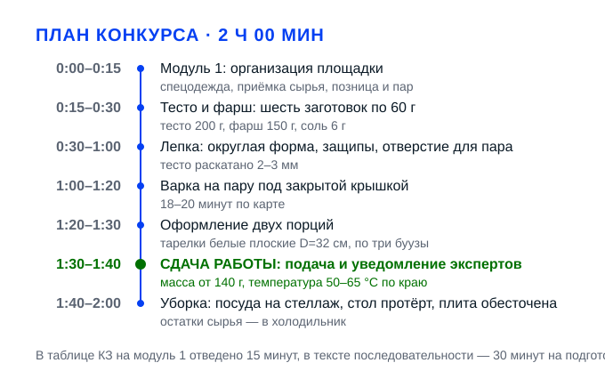
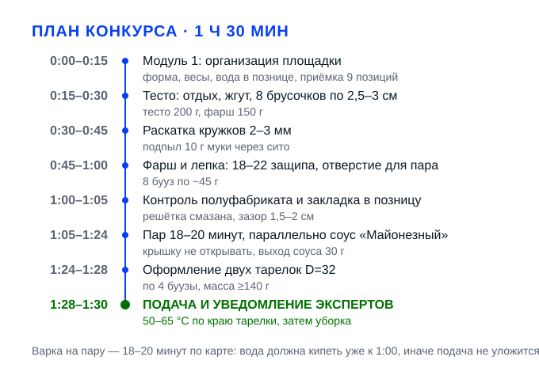
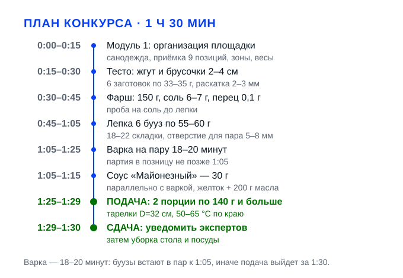

Лепка бурятских бууз (ФВ)
Задания ниже — официальные файлы «Абилимпикс» (источник: abilympics-russia.ru), разложенные по категориям. Решения написаны по тексту задания, регламенту и критериям оценки; в них указано, что именно проверяет эксперт.
Школьник
14–16 лет, базовый уровень заданияВ официальном файле категории не разделены отдельными разделами — приводим задание целиком; различия по категориям смотрите в таблице модулей.
Пошаговое решение
Задание для школьников состоит из двух модулей и укладывается в 2 часа. Первый модуль — организация работы на площадке, на него отведено 15 минут, и результат здесь один: готовность рабочего места. Второй модуль длится 1 час 45 минут, и за это время нужно слепить из 210 граммов теста и 150 граммов фарша восемь бууз, сварить их на пару за 18–20 минут и подать две порции. Результат проверяют по пяти признакам: округлая форма с аккуратными защипами, белые круглые плоские тарелки диаметром 32 сантиметра, масса порции не менее 140 граммов, температура подачи 50–65 градусов по краю тарелки и уведомление экспертов о завершении. Ниже каждый шаг разобран целиком: что и как делать, зачем это по критериям, как проверить результат, что ломается и в какой момент смотрит эксперт. Главная ловушка — пар: он не ускоряется, поэтому буузы должны выйти в позницу не позже чем за полчаса до подачи.

Задача 1. Организовать площадку и подготовить рабочее местоМодуль 1 · 15 минут
Первый модуль длится 15 минут и оценивается по готовности рабочего места, а не по тому, что вы успели налепить. За это время нужно войти в бокс по санитарным правилам, разложить инвентарь по зонам, проверить весы, индукционную плиту и позницу, принять сырьё по перечню и распределить два часа конкурса по операциям. Всё, что не сделано в эти пятнадцать минут, потом отнимается у лепки, а второй модуль на 1 час 45 минут уже расписан под тесто, пар и подачу.
Действие 1.1. 1. Войти на площадку по санитарным правилам
Шаг 1.1.1
Надеваем полный комплект форменной одежды: белую хлопчатобумажную куртку, брюки, белый фартук, белый колпак и обувь на нескользящей подошве. Куртку застёгиваем на все пуговицы, завязки фартука прячем так, чтобы они не свисали, а волосы убираем под колпак целиком — спереди, на висках и на затылке. Кольца, часы и браслеты снимаем заранее, булавки и острые предметы в карманах не держим: перед стартом это проверяют.
Форменная одежда вынесена в конкурсном задании отдельным требованием, и первый модуль оценивают именно по готовности рабочего места, а не по намерению его подготовить. Выбившиеся волосы и расстёгнутая куртка читаются экспертом как нарушение санитарии с первой минуты, задолго до того, как вы взяли скалку. На категории школьников это ещё и безопасность: длинный рукав рядом с индукционной плитой и открытым паром.
Отойдите к зеркалу или попросите волонтёра посмотреть со спины. Волос не видно ни спереди, ни сзади, куртка застёгнута и не топорщится, рукава не спускаются ниже локтя, обувь закрытая и сухая. Если колпак держится слабо — заколите волосы под него, это нормально и занимает полминуты.
Ошибка номер один — надеть колпак на макушку, оставив затылок открытым: спереди всё выглядит прилично, а сзади волосы выбиваются, и эксперт это видит. Ошибка номер два — прийти в открытой обуви или футболке, рассчитывая переодеться потом: время уйдёт из модуля 1, а балл за внешний вид уже не вернуть.
Эксперт фиксирует соответствие одежды до старта и потом следит, остаётся ли она чистой: мука на груди и пятна от фарша к середине конкурса тоже считаются. Отдельно проверяет обувь: открытые сандалии на мокром полу он отмечает как нарушение, даже если всё остальное в порядке.
Шаг 1.1.2
Моем руки с мылом до запястий, не меньше двадцати секунд, не забывая большие пальцы и промежутки между пальцами, затем вытираем одноразовым бумажным полотенцем и сразу выбрасываем его. Ногти коротко подстрижены, без лака и покрытия. Руки повторно моем после каждого контакта с сырым фаршем, после уборки и после того, как поправили колпак или лицо. Ногти проверяем на свет: под ними не должно быть тёмной полоски — это первое, что смотрит эксперт, когда подходит к участнику.
Личная гигиена — сквозное требование конкурсного задания: оно записано и в разделе о санитарии, и в инструкции по охране труда. Сырой мясной фарш несёт бактерии, и если после него взяться за тесто, которое потом едят, блюдо становится опасным. На чемпионате оценивают не только вкус, но и соблюдение норм, а грубое нарушение санитарии может закрыть вопрос о зачёте целиком.
Руки сухие, полотенце использованное и уже в мусоре, а не на столе. Проверить себя просто: если вы только что делили фарш на шарики и собираетесь раскатывать тесто — руки надо вымыть, даже если внешне они чистые. Это и есть правило «сырое отдельно от готового».
Классика — протереть руки о фартук: визуально они сухие, но фартук превращается в переносчика, и это видно. Вторая ошибка — помыть руки один раз на входе и считать вопрос закрытым: оценивают процесс на всём протяжении модуля, а не стартовое состояние.
Эксперт смотрит на руки по ходу работы и отдельно отмечает, моется ли инвентарь после сырого продукта и меняются ли полотенца. Ещё один признак, который он отслеживает, — где лежит использованное полотенце: на столе или уже в мусоре.
Шаг 1.1.3
Подходим к производственному столу 1800 на 600 и 850 миллиметров и осматриваем его: поверхность сухая, без сколов и трещин, стол не качается, пол под ногами не скользкий. Ставим рядом с правой рукой то, что понадобится чаще всего — скалку, скребок для теста, сито, — а сырьё убираем в зону слева, чтобы не тянуться через всю столешницу. Сразу отводим место под горячую посуду: туда встанет позница.
Модуль 1 оценивается по готовности рабочего места, и первым признаком готовности эксперт считает именно осмотренный, устойчивый и свободный стол. Качающийся стол — это ещё и риск: на нём стоит кастрюля с кипящей водой, и одно неловкое движение опрокидывает её на ноги. Порядок зон экономит не баллы, а минуты: в модуле 2 их всего 105, и каждая лишняя прогулка вокруг стола стоит дорого.
Стол не двигается, если надавить на угол; на поверхности нет трещин и липких следов; до всех инструментов вы дотягиваетесь, не сходя с места. Полотенце для рук и полотенце для посуды висят раздельно, а не лежат одной кучей.
Занимать всю столешницу сырьём и посудой, оставляя себе пятачок для раскатки: кружок теста некуда положить, и он прилипает к краю доски. Вторая ошибка — поставить позницу на край стола, где её легко задеть локтем.
Эксперт обходит бокс в первые минуты и отмечает, свободна ли рабочая зона и выдержаны ли расстояния между оборудованием. Он же засекает, сколько времени ушло на осмотр: больше пяти минут — значит, участник не готов к старту.
Действие 1.2. 2. Разложить инвентарь по зонам и проверить оборудование
Шаг 1.2.1
Раскладываем инвентарь по четырём зонам: тесто, фарш, пар и подача. На белую доску 600 на 400 кладём раскатку теста, на красную — работу с мясным фаршем, силиконовый коврик 300 на 400 ставим под раскатку, три нержавеющие миски 25–28 сантиметров отводим под тесто, фарш и подпыл. Скребок для теста, сито не меньше 12 сантиметров и сито-кружку ставим в тестяную зону — они нужны раньше всего.
Цветовая маркировка досок — требование санитарии, а не украшение: на белой обрабатывают тесто, на красной мясо, и путать их нельзя, иначе сырой фарш оказывается там, где лежит готовое тесто. Разложенные по зонам инструменты — прямой признак организационных навыков, который модуль 1 и проверяет. Кроме того, при работающем порядке вы не ищете скалку в муке и не хватаете красную доску вместо белой.
Все шесть досок на месте, но используются по назначению: тесто — белая, фарш — красная, остальные лежат в запасе. Миски пустые и сухие, сито под рукой, скребок не потерян среди муки. Пройдите взглядом по зонам слева направо — маршрут должен читаться без раздумий.
Взять первую попавшуюся доску — самая частая ошибка, и она видна эксперту сразу, потому что цвет доски под фаршем говорит сам за себя. Вторая — сложить весь инвентарь в одну миску «чтобы не мешал»: потом каждая мелочь ищется по минуте.
Эксперт оценивает организацию по расположению инвентаря: есть ли отдельная зона под сырое, под тесто и под подачу. Отдельно отмечает, лежат ли доски на столе, а не на краю мойки, и стоит ли рядом с зоной теста миска с мукой.
Шаг 1.2.2
Включаем настольные электронные весы и проверяем их: предел взвешивания не менее трёх килограммов, наименьший — 10 граммов. Ставим на платформу пустую миску и обнуляем тару кнопкой «Т»; после этого весы показывают ноль. Контрольную проверку делаем на глаз по упаковке с известной массой — например, по пачке соли или муки, — и убеждаемся, что расхождение не больше двух граммов.
Всё задание держится на трёх числах: 210 граммов теста, 150 граммов фарша и выход не менее 140 граммов на порцию. Если весы врут или тара не обнулена, эти числа расходятся, и вы узнаете об этом только на подаче, когда уже ничего не исправить. Весы с шагом 10 граммов — единственный измерительный прибор в боксе, и модуль 1 прямо требует проверить его исправность.
На платформе пустая миска — показание ноль. Положите в неё 100 граммов муки: показание должно быть 100 ± 2 грамма. Платформа не шатается, дисплей не мигает, на весы не попадает вода. Если показание пляшет, поставьте весы на ровную неподвижную поверхность подальше от работающей плиты.
Взвешивать в миске, забыв обнулить тару: потом весь расчёт теста и фарша съезжает на массу посуды, а порции выходят неровными. Вторая ошибка — ставить на платформу тяжёлую кастрюлю с водой: предел три килограмма, и весы придётся менять по ходу конкурса.
Эксперт может подойти и посмотреть, обнулена ли тара и стоит ли миска по центру платформы, — это часть оценки работы с весоизмерительными приборами. Он может попросить показать нулевое показание после тарирования — это занимает секунду.
Шаг 1.2.3
Проверяем индукционную плиту и позницу: у позницы должно быть ферромагнитное дно, поэтому прикладываем к нему магнит — если держится, посуда подходит для индукции. Ставим позницу на конфорку по центру, наливаем воду так, чтобы её уровень был на два-три сантиметра ниже решётки, и проверяем, что решётка встаёт в свои упоры и не проваливается. Крышку кладём рядом, а не на плиту.
Пар — единственный способ тепловой обработки в этом задании, и весит он больше всего: по техкарте буузы варят 18–20 минут, и без устойчивого кипения это время ничего не значит. Нержавеющая позница без ферромагнитного дна на индукции просто не нагреется, и вы потеряете десять минут на выяснение причины. Вода ниже решётки — условие, при котором буузы готовятся паром, а не варятся в воде.
Магнит держится на дне, позница стоит ровно и не качается, вода налита до нужного уровня, решётка зафиксирована. Включите плиту на минуту: вода должна начать прогреваться, а на поверхности не должно быть трещин и посторонних предметов.
Поставить на индукцию обычную кастрюлю без магнитного дна и ждать нагрева — время уходит, вода холодная. Вторая ошибка — налить воду выше решётки: буузы окажутся в кипятке, тесто размокнет и расползётся.
Технический эксперт проверяет, умеет ли участник обращаться с индукционным оборудованием и понимает ли принцип работы позницы. Его интересует и то, стоит ли крышка на своём месте, а не на соседней конфорке.
Шаг 1.2.4
Проверяем холодильный шкаф: дверь открываем коротко, смотрим, что полки чистые и температура держится в рабочем диапазоне, а рядом с агрегатом нет никаких коробок. Свободную полку сразу отводим под фарш и тесто, чтобы не искать место с руками в муке. Мусорный бак ставим в стороне от рабочей зоны, в него кладём пакет 60 литров, а бумажные полотенца и губку определяем на отдельную полку стеллажа.
Холодильник нужен не для красоты: фарш и тесто должны оставаться холодными, пока вы работаете с другой частью заготовки, иначе фарш течёт и защипы не держатся. Требование открывать дверь коротко записано в инструкции по охране труда, и его соблюдение тоже фиксируется. Отдельное место под мусор — это про чистоту на площадке, которую оценивают наравне с самим блюдом.
Полка свободна и подписана вами мысленно как «сырое», бак пустой и с пакетом, полотенца сухие, стеллаж не завален. Дверь холодильника закрывается сама, и вы не оставляете её приоткрытой, пока отходите к столу.
Сложить фарш на верхнюю полку рядом с готовыми продуктами — нарушение товарного соседства, за которое снижают оценку по санитарии. Вторая ошибка — поставить бак прямо под ноги: вы будете задевать его каждые пять минут.
Эксперт смотрит на раздельное хранение сырья и на чистоту зоны вокруг холодильника. Ему важно увидеть, что фарш убран в холод до начала работы с тестом, а не лежит на столе рядом с доской.
Действие 1.3. 3. Принять сырьё по перечню и технологической карте
Шаг 1.3.1
Берём перечень сырья для школьников и сверяем по нему всё, что стоит на столе: фарш мясной из говядины и свинины — 150 граммов, тесто бездрожжевое — 200 граммов, соль — 6 граммов, перец чёрный молотый — 0,1 грамма, масло растительное — 50 миллилитров, мука пшеничная — 10 граммов. Каждую строку отмечаем про себя, а расхождения запоминаем точно: чего нет, сколько нет и в каком виде.
Приёмка — единственный момент, когда недостающее ещё можно получить: после старта замена идёт только через главного эксперта и только при уважительной причине. Перечень и технологическая карта — это тот документ, по которому потом сверяют и вашу работу, поэтому расхождение лучше обнаружить сейчас, а не в момент, когда фарш уже посолен. Пятнадцати минут модуля 1 на спокойную сверку хватает.
Все шесть строк перечня подтверждены, числа совпадают с заданием. Мука 10 граммов кажется мелочью, но она идёт на подпыл, и без неё тесто будет липнуть к скалке и к доске. Сверьте и тару: тесто должно быть расфасовано, а не лежать куском на доске, иначе его массу не проверить.
Начать с фарша, не сверив список: соль и перец обнаружатся в самый неподходящий момент. Вторая ошибка — увидеть, что теста меньше, и промолчать, рассчитывая «растянуть»: тогда либо не хватит на две порции, либо порции выйдут разного веса.
Эксперт проверяет, работал ли участник по перечню: аккуратно разложенное сырьё по позициям видно сразу. Отдельно он смотрит на соль и перец: они должны стоять отдельно, а не быть уже высыпанными в фарш до приёмки.
Шаг 1.3.2
Оцениваем фарш и тесто органолептически. Фарш должен быть холодным — не выше четырёх градусов, — однородного розово-красного цвета, без серых пятен, с чистым запахом свежего мяса; если он липнет к пальцам и тянется, значит, уже начал греться. Тесто бездрожжевое смотрим на упругость: оно не крошится, не липнет к рукам и после нажатия пальцем медленно возвращает форму.
Из подогретого фарша получаются буузы с лопнувшим тестом: сок внутри закипает интенсивнее, и шов не выдерживает. Тёплое тесто рвётся при раскатке и не держит защип. Всё это проверяется на глаз и на ощупь за две минуты, а стоит целой порции и оценки за качество полуфабриката.
Фарш холодный на ощупь, цвет ровный, запах свежий, на разрезе нет грубых плёнок. Тесто эластичное: сжатый в кулаке кусочек распрямляется, а не рассыпается. Сомнительный продукт откладываем в сторону и идём к эксперту.
Самая опасная ошибка — работать с тёплым фаршем «на вид нормальным»: внешне он выглядит хорошо, но температура нарушена, и на пару он поведёт себя иначе. Вторая — выбросить сомнительный продукт молча: замену не дадут, и вы останетесь без начинки.
Эксперт может подойти на этапе приёмки и поинтересоваться, как участник определяет доброкачественность сырья. Если продукт вызывает сомнение, эксперт ожидает, что участник подойдёт сам, а не начнёт с ним работать.
Шаг 1.3.3
Взвешиваем тесто и фарш по отдельности на весах с обнулённой тарой. По технологической карте масса теста — 210 граммов, масса фарша — 150 граммов, и это сходится с перечнем: 200 граммов теста плюс 10 граммов муки на подпыл как раз дают 210. Тесто оставляем в миске под плёнкой, фарш — в миске на холоде, и запоминаем две цифры, с которыми дальше будете сверять каждую заготовку.
Три числа из технологической карты — 210, 150 и 140 — задают всю арифметику задания: восемь заготовок по 26 граммов теста и 18–19 граммов фарша дают вместе около 360 граммов, а после пара это как раз две порции по 140 с лишним граммов. Если тесто и фарш не взвешены, дальше приходится делить на глаз, и порции выходят разного размера — а одинаковость эксперты видят без всяких весов.
Весы показали 200 и 150 граммов с отклонением не больше двух. Плёнка на тесте лежит плотно, миска с фаршем стоит в холодильнике. Проверьте, что рядом с весами нет рассыпанной муки: она попадает под платформу и сбивает показания.
Делить тесто и фарш «на глаз»: одна бууза выходит крупной, другая похожей на пельмень, и композиция на тарелке рассыпается. Вторая ошибка — оставить тесто открытым: за двадцать минут оно заветрится и покроется сухой коркой, которая мешает защипывать.
Эксперт смотрит на весы в момент взвешивания и потом сверяет с ним массу готовых изделий. Ему также видно, записал ли участник цифры или полагается на память: на середине работы числа забываются.
Действие 1.4. 4. Спланировать два часа и подготовить подачу
Шаг 1.4.1
Раскладываем время по операциям до старта: модуль 1 — 15 минут, дальше на тесто и фарш уходит около 25 минут, на раскатку кружков — 15, на лепку восьми бууз — 30, на закладку в позницу — 5, на варку — 20, на оформление и подачу — 8, на уборку — 5. В сумме это 1 час 45 минут второго модуля с небольшим запасом, и запас нужен именно на пар: он не ускоряется, сколько бы вы ни торопились.
Модуль 2 длится 1 час 45 минут, и результат фиксируется по факту подачи двух порций. Варка занимает 18–20 минут по техкарте, то есть это единственная операция, которую нельзя сжать, — значит, заготовка должна быть в познице не позже чем за тридцать минут до конца. План, записанный до старта, экономит нервы в середине работы, когда руки в муке, а часы на стене идут.
План записан и лежит на виду, время начала каждой операции понятно. Проверьте точку невозврата: если к отметке 1 час 05 минут буузы ещё не в познице, вы уже в цейтноте и надо сокращать оформление, а не варку.
Планировать «по ощущениям» и вспомнить про часы только когда вода закипела: на лепку уходит в полтора раза больше времени, чем кажется. Вторая ошибка — заложить на оформление двадцать минут и потом стоять над остывающими буузами.
Организационные навыки входят в оценку модуля 1, и эксперту видно, сверялся ли участник с часами по ходу работы. Он сравнивает фактическое время операций с планом участника, если тот записан и лежит на виду.
Шаг 1.4.2
Готовим подачу заранее: берём две белые круглые плоские тарелки диаметром 32 сантиметра, без декора и с ровными полями, протираем их насухо и ставим в тёплое место подальше от пара. Рядом кладём чистое полотенце для протирки края и освобождаем на столе площадку, куда тарелки встанут в момент подачи. Диаметр проверяем по борту: если тарелка меньше 30 сантиметров, она не подходит.
Требование к подаче в конкурсном задании сформулировано жёстко: белые круглые плоские тарелки диаметром 32 сантиметра, без декора, с ровными полями. Это проверяется визуально в момент подачи, и тарелка с рисунком или меньшего диаметра обесценивает даже идеально слепленные буузы. Прогретая тарелка нужна, чтобы блюдо держало температуру подачи 50–65 градусов по краю.
Обе тарелки белые, круглые, плоские, ровно 32 сантиметра, сухие и без капель. Они стоят там, где вы не будете их задевать локтем. Полотенце для края лежит отдельно от того, которым вытираете руки. Поставьте тарелки так, чтобы до них не долетали брызги от позницы: жирное пятно на белом не оттереть за минуту.
Взять тарелки «какие дали» и обнаружить декор или скол уже на выкладке: переложить буузы с одной тарелки на другую, не повредив их, почти невозможно. Вторая ошибка — держать тарелки рядом с плитой, где на них оседает конденсат.
Эксперт осматривает посуду до подачи и фиксирует соответствие требованиям по цвету, форме и диаметру. Отдельно он проверяет, стоят ли тарелки накрытыми: пыль и капли на белом видны сразу.
Задача 2. Подготовить тесто и фарш, раскатать кружкиМодуль 2 · часть 1 из 3
Технологическая карта задаёт две вещи, от которых зависит всё остальное: тесто раскатывают слоем 2–3 миллиметра, а фарш делят так, чтобы начинки хватило каждому кружку. Из 210 граммов теста и 150 граммов фарша получается восемь заготовок, то есть ровно четыре буузы на порцию. Здесь же решается вопрос соли и перца: 6 граммов соли и 0,1 грамма перца — это не «на глаз», а конкретные числа из карты, и они определяют вкус всего блюда.
Действие 2.1. 1. Подготовить тесто и разделить его на заготовки
Шаг 2.1.1
Достаём тесто из холодильника и даём ему полежать на столе под плёнкой 15–20 минут, пока оно не прогреется до комнатной температуры. За это время начинаем заниматься фаршем и инвентарём, а не стоим над миской. Готовность проверяем пальцем: тесто продавливается мягко, без усилия, и не тянет за собой соседние участки. Если тесто всё ещё холодное через двадцать минут, подержите его в ладонях, но не над плитой: от горячего пара оно отсыревает сверху.
Холодное тесто не раскатывается, а рвётся по краям: клейковина в нём сжата, и усилие уходит в разрыв, а не в растяжение. Прогретое тесто даёт ровный кружок толщиной 2–3 миллиметра — именно эту цифру требует технологическая карта. Пятнадцать минут ожидания окупаются тем, что потом не приходится заклеивать трещины и перекатывать заготовки.
Тесто мягкое, но не липкое, при нажатии пальцем остаётся вмятина, которая медленно выравнивается. Плёнка снята только с той части, которую берёте в работу, остальное по-прежнему закрыто. Сожмите кусочек в кулаке: он должен слипаться, но не прилипать к ладони.
Раскатывать прямо из холодильника «пока холодное, легче»: кружки выходят с рваными краями, и защипывать их нечем. Вторая ошибка — передержать тесто на жаре у плиты: оно начнёт расползаться и прилипать к скалке.
Эксперт смотрит на консистенцию теста в работе: ровный край кружка — признак правильной подготовки. Он смотрит и на то, закрыто ли тесто плёнкой, пока участник занят другой операцией.
Шаг 2.1.2
Скатываем тесто в круглый жгут толщиной около трёх сантиметров и нарезаем его на брусочки длиной 2–4 сантиметра, как описано в технологической карте. Брусочков должно получиться восемь — по числу будущих бууз, и каждый весит около 26 граммов. Режем скребком для теста, а не ножом: скребок не сминает край и не тянет тесто за собой. Каждый брусок после нарезки поворачиваем срезом вниз и слегка прижимаем ладонью, чтобы он не раскатывался в овал.
Нарезка на равные брусочки — это способ получить восемь одинаковых изделий без бесконечного взвешивания. 210 граммов теста на восемь частей дают 26 граммов на кружок, и именно из такого кружка при толщине 2–3 миллиметра получается диаметр 10–11 сантиметров — достаточный, чтобы накрыть 18–19 граммов фарша и собрать защипы.
Восемь брусочков, разница в массе между крайними не больше двух граммов. Положите их на припылённую мукой доску и накройте плёнкой, чтобы не сохли, пока раскатываете первый. Выложите брусочки в ряд и сравните: они должны быть одного размера, как ложки в наборе.
Нарезать «на глаз» и получить семь или девять частей: тогда либо одна бууза выходит крупнее остальных, либо не хватает заготовки на порцию. Вторая ошибка — резать ножом и придавливать тесто: край брусочка слипается и плохо раскатывается.
Эксперт обращает внимание на одинаковость заготовок: это первый признак того, что изделия получатся ровными. Равные брусочки он считает первым доказательством того, что участник считает, а не лепит наугад.
Шаг 2.1.3
Припыляем рабочую поверхность и скалку мукой из тех 10 граммов, что даны на подпыл: мука должна лежать тонким слоем, а не горкой, — излишек потом горит на пару и даёт серые пятна на тесте. Остаток муки держим в отдельной миске и подсыпаем по щепотке, если тесто начнёт липнуть. Каждый раскатанный кружок сразу накрываем плёнкой или перекладываем под полотенце.
Подпыл — единственная защита от прилипания: без него кружок рвётся при съёме с доски, а лишняя мука уходит внутрь шва и он не склеивается. Десять граммов муки в перечне даны именно на эту операцию, и потратить их надо расчётливо, потому что добавки не будет. Плёнка на кружках сохраняет влажность: подсохшее тесто не защипывается вовсе.
Мука лежит тонким слоем, кружок снимается с доски свободно, не оставляя на ней прилипших участков. На тесте нет сухих белых разводов, а под плёнкой не собирается конденсат. Проведите тыльной стороной пальца по столу: мука должна чувствоваться пудрой, а не слоем.
Высыпать всю муку на стол и раскатывать в ней кружки: тесто набирает лишнюю муку, шов получается мучным и расходится на пару. Вторая ошибка — оставить кружки открытыми: через десять минут края становятся сухими и ломкими.
Эксперт проверяет поверхность теста: излишек муки виден по белому налёту и по тому, как ведёт себя шов. Ему видно и количество муки на столе: горка вместо тонкого слоя говорит о неаккуратном подпыле.
Действие 2.2. 2. Раскатать кружки толщиной 2–3 миллиметра
Шаг 2.2.1
Берём двуручную деревянную скалку и раскатываем брусок от центра к краям, поворачивая заготовку на четверть оборота после каждого прохода. Давим серединой скалки, а не рукоятками: так усилие распределяется ровно и кружок остаётся круглым, а не вытягивается овалом. Через шесть-восемь проходов тесто доходит до нужной толщины, и лишних движений делать не нужно.
Технологическая карта требует толщину 2–3 миллиметра, и это не прихоть: тоньше — тесто рвётся при лепке и лопается на пару, толще — дно не пропекается и остаётся клёклым. Раскатка от центра к краю даёт равномерную толщину и позволяет оставить край чуть тоньше середины, что важно для защипа. Восемь кружков при таком подходе занимают около пятнадцати минут.
Кружок лежит на коврике ровно, без складок, форма близка к кругу, а не к овалу. Проведите ладонью: поверхность гладкая, бугров нет. Диаметр — 10–11 сантиметров, то есть чуть больше ладони. Проверьте симметрию: сложите кружок пополам — края должны сойтись, а не разойтись на палец.
Раскатывать в одном направлении, не поворачивая заготовку: получается овал, из которого круглую буузу не собрать. Вторая ошибка — давить на рукоятки и продавливать тесто до коврика в центре. Третья по частоте — раскатать кружок на весу, держа его в руке: тесто провисает и утончается в центре.
Эксперт смотрит на форму и однородность кружков: овальные и с наплывами по краю сразу выдают технику. Отдельно он отмечает, поворачивает ли участник заготовку: по этому признаку видно, учили его раскатке или нет.
Шаг 2.2.2
Контролируем толщину доступными способами. Первый — на просвет: поднимите кружок к свету, тень от пальцев должна читаться, но сами пальцы не должны просматриваться насквозь. Второй — по краю: приложите к срезу кружка ноготь, толщина примерно с ним и сравнима. Третий — по массе: кружок из 26 граммов теста при диаметре 10–11 сантиметров как раз укладывается в 2–3 миллиметра.
Толщина — единственный параметр раскатки, который прямо записан в технологической карте, и он определяет, пропечётся ли тесто за 18–20 минут на пару. Слишком толстое дно остаётся сырым в центре, слишком тонкое рвётся под весом фарша. Проверка по трём признакам занимает секунды и не требует дополнительных приборов.
Кружок просвечивает ровно, без светлых плотных участков и без тёмных дыр. Край на полтора-два миллиметра тоньше середины. Если толщина «гуляет» — перекатайте, это быстрее, чем переделывать буузу. Сравните массу двух кружков на весах: разница больше двух граммов означает разную толщину.
Раскатать с утолщением по центру «чтобы не прорвалось»: центр не пропечётся, а на разрезе будет видна плотная пробка теста. Вторая ошибка — раскатать слишком тонко: при лепке тесто лопается у основания защипа.
Эксперт может попросить показать кружок или разрезать готовую буузу, чтобы проверить толщину теста. Он может попросить показать кружок на просвет — это самый быстрый способ проверить толщину.
Шаг 2.2.3
Укладываем готовые кружки стопкой через плёнку или в один слой на припылённую доску и держим под полотенцем, пока не раскатаны все восемь. Кладём их лицевой стороной вниз, чтобы подпыленная поверхность оказалась внутри. Работаем по принципу «раскатал — сразу под плёнку», не оставляя кружки открытыми на столе. Если между кружками остаётся время, лучше раскатывать по два и сразу лепить, чем заготавливать все восемь заранее.
Кружки сохнут очень быстро: открытая поверхность за десять минут покрывается коркой, и защип на ней не склеивается. Стопка через плёнку сохраняет влажность и не даёт кружкам слипнуться между собой. Лицевая сторона вниз — потому что подпыл внутри шва улучшает склеивание, а снаружи даёт белый налёт на готовом изделии.
Кружки лежат ровно, не слиплись, под полотенцем прохладно и влажно. Возьмите верхний: он мягкий, гнётся, но не рвётся. Сухих, шелушащихся краёв быть не должно. Через десять минут проверьте верхний кружок: он должен гнуться, а не ломаться по краю.
Сложить кружки стопкой без плёнки: они слипаются в один комок, и разделить их, не порвав, уже не получится. Вторая ошибка — оставить последний кружок на столе открытым, пока лепите первый: к моменту лепки он уже сухой.
Эксперт отмечает, как участник обращается с заготовками: сухие края видны и на готовом изделии, и в момент лепки. Ему заметно и то, как лежат кружки: стопкой через плёнку или россыпью, подсыхающей на столе.
Действие 2.3. 3. Заправить фарш солью и перцем и разделить его на порции
Шаг 2.3.1
Отвешиваем 6 граммов соли и 0,1 грамма чёрного молотого перца. Настольные весы с шагом 10 граммов такие массы не покажут, поэтому соль отмеряем мерной ложкой из расчёта «чайная ложка без горки — около семи граммов», а перец берём на кончик ножа: 0,1 грамма — это примерно пятая часть щепотки, которую берут тремя пальцами. Если в боксе есть весы с точностью до 1 грамма, взвешиваем соль на них, а перец делим по ориентиру «на кончике ножа».
Соль и перец — единственные вкусовые компоненты в фарше школьника: в перечне нет ни лука, ни воды, ни яйца, поэтому 6 граммов соли на 150 граммов мяса и дают тот самый вкус бууз. Недосол не исправить после варки, а пересол чувствуется сразу. Данные в карте числа — 6 и 0,1 — выверены на порцию, и отклонение в два раза уже меняет блюдо.
Соль отмерена и высыпана в отдельную мисочку, перец рядом. Проверьте себя: 6 граммов соли — это чуть меньше чайной ложки, а не столовая. Перец должен быть молотым, без комков, и его должно быть видно в фарше как мелкие тёмные точки.
Насыпать соль «на глаз» и потом пробовать сырой фарш, чтобы понять: на сыром мясе вкус соли ощущается иначе, чем в готовом изделии, и подсаливание по пробе почти всегда даёт пересол. Вторая ошибка — положить перец горкой: 0,1 грамма и щепотка «от души» различаются в пять раз.
Эксперт смотрит, взвешивает ли участник специи и знает ли нормы расхода по технологической карте. Он смотрит, отвешаны ли соль и перец отдельно, до смешивания с фаршем.
Шаг 2.3.2
Вымешиваем фарш с солью и перцем две-три минуты, пока масса не станет однородной и слегка липкой. Мешаем рукой в силиконовой перчатке или лопаткой, собирая массу со стенок миски к центру. Готовый фарш сразу убираем в холодильник и достаём порциями, а не держим всю миску на столе, пока лепим восемь бууз. Пробовать сырой фарш на вкус не нужно: соль распределяется равномерно, а вкус всё равно меняется после пара.
Вымешивание распределяет соль равномерно: если её не размять, одна бууза окажется солёной, другая пресной — и на дегустации это заметят. Однородность массы влияет и на лепку: невымешанный фарш ложится комками, между ними остаются пустоты, и при варке бууза проседает. Холод — единственный способ удержать фарш в рабочем состоянии, пока вы работаете с тестом.
Фарш однородный, цвет ровный по всей массе, на ощупь холодный и слегка липкий. При сжатии в кулаке держит форму, не распадается. На поверхности нет блестящих капель жира — если они появились, фарш перегрелся.
Мешать фарш тёплыми руками долго и интенсивно: он нагревается, жир начинает отделяться, и начинка теряет сочность. Вторая ошибка — держать миску с фаршем рядом с плитой, где работает пар. Если мешать фарш без соли и добавить её в конце, соль ложится неравномерно, и в готовой буузе она чувствуется отдельными крупинками.
Эксперт обращает внимание на консистенцию фарша и на то, держит ли участник его в холоде. Его интересует и температура фарша в момент лепки: тёплый фарш заметен по блеску на поверхности.
Шаг 2.3.3
Делим 150 граммов фарша на восемь частей по 18–19 граммов: удобнее всего сначала разделить массу пополам, потом каждую половину ещё на четыре части, а затем скатать шарики и проверить два-три из них на весах. Шарики кладём на припылённую доску или в миску и убираем в холодильник до момента лепки. Руки после каждого подхода к фаршу моем или меняем перчатки.
Ровные порции фарша — условие одинаковых бууз, а одинаковость входит в требования к результату. 150 граммов на восемь частей дают 18,75 грамма, и именно столько начинки помещается в кружок диаметром 10–11 сантиметров, не разрывая его. Заранее скатанные шарики экономят время на лепке: не нужно каждый раз отщипывать фарш испачканными руками.
Все восемь шариков примерно одного размера, разница не больше двух граммов. Они холодные, держат форму и не расплываются на доске. Мисок с фаршем на столе не осталось — всё в холодильнике. Для контроля взвесьте все восемь шариков: разброс больше двух граммов — пересоберите два крайних.
Отщипывать фарш на глаз при лепке: одна бууза получается перегруженной, тесто не сходится в защип, другая — почти пустая. Вторая ошибка — оставить шарики на тёплом столе: к середине лепки они размягчаются и текут.
Эксперт сверяет массу заготовок и одинаковость изделий, а начинается это с одинаковых шариков фарша. Отдельно он проверяет, одинаковы ли шарики: это видно ещё до лепки, по доске.
Задача 3. Слепить восемь бууз и заложить их в позницуМодуль 2 · часть 2 из 3
Здесь делается то, что эксперт увидит на тарелке: круглая форма с аккуратными защипами и небольшим отверстием для выхода пара. Технологическая карта описывает эту операцию одной фразой — фарш накладывают на раскатанные кружки, края защипывают, оставляя отверстие, — но за ней стоят тридцать минут работы и 12–16 складок на каждой буузе. Ошибки лепки не исправляются на пару: разошедшийся шов виден и на тарелке, и в разрезе.
Действие 3.1. 1. Собрать буузу с защипами и отверстием для пара
Шаг 3.1.1
Кладём кружок на ладонь левой руки, а правой выкладываем в центр шарик фарша весом 18–19 граммов и слегка разравниваем его тыльной стороной пальцев. Фарш не должен доходить до края кружка примерно на полтора-два сантиметра: этот запас пойдёт на защипы. Если шарик лежит ближе к краю, тесто там намокнет и порвётся при сборке. Пальцы при этом держим сухими: мокрый палец оставляет на тесте вмятину, которая на пару превращается в трещину.
Свободный край — это материал для защипа: из двух сантиметров теста получается 12–16 складок, и шов держится на пару. Фарш, подступивший к самому краю, увлажняет тесто, оно теряет упругость и рвётся именно там, где вы его растягиваете. Технологическая карта прямо предписывает накладывать фарш на кружок и защипывать края, не заполняя их.
Фарш лежит горкой в центре, вокруг него чистое кольцо теста шириной в два пальца. Ладонь под кружком не даёт ему провиснуть и порваться под весом начинки. Проверьте большим пальцем: до края остаётся не меньше полутора сантиметров.
Разложить фарш почти до края «чтобы больше влезло»: край намокает, и при защипывании он лопается, а фарш выходит наружу. Вторая ошибка — положить шарик сбоку от центра: одна сторона остаётся без начинки, а на другой тесто натягивается до разрыва.
Эксперт смотрит на соотношение теста и фарша: бууза должна быть плотной, но не перегруженной. Он оценивает и соотношение: теста вокруг фарша должно оставаться не меньше полутора сантиметров.
Шаг 3.1.2
Защипываем по кругу: большим и указательным пальцами захватываем край и делаем первую складку, затем следующую рядом с ней, постепенно поворачивая буузу в левой руке. Всего получается 12–16 складок шириной около сантиметра, каждая прижимается к предыдущей и придавливается у основания. Двигаемся по кругу в одну сторону, не пропуская участков и не возвращаясь назад.
Защипы — главный критерий формы в конкурсном задании: буузы должны быть круглой формы с аккуратными защипами. Редкие, косые или разной ширины складки читаются как небрежность, даже если бууза в итоге не развалилась. Частые складки образуют плотный валик, который держит сок внутри и не расходится, когда вода в познице закипает сильнее.
Складки идут ровной спиралью, одинаковой ширины, основание каждой прижато. Проведите пальцем по кругу: валик плотный, без просветов и без торчащих незакреплённых концов теста. Кружок при этом не должен собраться в комок — диаметр остаётся около семи сантиметров.
Делать 5–6 крупных складок: шов получается грубым, с просветами, и на пару расходится, фарш вытекает в воду. Вторая ошибка — защипывать, не прижимая складку к складке: сверху всё закрыто, а внутри шва остаются каналы.
Эксперт осматривает защипы на готовом изделии и на тарелке: аккуратность и равномерность складок — прямой критерий. Он считает складки, если сомневается: меньше десяти — уже небрежность, больше восемнадцати — тесто перетянуто.
Шаг 3.1.3
Поднимаем стенки и формируем купол: последние складки заворачиваем к центру, слегка подтягивая буузу вверх, чтобы она получилась округлой, а не плоской. В центре оставляем отверстие диаметром 8–10 миллиметров — оно нужно для выхода пара. Хвостик теста, который остался в центре, аккуратно защипываем и прижимаем, а не оставляем торчать. Купол придерживаем большим пальцем изнутри, чтобы он не провалился, пока закрепляем последние складки.
Отверстие для выхода пара — требование технологической карты, и оно решает судьбу изделия: без него пар ищет выход и разрывает шов или дно. Слишком большое отверстие тоже плохо — через него вытекает сок, и бууза получается сухой. Купол даёт объём: бууза не расплывается в лепёшку, а держит форму и на пару, и на тарелке.
Отверстие ровное, в центре, размером с мизинец, стенки вокруг него плотно прижаты. Купол поднимается над плоскостью защипов на 4–5 сантиметров. Изделие стоит на ладони устойчиво, не заваливается набок.
Закрыть центр наглухо: на пару бууза лопается по шву, сок вытекает, и вместо буузы на решётке остаётся мятая заготовка. Вторая ошибка — оставить отверстие шириной в два пальца: начинка сохнет, а форма проваливается внутрь.
Эксперт проверяет наличие отверстия до варки и после, а также форму купола на подаче. Отверстие он проверяет до варки: закрытый центр означает, что бууза лопнет на пару.
Шаг 3.1.4
Доводим форму: диаметр готовой буузы — 7–8 сантиметров, высота — 4–5 сантиметров, дно не толще трёх миллиметров. Если бууза вышла перекошенной, поправляем её двумя пальцами, поворачивая в ладони, пока купол не встанет ровно. Готовую заготовку ставим на припылённую доску, а не кладём набок. Проверяем и посадку: бууза должна стоять на доске самостоятельно, не заваливаясь ни в одну сторону.
Круглая форма — прямое требование конкурсного задания, и ровные изделия одинакового размера читаются на тарелке как результат, а не как попытка. Толстое дно — самая частая причина непропечённого теста: 18–20 минут пара не пробивают слой толще трёх миллиметров. Перекошенная бууза при варке заваливается и прилипает к решётке одним боком.
Все заготовки одинаковые на глаз: диаметр в пределах 7–8 сантиметров, высота 4–5, дно не продавливается пальцем. Поставьте две рядом — они должны выглядеть как пара, а не как разные блюда. Поставьте рядом две первые заготовки: если одна выше другой на палец, значит, кружки вышли разными.
Сплющить буузу ладонью, чтобы «села ровнее»: дно утолщается, купол исчезает, и изделие превращается в лепёшку с фаршем. Вторая ошибка — оставить буузу лежать на боку: одна сторона расплющивается, защип деформируется.
Эксперт оценивает форму и одинаковость изделий: ровный ряд одинаковых бууз — признак уверенной техники. Ему важно, чтобы изделия стояли рядом и выглядели как пара, а не как разные блюда.
Действие 3.2. 2. Проверить полуфабрикат и подготовить его к варке
Шаг 3.2.1
Пересчитываем заготовки и осматриваем каждую: восемь штук, шов целый, дно без разрывов, отверстие в центре, купол ровный. Заготовки с разошедшимся швом или трещиной у основания откладываем в сторону — их можно перелепить, пока тесто не подсохло. Осмотр делаем при хорошем свете, поворачивая буузу в руках, а не одним взглядом сверху. Отложенные заготовки не выбрасываем: разберите шов, переложите фарш и перелепите, пока тесто влажное.
Брак, замеченный до варки, исправляется за минуту, а тот же брак после пара уже не исправить: фарш вытек, форма потеряна. Восемь изделий — это расчётная норма из 210 граммов теста и 150 граммов фарша, и она же даёт две порции по четыре буузы. Если заготовок семь, порции выходят неравными, и на тарелке это видно сразу.
Восемь штук на доске, у всех целый шов и целое дно. Нажмите пальцем на дно каждой: оно пружинит, а не проваливается. Светлая полоса на шве означает, что тесто там не склеилось, — такую буузу лучше переделать.
Оставить буузу с трещиной у дна, рассудив, что «на пару затянется»: тесто не затягивается, а рвётся дальше, и фарш оказывается в воде. Вторая ошибка — не пересчитать заготовки и обнаружить нехватку на этапе выкладки, когда позница уже закрыта.
Эксперт может подойти к доске с полуфабрикатом и оценить его до варки — это отдельная точка контроля. Если брак найден и перелеплен, это засчитывается как работа, а не как ошибка.
Шаг 3.2.2
Взвешиваем две-три заготовки на весах: масса одной буузы до варки — 44–46 граммов, то есть 26 граммов теста плюс 18–19 граммов фарша. Если разброс больше трёх граммов, значит, кружки или шарики вышли неровными, и стоит подровнять остальные. Взвешивание делаем на обнулённой таре, аккуратно, чтобы не помять купол. Весы держим подальше от края стола: уронить заготовку с высоты — значит потерять её форму окончательно.
Масса в конкурсном задании задана на выходе: не менее 140 граммов на порцию. Дальше арифметика простая — четыре буузы по 35–37 граммов после пара как раз дают эти 140 с лишним граммов. Проверка на полуфабрикате нужна, чтобы не обнаружить недовес на подаче, когда исправлять уже нечем: считанные граммы решают, засчитают порцию или нет.
Заготовка весом 44–46 граммов, разброс между проверенными не больше трёх. После варки каждая должна весить около 35–37 граммов — то есть потери на пару составляют примерно пятую часть. Запомните эту цифру, она понадобится при контроле перед подачей.
Лепить буузы заметно крупнее «чтобы выглядело солидно»: восемь штук по 60 граммов из этого сырья не получатся, а если получатся, то дно не пропечётся. Вторая ошибка — вообще не проверять массу и узнать про недовес на весах перед подачей.
Эксперт сверяет массу изделий с технологической картой: 140 граммов — минимальный выход, и он проверяется на готовом блюде. Он сопоставляет массу полуфабриката и готового изделия: разница показывает, сколько ушло на пару.
Шаг 3.2.3
Укладываем заготовки на припылённую мукой доску или на силиконовый коврик на расстоянии двух сантиметров друг от друга, отверстием вверх, и накрываем пищевой плёнкой. Держим их так не дольше пятнадцати минут, пока греется вода в познице. Если до варки остаётся больше времени, доску лучше убрать в холодильник, но не под мороз. Если плёнка прилипает к защипам, припылите её мукой с изнанки одним движением.
Плёнка не даёт заготовкам заветриться: подсохший защип на пару трескается, и бууза теряет форму. Расстояние между изделиями нужно, чтобы они не слиплись мокрыми боками — разделить слипшиеся заготовки, не порвав, невозможно. Полуфабрикат, простоявший больше пятнадцати минут на тёплом столе, начинает отсыревать снизу и прилипает к доске.
Заготовки стоят отдельно друг от друга, под плёнкой нет капель конденсата, низ доски сухой. Через десять минут проверьте одну: тесто на ощупь такое же влажное, как сразу после лепки. Поднимите доску и посмотрите снизу: сырых пятен на ней быть не должно.
Накрыть заготовки полотенцем вместо плёнки: ткань тянет влагу из теста, и защипы подсыхают. Вторая ошибка — поставить доску с полуфабрикатом рядом с кипящей позницей: конденсат делает тесто липким, и буузы прилипают к решётке.
Эксперт обращает внимание на состояние полуфабриката перед закладкой: подсохшие защипы видны на готовом изделии. Ему видно, накрыт ли полуфабрикат: подсохший защип он замечает по светлым краям.
Действие 3.3. 3. Заложить буузы в позницу и запустить пар
Шаг 3.3.1
Проверяем позницу: вода налита так, что до решётки остаётся два-три сантиметра, решётка вставлена в упоры, крышка под рукой. Смазываем решётку растительным маслом из тех 50 миллилитров, что даны в перечне: смачиваем салфетку или силиконовую кисть и протираем прутья тонким слоем, не оставляя лужиц. Масло в воде не должно плавать — оно нужно только на поверхности решётки.
Буузы готовятся на пару, а не в воде: уровень ниже решётки — обязательное условие, иначе нижний ряд просто сварят в кипятке. Смазка решётки решает проблему прилипания: тесто на пару становится клейким, и без масла бууза отрывается вместе с куском дна. Пятьдесят миллилитров масла в перечне даны именно на эту операцию и на смазку рук.
Вода не касается решётки, прутья блестят от масла, но с них не капает. Позница стоит на конфорке ровно, по центру. Крышка сухая и подходит по размеру — щель между крышкой и кастрюлей выпускает пар, и время варки растягивается.
Налить воду выше решётки: буузы наполовину в кипятке, тесто размокает, и вместо круглых изделий на решётке оказываются расплывшиеся комки. Вторая ошибка — лить масло прямо в воду: оно всплывает, решётка остаётся сухой, а буузы прилипают.
Эксперт смотрит на подготовку пароварки: уровень воды и смазку решётки видно до закрытия крышки. Он проверяет и уровень воды: слишком высокий сразу выдаёт, что участник не работал с позницей.
Шаг 3.3.2
Выкладываем буузы на решётку отверстием вверх, с зазором полтора-два сантиметра друг от друга и от стенок позницы. Восемь изделий в один ярус обычно встают свободно; если решётка тесная, лучше взять две закладки, чем ставить вплотную. Берём буузу за бока, поддерживая дно, и переносим на решётку, не сжимая купол пальцами. Перед закладкой ещё раз проверяем, что отверстие смотрит вверх: у буузы с завалившимся куполом пар выйдет в бок и разорвёт шов.
Зазор нужен потому, что тесто на пару поднимается и расширяется: стоящие вплотную буузы слипаются боками, и при перекладывании защип рвётся. Сжатый пальцами купол деформируется и уже не распрямится — на тарелке это будет видно как вмятина. Отверстием вверх — иначе вытекающий сок размягчает тесто сверху, и бууза оседает.
Между изделиями остаётся просвет в два пальца, ни одно не касается стенки. Все восемь стоят ровно, отверстия смотрят вверх. Прутья под ними смазаны. Посмотрите на закладку сверху: все восемь отверстий должны читаться как точки.
Поставить буузы в два яруса без второй решётки или вплотную друг к другу: после пара они слипаются в один пласт, и разделить их, не разорвав, нельзя. Вторая ошибка — ставить буузу набок: она заваливается, дно деформируется.
Эксперт фиксирует плотность закладки: слипшиеся изделия на подаче сразу выдают ошибку. Он отмечает и то, как участник берёт буузу: за бока с поддержкой дна или за купол.
Шаг 3.3.3
Закрываем позницу крышкой и включаем индукционную плиту на максимальную мощность до закипания, после чего снижаем до 60–70 процентов, чтобы кипение было бурным, но не выплёскивалось через край. Сразу засекаем время по часам на стене: варить 18–20 минут с момента закипания. Крышку в первые десять минут не открываем. Записываем время прямо у рабочего места: через двадцать минут память подведёт, а часы на стене покажут только текущий момент.
Время варки задано технологической картой — 18–20 минут, и это самый неподатливый параметр всего задания: ускорить пар невозможно, а недоваренное тесто в буузе сразу видно на разрезе. Каждое открывание крышки сбрасывает температуру и растягивает время, поэтому контроль идёт по часам, а не по любопытству. Стабильное кипение — условие того, что все восемь бууз дойдут одновременно.
Пар выходит ровной струёй, крышка горячая, вода кипит без выплёскивания. Запишите время закипания: от него отсчитываются 18 минут до первой проверки. Через десять минут после старта проверьте уровень воды, не открывая крышку полностью, — по звуку и по количеству пара.
Поставить плиту на максимум и держать так все двадцать минут: вода выкипает, дно пригорает, а брызги попадают на буузы. Вторая ошибка — открывать крышку каждые три минуты, чтобы посмотреть: время варки сдвигается, и на подачу вы выходите с недодержанными изделиями.
Эксперт обращает внимание на работу с индукционной плитой: соблюдение температурного режима и дисциплина по времени. Его интересует время закипания: если оно не отмечено, режим проверить невозможно.
Задача 4. Сварить буузы на пару и проверить готовностьМодуль 2 · часть 2 из 3 (окончание)
Варка занимает 18–20 минут и почти не требует вмешательства — но именно на этом этапе теряется больше всего: крышку открывают слишком часто, воду доливают холодной, готовность определяют на глаз. Восемь одинаковых изделий должны дойти одновременно, поэтому режим пара держат ровным, а готовность проверяют по конкретным признакам, а не по настроению.
Действие 4.1. 1. Держать стабильный режим пара
Шаг 4.1.1
После закипания убавляем мощность до 60–70 процентов и держим такое кипение, при котором пар идёт непрерывной струёй, а вода не выплёскивается на решётку. Крышку не приподнимаем первые десять минут: за это время тесто схватывается и держит форму. Плиту не трогаем до первой проверки, регулятор стоит на выбранном делении. Если пар пошёл в обход крышки, поправьте её и прижмите: щель в палец растягивает варку на пять минут.
Первые десять минут на пару тесто теряет пластичность и фиксирует форму: если в этот момент снять крышку, купол осядет, а защипы разойдутся. Ровное кипение даёт одинаковую температуру по всему объёму позницы, и все восемь изделий доходят одновременно — иначе часть бууз готова, а часть ещё сырая. Это и есть та самая тепловая обработка, которую оценивают отдельно.
Пар идёт ровно, без рывков, вода не бурлит через край. Через десять минут посмотрите на крышку: она должна быть равномерно горячей, без холодных зон. Если пара почти нет — мощность мала или неплотно закрыта крышка.
Убавить мощность слишком сильно «чтобы не выкипало»: пар еле идёт, и двадцать минут ничего не дают — тесто остаётся сырым. Вторая ошибка — снимать крышку на третьей минуте, чтобы проверить, как поднимаются буузы: купол оседает и обратно не возвращается.
Эксперт смотрит, выдержан ли температурный режим и не открывается ли позница без необходимости. Он смотрит на крышку: сухая она или с потёками, по которым видно, как часто её открывали.
Шаг 4.1.2
Контролируем время по настенным часам, а не по ощущениям: от момента закипания отсчитываем 18 минут до первой проверки и 20 минут как верхнюю границу. Если на телефоне стоит таймер — ставим его заранее, до того как закрыть крышку, потому что руки потом заняты. Отметку времени дублируем на бумаге рядом с рабочим местом. Верхнюю границу в двадцать минут держим как жёсткую: после неё тесто начинает размокать от конденсата.
Технологическая карта даёт точный интервал 18–20 минут, и он же становится ориентиром для планирования подачи: температура блюда на тарелке должна быть 50–65 градусов, а значит, от готовности до выкладки проходит не больше двух-трёх минут. Опоздание на пять минут — это уже остывшее блюдо и потерянный критерий, а передержка делает тесто клёклым.
Таймер выставлен, время закипания записано, до конца модуля остаётся не меньше десяти минут после снятия с плиты. Сверьтесь с планом: подача должна попасть в отведённое окно, а не в последнюю минуту модуля.
Считать время «примерно» и опомниться на двадцать пятой минуте: тесто переваривается, становится плотным и липким. Вторая ошибка — начать оформление до готовности и снять буузы с плиты раньше времени.
Эксперт фиксирует время с начала варки до подачи: это часть оценки технологической дисциплины. Он сверяет время подачи с планом модуля: слишком ранняя подача значит, что буузы недоварены.
Шаг 4.1.3
Следим за уровнем воды: если он опустился к самой решётке, доливаем горячую воду тонкой струёй через край крышки или быстро приподняв её с одной стороны. Холодную воду не льём никогда. Долив делаем один раз и заранее, а не в момент, когда дно уже начало пригорать, — на это уходит не больше десяти секунд. Горячую воду берём из кулера или чайника: они стоят на площадке именно для этого.
Сухая позница — это пригоревшее дно и запах гари, который чувствуется в буузах. Холодная вода останавливает кипение, температура падает, и время варки начинается практически заново, хотя часы уже идут. Горячая вода поддерживает режим и не сбивает процесс, поэтому чайник или кулер с горячей водой должны быть на площадке заранее.
Вода кипит, но её уровень не ниже двух сантиметров под решёткой. Пара достаточно, звук ровный, без шипения и потрескивания. Если появился запах гари — снимайте позницу с плиты и перекладывайте буузы. Проверьте дно позницы через двадцать минут: пригоревший запах появится раньше, чем это будет видно.
Доливать холодную воду из-под крана: кипение прекращается, буузы получают удар и оседают. Вторая ошибка — доливать доверху: вода доходит до решётки, и нижний ряд оказывается в кипятке. Если вода выкипела полностью и позница начала трещать, буузы придётся переложить: пригоревшее дно отдаёт горечью в тесто.
Технический эксперт оценивает работу с оборудованием, в том числе аккуратность при доливе воды. Ему заметно и состояние дна позницы: пригоревший след он фиксирует как нарушение режима.
Шаг 4.1.4
Работаем с паром правильно: крышку снимаем движением от себя, лицо и руки держим в стороне от струи, пользуемся сухим полотенцем или рукавицей. Позницу не переносим через рабочий стол, а снимаем с конфорки и ставим на отведённое место. Руки вытираем насухо перед тем, как браться за горячую крышку, — мокрое полотенце проводит тепло мгновенно. Позницу с кипятком не переносим по площадке: её снимают с конфорки и ставят на подставку рядом.
Пар при температуре выше ста градусов — самый опасный фактор на этой площадке, и требования охраны труда прямо говорят о защите рук при контакте с горячими поверхностями. Ожог кисти означает остановку работы и, скорее всего, незаконченное задание. Осторожность здесь не осторожность ради правил, а условие того, что вы дойдёте до подачи.
Крышка снимается плавно, струя пара уходит в сторону, руки защищены. На полу под позницей сухо, конденсат не стекает на стол. Полотенце для горячего висит отдельно от того, которым вытираете руки. Проверьте, что рукавица сухая: мокрая ткань проводит тепло и обжигает сильнее, чем голая кожа.
Снимать крышку над собой или наклоняться над позницей, чтобы понюхать: ожог лица паром — типичная ошибка новичков. Вторая — брать горячую крышку мокрым полотенцем или голой рукой «быстро». Третья ошибка — ставить горячую крышку на стол без подставки: столешница и спецодежда портятся, а пар обжигает ноги.
Эксперт по охране труда следит за этим этапом отдельно, и нарушения фиксируются независимо от качества блюда. Он отдельно отмечает, есть ли на площадке рукавица или сухое полотенце для горячего.
Действие 4.2. 2. Определить готовность и снять буузы с пара
Шаг 4.2.1
Через 18 минут приподнимаем крышку с одной стороны и проверяем готовность по трём признакам: тесто стало матовым и слегка блестящим, купол держит форму, а при прокалывании в центре тонкой палочкой или зубочисткой выделяется прозрачный сок. Если сок розовый или мутный, варку продолжаем ещё две минуты и проверяем снова. Проверку делаем у одной буузы и по её состоянию судим обо всех: они лежат в одном ярусе и получают одинаковый пар.
Готовность определяется не по времени вслепую, а по состоянию теста и сока: мутное содержимое означает, что фарш внутри ещё не дошёл, и именно это проверяют на дегустации. Матовое тесто — признак того, что клейковина схватилась и изделие не осядет после снятия с пара. Технологическая карта даёт интервал 18–20 минут, и проверка укладывается в его верхнюю границу.
Сок прозрачный, тесто матовое, купол упругий. Отверстие в центре осталось открытым и не заплыло. Бууза при покачивании решётки не «ходит» всем телом, а держится плотно. Если сок прозрачный, а тесто ещё блестит, дайте ещё минуту: блеск означает, что клейковина не схватилась.
Определять готовность по внешнему виду теста, не проверяя сок: сверху всё выглядит готовым, а внутри фарш сырой — и это видно на разрезе при дегустации. Вторая ошибка — проверять готовность, разламывая буузу: изделие испорчено и на порцию уже не идёт.
Эксперт может проверить готовность самостоятельно, разрезав одну буузу: цвет фарша и состояние теста на разрезе решают вопрос. Прозрачный сок он считает главным доказательством готовности, а не время на часах.
Шаг 4.2.2
Проверяем дно и шов: аккуратно поддеваем одну буузу лопаткой или ложкой — она должна отходить от прутьев свободно, без усилия, оставляя чистый след. Если дно прихватилось, помогаем лопаткой по всей плоскости, не поддевая с одного края. Смотрим на шов: он остался плотным, без трещин и без потёков фарша. Лопатку держим плоско, а не под углом: угол подрезает дно и оставляет на тесте разрез.
Прилипшее дно — самая частая потеря на этом этапе: при отрыве снимается кусок теста, и бууза превращается в изделие с дырой, которое нельзя подать. Целое дно и целый шов — это одновременно и внешний вид, и сохранность сока внутри: через разрыв он вытекает, и начинка становится сухой. Проверка занимает секунды, а спасает порцию.
Бууза отходит от решётки целиком, дно гладкое, без рыхлых следов. На шве нет разрывов, вокруг отверстия тесто сухое. Если хоть одна бууза прихватилась, остальные проверяем особенно осторожно. Проверьте все восемь по очереди, начиная с угловых: они прихватываются чаще, чем центральные.
Рвать буузу с решётки резким движением: дно остаётся на прутьях, а на тарелке оказывается изделие с дырой. Вторая ошибка — не смазать решётку маслом заранее и надеяться, что «не прилипнет». Если бууза прихватилась намертво, не тяните её вверх: подрежьте дно лопаткой по кругу и снимите целиком.
Эксперт осматривает дно поданных бууз: ровное, без повреждений — признак аккуратной работы. Он смотрит на след, который бууза оставляет на решётке: чистый след — признак аккуратной работы.
Шаг 4.2.3
Снимаем крышку полностью, даём пару сойти две-три секунды, затем перекладываем буузы на прогретую тарелку или на подготовленный поднос, поддерживая дно лопаткой. Работаем быстро: от снятия с пара до выкладки должно пройти не больше двух-трёх минут, иначе температура блюда уйдёт ниже 50 градусов. Позницу сразу убираем с конфорки, плиту выключаем. Тарелку с готовыми буузами держим у плиты, а не уносим на другой конец стола: путь до места подачи должен быть коротким.
Температура подачи 50–65 градусов по краю тарелки — отдельное требование конкурсного задания, и оно измеряется, а не оценивается на глаз. Горячее изделие, простоявшее на столе пять минут, теряет десяток градусов, и никакая аккуратная выкладка этого не компенсирует. Одновременно вы освобождаете конфорку: незанятая плита — это ещё и требование безопасности, которое проверяют при сдаче площадки.
Буузы переложены без повреждений, отверстия смотрят вверх. Тарелка под ними тёплая. Проверьте тыльной стороной ладони: от тарелки идёт ощутимое тепло, но касаться не горячо. Пересчитайте буузы на подносе: восемь штук, ни одной лишней и ни одной потерянной по дороге.
Оставить буузы остывать в познице «пока готовите тарелки»: они набираются конденсата, тесто отсыревает, а температура падает. Вторая ошибка — перекладывать буузы руками: купол деформируется, защипы сминаются.
Эксперт замеряет температуру при подаче и обращает внимание на то, как именно изделия были сняты с пара. Его интересует и посуда, на которую перекладывают: тёплая тарелка или холодный поднос.
Задача 5. Оформить, подать блюдо и сдать рабочее местоМодуль 2 · часть 3 из 3
Подача — это пять требований конкурсного задания, которые проверяются одновременно: две порции, округлая форма с аккуратными защипами, белая круглая плоская тарелка диаметром 32 сантиметра, масса не менее 140 граммов и температура 50–65 градусов по краю тарелки. После подачи работа не заканчивается: нужно уведомить экспертов, ответить на их вопросы и убрать площадку так, как описано в алгоритме задания.
Действие 5.1. 1. Оформить и подать две порции
Шаг 5.1.1
Берём две белые круглые плоские тарелки диаметром 32 сантиметра, прогретые и протёртые насухо, и ставим их на подготовленную площадку у края стола. Протираем поля чистой салфеткой — на белом видно каждую каплю. Проверяем, что тарелки одинаковые: один и тот же диаметр, одинаковые поля, без скола и без рисунка. Тарелку берём за поля снизу, а не за рабочую поверхность: отпечатки пальцев на белом остаются сразу.
Требование к посуде записано в конкурсном задании буквально: белые круглые плоские тарелки диаметром 32 сантиметра. Белый фон нужен не для красоты, а чтобы буузы читались силуэтом, а тёмное пятно, капля или скол на белом видны сразу. Две одинаковые тарелки подчёркивают, что порции равноценны, — а именно это и оценивают на подаче.
Обе тарелки сухие, без разводов и капель, поля шириной в три-четыре сантиметра остаются свободными. Тарелки стоят на столе, а не на весу. Диаметр совпадает с требуемым: приложите линейку или сравните с контрольной тарелкой, если она есть.
Взять тарелку с декором или меньшего диаметра: даже идеальные буузы на такой посуде не соответствуют заданию. Вторая ошибка — оставить на тарелке капли воды: бууза прилипает к мокрому фарфору и отрывается вместе с тестом при перестановке.
Эксперт осматривает посуду в момент подачи: цвет, форма, диаметр и чистота полей. Он проверяет тарелки на просвет и на ощупь: капля воды и след от пальца на белом видны сразу.
Шаг 5.1.2
Выкладываем по четыре буузы на каждую тарелку, отверстием вверх, симметрично относительно центра — например, квадратом или ромбом. Расстояние между изделиями — полтора-два сантиметра, до края тарелки остаётся свободное поле. Перекладываем лопаткой, поддерживая дно, и не поправляем пальцами уже выложенную буузу: купол легко смять. Последнюю буузу ставим так же, как остальные, а не «куда влезет»: именно она чаще всего ломает композицию.
Композиция на тарелке — первое, что видит эксперт, и по ней он делает вывод о форме и защипах, которые требует задание. Четыре буузы на порцию — это расчёт из имеющегося сырья: восемь изделий дают ровно две равные порции. Свободное поле нужно, чтобы блюдо выглядело аккуратно и чтобы край тарелки оставался чистым — его тоже оценивают.
Четыре буузы на каждой тарелке, все отверстием вверх, расстояния одинаковые. Композиция читается с одного взгляда, край чистый, буузы не касаются друг друга и не лежат на боку. Отойдите на шаг и посмотрите на тарелку сверху: симметрия видна только с расстояния.
Свалить восемь бууз на одну тарелку или выложить их вплотную: они слипаются, край пачкается, и порции перестают быть равными. Вторая ошибка — выкладывать буузы отверстием вниз, чтобы «не вытекло»: сок всё равно выйдет, а форма и вид будут испорчены.
Эксперт оценивает композицию и одинаковость порций: разница в количестве или размере видна без приборов. Он сравнивает порции между собой: разница в размере бууз читается без линейки.
Шаг 5.1.3
Проверяем два числа перед выносом. Масса: взвешиваем тарелку с буузами на обнулённых весах — на порцию должно приходиться не меньше 140 граммов, то есть четыре буузы по 35–37 граммов. Температура: прикладываем термометр или пирометр к краю тарелки — должно быть 50–65 градусов. Если температура ниже, тарелку на минуту возвращаем в тёплое место, но не в микроволновку.
Масса не менее 140 граммов и температура 50–65 градусов по краю тарелки — это два последних требования к результату модуля 2, и оба измеряются приборами, а не на глаз. Недовес в десять граммов или температура в 45 градусов означают, что порция не соответствует заданию, каким бы аккуратным ни был вид. Проверять нужно до выноса: после подачи исправить ничего нельзя.
Весы показывают 140 граммов и больше, термометр у края — в диапазоне 50–65. Тарелка тёплая на ощупь, но не обжигает. Проверьте обе порции, а не только первую: они должны совпадать по массе в пределах десяти граммов.
Подать порцию на 130 граммов, посчитав, что «на вид достаточно»: недовес фиксируется и снимает оценку за выход блюда. Вторая ошибка — перегреть тарелку до 70–80 градусов, чтобы «точно прошло по температуре»: верхняя граница тоже проверяется.
Эксперт замеряет массу и температуру в момент подачи, и эти данные попадают в оценочный лист. Он может попросить поставить тарелку на весы повторно, чтобы исключить ошибку тарирования.
Шаг 5.1.4
Ставим обе тарелки на площадку подачи одновременно, выпрямляемся и поднимаем руку, чтобы привлечь эксперта, после чего отчётливо говорим: работа завершена, буузы поданы, две порции. Стоим у рабочего места, не уходя и не переставляя тарелки, пока эксперт не подойдёт. Время подачи фиксируется по этому обращению, а не по моменту, когда тарелки поставили на стол.
Алгоритм работы в конкурсном задании прямо включает пункт «уведомить экспертов о завершении работы», и от этого момента отсчитывается подача. Молча поставленная тарелка может простоять пять минут, пока эксперт занят другой площадкой, и блюдо остынет — а температура входит в требования к результату. Одновременная подача нужна потому, что обе порции оценивают как одну работу.
Обе тарелки стоят рядом, рука поднята, эксперта вы видите и слышите. С этого момента тарелки не трогаем. Проверьте, что на площадке подачи нет лишних предметов: полотенец, лопаток, мисок. Убедитесь, что эксперта действительно увидели: кивок или ответное движение означает, что время зафиксировано.
Ждать, пока эксперт сам заметит, и не подавать голос: время уходит, температура падает. Вторая ошибка — вынести тарелки по одной через несколько минут: разница во времени и температуре бросается в глаза.
Эксперт фиксирует время обращения и подходит к площадке, начиная оценку подачи. Он отмечает и то, как участник ведёт себя после подачи: стоит у места или отошёл в сторону.
Действие 5.2. 2. Ответить на вопросы эксперта по своей работе
Шаг 5.2.1
Готовимся отвечать коротко и по цифрам: толщина теста 2–3 миллиметра, время варки на пару 18–20 минут, масса фарша 150 граммов, масса теста 210 граммов, выход порции не менее 140 граммов, температура подачи 50–65 градусов. Эти шесть чисел стоят в технологической карте, и именно о них чаще всего спрашивают. Отвечаем своими словами, но с числами, не подглядывая в записи на каждом слове.
Вопросы эксперта проверяют не память, а понимание: участник, который знает, почему тесто раскатывают до 2–3 миллиметров, отвечает уверенно и без запинки. Все шесть параметров взяты из технологической карты и требований к результату, то есть это ровно тот набор, который оценивают в оценочном листе. Ответ «делал как обычно» на этом фоне выглядит как отсутствие технологии.
Вы называете числа без пауз и не путаете единицы: миллиметры для теста, минуты для пара, граммы для массы. Если вопрос про выход — говорите «не менее 140 граммов на порцию». Если про температуру — «50–65 градусов по краю тарелки».
Отвечать общими словами «всё по технологии» и «как учили»: эксперт не может засчитать такой ответ. Вторая ошибка — называть неверные числа, например варить 30 минут или подавать при 80 градусах: это прямо противоречит карте.
Эксперт задаёт два-три вопроса во время оценки подачи, чаще всего о толщине теста и времени варки. Он задаёт вопрос и слушает, есть ли в ответе числа: без них ответ считается общим.
Шаг 5.2.2
Если в работе было отклонение — тесто оказалось чуть толще, вода выкипела и пришлось доливать, одна бууза прихватилась к решётке, — говорим об этом сами, коротко и по делу, и объясняем, что сделали. Не оправдываемся и не ищем виноватых: формулировка «на восьмой минуте вода ушла, я долил горячую, поэтому варка заняла двадцать минут» звучит как работа, а не как жалоба.
Честный и точный разбор собственных действий — часть оценки коммуникации и профессионального поведения. Эксперт всё равно увидит и прихваченное дно, и разницу в размерах, и молчание тут читается хуже, чем спокойное объяснение. При этом важно не превращать ответ в длинный монолог: на площадке ещё несколько участников, и время эксперта ограничено.
Объяснение короткое: что случилось, что сделали, к какому результату пришли. Факты совпадают с тем, что видно на тарелке. Вы не спорите с замечанием и не пытаетесь переубедить эксперта. Сверьте свои слова с тарелкой: если говорите про толщину теста, бууза на ней должна это подтверждать.
Скрывать очевидное и говорить, что всё прошло идеально, когда на тарелке видно повреждённую буузу. Вторая ошибка — начать длинно объяснять и оправдываться, теряя время и оставляя впечатление растерянности.
Эксперт оценивает адекватность самооценки: участник, который видит свои ошибки, получает больше, чем тот, кто их отрицает. Он ценит, когда участник сам называет слабое место, не дожидаясь вопроса.
Шаг 5.2.3
Держимся спокойно и по-деловому: стоим у рабочего места, руки не в карманах, отвечаем глядя на собеседника, говорим внятно и не торопясь. Если вопрос не расслышали — переспрашиваем, это нормально и не считается минусом. После ответов не уходим с площадки, пока эксперт не закончит осмотр и не отпустит вас к уборке. Руки держим перед собой или опущенными, а не в карманах: на площадке это читается как неуважение к эксперту.
Коммуникация и поведение на площадке входят в общую оценку, а для участников с нарушением слуха и зрения на площадке предусмотрены радиокласс, диктофон, электронная лупа и видеоувеличитель — то есть переспросить или попросить повторить вопрос можно и нужно. Спокойствие важно и практически: в суете легко задеть тарелку, а любое движение у стола с готовым блюдом рискует испортить то, что уже сделано.
Вы отвечаете на все заданные вопросы, не повышая голоса и не перебивая. Тарелки стоят на месте, ничего не задето и не сдвинуто. Эксперт закончил осмотр и обратился к следующему участнику или разрешил уборку.
Отвечать на ходу, продолжая что-то делать руками, или отойти от стола в сторону: тарелки остаются без присмотра. Вторая ошибка — начать спорить с замечанием и доказывать свою правоту. Если начать убирать стол до окончания осмотра, эксперт теряет возможность оценить рабочее место в рабочем состоянии.
Эксперт отмечает поведение участника во время оценки — это отдельная строка в листе наблюдений. Он фиксирует, переспрашивает ли участник вопрос, если не расслышал, вместо догадок.
Действие 5.3. 3. Убрать рабочее место и сдать площадку
Шаг 5.3.1
Складываем грязную посуду на стеллаж, как предписано алгоритмом задания: миски, доски, лотки — отдельно, столовые приборы — отдельно. Рабочий стол протираем чистой салфеткой с моющим средством, затем насухо, двигаясь от дальнего края к себе, чтобы не размазывать муку по чистой части. Скалку и скребок очищаем от теста и убираем на место. Салфетку меняем после каждого прохода: мокрая развозит муку и оставляет белые разводы на нержавейке.
Уборка прямо включена в алгоритм работы участника: сложить грязную посуду на стеллаж и протереть рабочий стол. Это не формальность — состояние площадки после работы оценивают наравне с блюдом, и беспорядок читается как незаконченная работа. Мокрая столешница при этом ещё и нарушение безопасности: пол рядом становится скользким.
Стол чистый и сухой, посуда на стеллаже, а не в раковине и не на столе. Мука не разнесена по всей столешнице. Инвентарь на своих местах, пол под ногами сухой. Протрите стол дважды: первый раз с моющим средством, второй — чистой влажной салфеткой насухо.
Смахнуть муку на пол «потом подметут»: пол становится скользким, и это фиксируется как нарушение. Вторая ошибка — оставить грязные миски на рабочем столе, потому что «стеллаж далеко». Если протереть стол только влажной тряпкой, мука превращается в клейкую плёнку, и на белом она видна как разводы.
Эксперт проходит по площадке после подачи и отмечает состояние стола и посуды. Он проводит пальцем по столу: липкий след от теста он считает незаконченной уборкой.
Шаг 5.3.2
Остатки сырья упаковываем: фарш и тесто — в одноразовые контейнеры 300 или 500 миллилитров с крышкой, зелень и мелочь — в отдельный контейнер, сверху пищевая плёнка. Подписываем или хотя бы разделяем сырое и готовое и убираем в холодильник на отведённую полку. Использованную плёнку и обрезки теста выбрасываем в бак, а не оставляем на столе. Контейнеры заполняем на три четверти: полный не закрывается крышкой и течёт в холодильнике.
Упаковка и складирование неиспользованных продуктов — отдельный пункт требований к практическому опыту в конкурсном задании, то есть это оцениваемая часть работы, а не уборка «для себя». Сырое и готовое нельзя держать в одной таре: это прямое нарушение товарного соседства, и эксперт смотрит именно на это. Закрытые контейнеры не дают продуктам заветриться и не пахнуть на всю площадку.
Остатки разложены по контейнерам с крышками, сырое отдельно от готового, всё в холодильнике. На столе не осталось открытых мисок с фаршем. Контейнеры стоят устойчиво и не переполнены. Проверьте холодильник после закрытия: дверь должна сесть плотно, без зазора.
Оставить фарш в открытой миске на столе: через полчаса он нагреется, и это уже нарушение условий хранения. Вторая ошибка — сложить готовые буузы и сырой фарш в один контейнер. Если оставить фарш в холодильнике рядом с готовыми буузами без крышки, запах сырого мяса впитается в тесто.
Эксперт проверяет упаковку и размещение остатков: это часть оценки санитарии и организации. Он проверяет крышки: закрытые контейнеры или плёнка, натянутая поверх миски.
Шаг 5.3.3
Выключаем индукционную плиту регулятором и обесточиваем её, вынув вилку из розетки, — этого прямо требуют правила по окончании работы. Позницу освобождаем от воды, вымываем и ставим сушиться на стеллаж. Весы протираем сухой салфеткой, платформу не мочим и не перегружаем. Крышку от позницы сушим отдельно, не закрывая ею мокрую кастрюлю. Позницу вымываем сразу, пока тесто не засохло: через полчаса его придётся отмачивать, а времени на это нет.
Инструкция по охране труда предписывает по окончании работы выключить и обесточить электронагревательное оборудование — это проверяется техническим экспертом при сдаче площадки. Мокрая позница, закрытая крышкой, к следующей смене приобретает запах, а весы с водой под платформой начинают врать, и следующий участник получит неверные показания.
Плита выключена и индикатор погас, вилка вынута из розетки. Позница вымыта и сушится открытой. Весы чистые и сухие, показывают ноль. На конфорке не осталось посуды. Дотроньтесь до конфорки тыльной стороной ладони на расстоянии: она должна быть холодной.
Выключить нагрев кнопкой и оставить вилку в розетке: оборудование под напряжением, и это нарушение при сдаче. Вторая ошибка — мыть весы под водой: влага под платформой выводит их из строя. Если вымыть позницу холодной водой сразу после пара, тонкую нержавейку поведёт, и решётка перестанет вставать в упоры.
Технический эксперт проверяет отключение оборудования и состояние инвентаря при приёмке площадки. Он смотрит, вынута ли вилка из розетки, а не только погас ли индикатор.
Шаг 5.3.4
Делаем финальный обход: стол пустой и сухой, инвентарь на местах, мусор в баке с пакетом, полотенца заменены, спецодежда чистая, руки вымыты. Проверяем, что ничего из личных вещей не осталось на рабочей поверхности. Затем подходим к эксперту, сообщаем, что площадка сдана, и уточняем, нужно ли что-то ещё. Ножи проверяем отдельно: они должны быть в футляре или на подставке, а не лежать в миске с мукой.
Финальный осмотр занимает минуту, а закрывает сразу несколько критериев: санитарное состояние, организация рабочего места и соблюдение правил по окончании работы. Именно на этом обходе участники чаще всего находят забытую миску с мукой или нож без футляра, за которые снимают баллы. Спокойное сообщение о сдаче завершает работу так же, как подача её начала.
Стол пуст, всё на местах, мусор убран, ножи убраны в футляр или на подставку. Спецодежда чистая, руки вымыты. Эксперт знает, что вы закончили и площадка готова к приёмке. Пройдите по маршруту от стола до стеллажа и обратно: всё, что мешает пройти, должно быть убрано.
Уйти с площадки, не сообщив о сдаче: эксперт не поймёт, закончена работа или участник отошёл. Вторая ошибка — оставить нож на столе без футляра, что прямо запрещено инструкцией по охране труда. Если уйти, не дождавшись приёмки, площадку примет другой участник, и спорные моменты будут трактованы не в вашу пользу.
Эксперт принимает площадку и фиксирует итоговое состояние рабочего места в оценочном листе. Он проходит по площадке последним и отмечает итог в листе, поэтому обход лучше делать до его прихода.
Студент
учащиеся колледжей и техникумовВ официальном файле категории не разделены отдельными разделами — приводим задание целиком; различия по категориям смотрите в таблице модулей.
Пошаговое решение
Конкурсное задание для студентов и специалистов рассчитано на полтора часа и состоит из трёх модулей: пятнадцать минут на организацию работы на площадке, час на лепку бууз и пятнадцать минут на соус «Майонезный» и подачу. На выходе нужны две порции бурятских бууз на белых круглых плоских тарелках диаметром 32 сантиметра, массой не меньше 140 граммов, с температурой подачи от 50 до 65 градусов по краю тарелки, плюс соус — около 30 граммов на порцию. Сложность не в отдельных операциях, а в их связи по времени: восемнадцать-двадцать минут варки на пару нельзя ни сократить, ни ускорить, поэтому вода в познице кипит уже к закладке, а соус готовится в те минуты, когда буузы парятся. Ниже задание разложено на четыре задачи и сорок пять шагов.

Задача 1. Организовать рабочее место и принять сырьёМодуль 1 · 15 минут · готовность рабочего места
Первый модуль длится ровно пятнадцать минут, и за это время бокс должен превратиться из пустого стола в готовое производство: участник в полной форме, инвентарь разложен по зонам, весы обнулены, вода в познице греется, все девять позиций сырья пересчитаны и проверены. В задании результат модуля описан одной строкой — «готовность рабочего места», но за ней стоит десяток разных проверок. Начинать с лепки нельзя: если не включить плиту вовремя, восемнадцать минут пара потом некуда будет вставить в полтора часа.
Действие 1.1. Войти на площадку по санитарным правилам
Шаг 1.1.1
Надеваем форменную одежду полностью и в том порядке, в котором потом удобно работать: сначала брюки, затем хлопчатобумажную куртку, фартук и последним — колпак, потому что колпак надевают уже на убранные волосы. Куртку застёгиваем на все пуговицы, завязки фартука выводим назад и закрепляем так, чтобы концы не свисали ниже бёдер. Волосы убираем под колпак целиком, включая затылок и виски. Обувь закрытая, на нескользящей подошве: пол в боксе станет мокрым через десять минут.
Состав форменной одежды в задании перечислен буквально: белая хлопчатобумажная куртка, брюки, белый фартук, белый колпак и обувь на нескользящей подошве. Модуль называется «Организация работы на площадке», а первым признаком готовности эксперт считает внешний вид участника — его видно с порога, без измерений. Пятнадцати минут хватает только при одном условии: одеваться нужно в начале, а не когда тесто уже раскатано.
Проверяем себя по трём признакам: волос не видно ни спереди, ни сзади, ни на висках; все пуговицы и завязки застёгнуты и ничего не свисает; обувь закрытая и сухая. Попросите соседа по площадке посмотреть со спины — свой затылок вы не увидите, а именно там волосы и остаются.
Самая частая ошибка — надеть колпак «на макушку», оставив затылок открытым: спереди всё аккуратно, а сзади выбиваются волосы, и это читается как нарушение санитарных требований. Вторая — прийти в футболке и открытых сандалиях, рассчитывая надеть куртку «потом»: время уходит из модуля, а замечание эксперта уже записано.
Эксперт осматривает участника до старта и фиксирует полноту комплекта, а дальше следит, остаётся ли одежда чистой. Закатанные рукава и подвёрнутый фартук он отметит отдельно: это первое, что цепляется за оборудование.
Шаг 1.1.2
Моем руки с мылом до запястий не меньше двадцати секунд, не забывая большие пальцы, межпальцевые промежутки и ногтевые ложа, вытираем одноразовым бумажным полотенцем и сразу выбрасываем его в бак. До мытья снимаем всё, что снимается: часы, кольца, браслеты, длинные серьги. Ногти коротко подстрижены, без лака и без покрытия. Если кольцо сидит плотно — снимайте его дома, а не в боксе за минуту до старта, потому что в боксе на это уйдёт время и всё равно придётся просить помощи.
Под украшениями остаются загрязнения, которые обычным мытьём рук не смываются, а камень из кольца или звено браслета вполне могут оказаться в фарше. Для блюда, которое пробуют эксперты, это не мелочь: посторонний предмет в тарелке обнуляет модуль, как бы хорошо ни были слеплены защипы. В разделе охраны труда сказано прямо: украшения и часы снимают, ногти стригут коротко и лаком не покрывают.
Руки осмотрены: украшений нет, ногти короткие, покрытия нет, кожа сухая. Отдельно проверьте ладонь на ощупь — если после мытья осталась липкость от мыла, тесто будет прилипать к рукам сильнее обычного.
Оставить обручальное кольцо «оно же не мешает» — самое частое. Вторая ошибка — протереть руки о фартук вместо полотенца: визуально руки сухие, но фартук становится переносчиком загрязнений, и эксперт это видит. Третья — покрыть ногти лаком «для аккуратности»: это прямое нарушение, которое замечают на первом же осмотре.
Санитарное состояние рук эксперт проверяет на входе и потом в течение всей работы, а не только в первые пятнадцать минут. Если участник поправил колпак или вытер лоб рукой в перчатке, эксперт ждёт, вымоет ли он руки, и это ожидание тоже часть оценки.
Шаг 1.1.3
Силиконовые одноразовые перчатки из набора (их дают десять штук) надеваем на работу с фаршем и снимаем, как только переходим к тесту или к соусу, а после сырого мяса меняем перчатки и моем руки. Рядом на столе оставляем рулон двухслойных бумажных полотенец: вытирать руки о фартук нельзя, а бегать к раковине через каждые пять минут — потеря времени. Доску и нож после фарша моем сразу, до перехода на тесто, потому что тесто на жирной доске скользит и рвётся.
Фарш — сырой продукт, и правило «сырое отдельно от готового» действует на конкурсе так же, как на производстве. Соблюдение стандартов чистоты на рабочем месте вынесено в отдельный пункт требований к квалификации, а в перечне расходных материалов специально есть перчатки и полотенца. Практическая сторона проще: жирная доска портит тесто, и половина брака на лепке объясняется именно этим.
Перчатки по размеру, руки в них не болтаются, полотенце висит на видном месте и не лежит на разделочной доске. Проверьте, что после работы с фаршем на столешнице нет пятен: одно движение тряпкой сейчас дешевле, чем оттирать всё в конце.
Работать в перчатках всё время, включая раскатку теста: тесто липнет к силикону, кружки деформируются, защипы выходят мятыми. Вторая ошибка — сменить перчатки, но не вымыть руки, и перенести жир с фарша на ручку скалки, а оттуда на тесто.
Эксперт смотрит на смену перчаток и на чистоту доски в процессе, а не только в конце. Отдельно он отмечает, вымыт ли нож после фарша: нож с жирным лезвием оставляет след на тесте, и по этому следу видно, как шла работа.
Действие 1.2. Разложить инвентарь и проверить оборудование
Шаг 1.2.1
Первым делом проверяем то, без чего не работает вес: настольные электронные весы включаем, ставим на ровную часть стола подальше от плиты, нажимаем «Тара» с пустой миской и добиваемся нулей. Предел взвешивания — не меньше трёх килограммов, дискретность — десять граммов, поэтому всё легче десяти граммов они не покажут. Дальше индукционная плита: одна греющая поверхность, стекло без трещин, шнур и вилка целые. Позницу из нержавеющей стали ставим на плиту и проверяем, что индикатор посуды загорается.
Весы отвечают сразу за два критерия: массу полуфабриката и массу готового блюда, а минимальные 140 граммов проверяют именно взвешиванием. Если тара не обнулена, вы будете думать, что фарша 150 граммов, а там 130 или 170, и разница уйдёт в начинку. Плиту проверяют до старта потому, что работать при повреждённом шнуре или трещине на поверхности запрещено.
На индикаторе устойчивый ноль, платформа не качается и не касается стены или миски, при нажатии на платформу показания возвращаются к нулю. Плита после включения греет, индикатор посуды горит, поверхность чистая и сухая.
Не обнулить тару — и весь фарш «плывёт» на пятнадцать-двадцать граммов: буузы получатся крупнее, чем планировалось, а лишний вес заберёт тесто. Вторая ошибка — поставить позницу с водой на край плиты: детектор посуды срабатывает через раз, вода греется рывками, и вы теряете минуты, которых в полутора часах нет.
Эксперт проверяет, работает ли участник с весами вообще: взвешивает ли заготовки или делит «на глаз». Проверяет он и отношение к технике: стоит ли позница устойчиво, не лежат ли на плите посторонние предметы, сухие ли руки перед включением.
Шаг 1.2.2
Разделочные доски из набора (полипропилен, размеры 600 на 400, толщина 18 мм) раскладываем по назначению и по маркировке площадки: под сырой фарш — красная, под тесто — отдельная доска, под зелень и овощи, если они есть, — зелёная. Если маркировка на площадке отличается от привычной вам, уточните её у эксперта в первые две минуты, а не в момент, когда доска уже испачкана. Доски ставим слева и справа от центра, на ребро не опираем и не кладём одна на другую: тесто и фарш не должны встречаться даже через доску.
Разделение рабочих досок — базовая санитарная норма, и на конкурсе она входит в оценку организации рабочего места. Кроме санитарии есть чисто производственный смысл: на доске, где лежал фарш, остаётся жир, тесто на нём скользит, кружок сминается, и защипы потом не держатся. Один раз перепутать доски в начале — значит потерять вид полуфабриката, а внешний вид бууз с аккуратными защипами заявлен в конкурсном задании как результат модуля.
Доски чистые, сухие, без сколов и трещин по кромке, лежат устойчиво и не ездят по столу. Проведите пальцем по кромке: заусенец на полипропилене цепляет тесто и рвёт край кружка. Под доской не должно быть воды — мокрая доска присасывается к столешнице и скользит вместе со скалкой.
Положить тесто на доску после фарша, «потому что она рядом»: кружки начинают прилипать, а при подъёме рвутся по краю. Вторая ошибка — работать на мокрой доске: тесто раскисает снизу и прилипает намертво.
Эксперт отмечает, разведены ли зоны сырого и готового, и нет ли на доске следов поперечного использования. Ещё он смотрит на кромки: скол на полипропилене оставляет тёмный след на тесте, и такой кружок видно на подаче.
Шаг 1.2.3
Раскладываем посуду по зонам так, чтобы к каждому предмету было одно движение руки. Слева — тесто: три миски из нержавеющей стали 25–28 см и две пластиковые по 0,5 литра, сито-кружка для муки, сито не меньше 12 см, деревянная двуручная скалка, пластиковый скребок и силиконовый коврик 300 на 400 мм. Справа — фарш: миска под фарш, ложка, доска. В центре — весы. Силиконовый коврик кладём именно под раскатку: он выдерживает от минус сорока до плюс двухсот тридцати градусов, не скользит и не впитывает муку, поэтому подпыл расходуется ровно, а не горстями.
Стол на одно рабочее место — 1800 на 600 мм, и это не так много, как кажется: при неправильной раскладке каждый кружок придётся носить через всю столешницу. Зонирование слева-направо повторяет порядок операций — сначала тесто, потом фарш, потом лепка, — поэтому рука идёт по короткому пути. Коврик нужен ещё и потому, что на голой нержавейке тесто скользит, а на дереве прилипает: раскатка выходит неровной по толщине.
На столе нет ничего лишнего, каждый предмет на своём месте, между зонами есть свободные пятнадцать-двадцать сантиметров для раскатки. Проверьте, дотягиваетесь ли вы до весов, не вставая с места и не разворачивая корпус.
Свалить всё в центр стола «пока не начали»: через десять минут вы будете искать скребок под мисками, а тесто начнёт подсыхать. Вторая ошибка — положить коврик так, что его край свисает с борта: коврик сдвигается вместе со скалкой, и кружок получается овальным.
Эксперт смотрит на рациональность раскладки: как быстро и точно участник берёт нужный предмет и не переставляет ли всё заново в середине работы. Порядок на столе он фотографирует в начале модуля, чтобы потом сравнить с тем, что останется после подачи.
Шаг 1.2.4
Наливаем в позницу воду так, чтобы её уровень был на полтора-два сантиметра ниже решётки, и ставим на плиту греться сразу, в первые минуты модуля. Решётку смазываем тонким слоем растительного масла из набора — кисточкой или бумажным полотенцем, не льём масло в воду. Крышку проверяем на посадку: она должна закрывать позницу плотно, без щели, иначе пар уходит и время варки растягивается. Воду доливаем только кипятком, потому что холодная останавливает кипение и сдвигает готовность.
Восемнадцать-двадцать минут варки — самая длинная непрерывная операция задания, и она отсчитывается от активного кипения, а не от включения плиты. Если поставить воду греться в момент закладки, вы теряете восемь-десять минут, а их в полутора часах нет. Одновременно это и требование безопасности: оборудование нагревается во время эксплуатации.
Вода закипела задолго до закладки, пар идёт ровной струёй из-под прижатой крышки, уровень воды остаётся ниже решётки. Проверьте рукой над крышкой: пар должен быть плотный, а не слабый, иначе отсчёт времени надо начинать позже.
Налить воду выше решётки: при бурном кипении вода захлёстывает буузы снизу, тесто раскисает и рвётся, а «варка на пару» превращается в варку в воде. Вторая ошибка — включить плиту и уйти к тесту, не проверив, что вода не выкипела.
Эксперт проверяет, работает ли пароварка с самого начала и закрыта ли крышка на этапе варки. Отдельно он смотрит на уровень воды: если позница «шипит» и вода выкипает, значит участник не контролирует процесс и рискует пригоревшим дном.
Действие 1.3. Принять сырьё по перечню и технологической карте
Шаг 1.3.1
Берём перечень сырья из конкурсного задания и вслух, позиция за позицией, сверяем набор: фарш мясной из говядины и свинины — 150 граммов, тесто бездрожжевое — 200 граммов, соль — 10 граммов, яйцо — 1 штука, перец чёрный молотый — 0,1 грамма, масло растительное — 50 миллилитров, мука пшеничная — 10 граммов, горчица дижонская — 10 граммов, винный уксус — 5 граммов. Отмечаем каждую строку, а расхождения запоминаем точно: чего нет, сколько нет и в каком виде. Приёмка идёт до старта и не входит в конкурсные модули, то есть это единственные минуты, когда недостачу ещё можно закрыть.
Девять позиций — ровно столько, сколько нужно на две порции бууз и тридцать граммов соуса. Каждая привязана к операции: без горчицы не будет соуса, без уксуса не встанет эмульсия, без муки не получится подпыл. После старта замена идёт только через главного эксперта и только по уважительной причине, поэтому сверять список нужно до первого движения ножом.
Все девять строк пройдены, ничего не пропущено, расхождения названы эксперту до старта. Отдельно взвесьте фарш и тесто на весах прямо при приёмке — это тридцать секунд, зато вы точно знаете, с какими цифрами работаете.
Начать с готовки, не сверив список: в середине работы выясняется, что нет яйца или горчицы, и весь блок соуса разваливается. Вторая ошибка — увидеть, что фарша меньше, и промолчать «как-нибудь растяну».
Эксперт видит, работал участник по перечню или импровизировал, и это входит в оценку организационных навыков. Если недостача обнаружена, он смотрит, как участник её сформулировал: точное «нет горчицы, десять граммов» ценится выше, чем «у меня не всё есть».
Шаг 1.3.2
Проверяем качество того, что получили. Фарш должен быть холодным — из холодильного шкафа, на ощупь заметно холоднее руки, цвет ровный розово-красный, без серых пятен, запах свежий, без кислоты, поверхность не липкая и не тягучая. Тесто бездрожжевое — упругое, матовое, не заветренное по краю, при нажатии пальцем ямка медленно выравнивается. Яйцо проверяем на свет: желток должен просматриваться тёмным пятном без кровяных включений, скорлупа целая, без трещин. Муку и соль оцениваем глазами: мука сыпучая, без комков и запаха сырости.
Из испорченного продукта безопасное блюдо сделать невозможно, а на чемпионате оценивают не только вкус, но и соблюдение санитарных норм. Требования к качеству и условиям хранения сырья вынесены в отдельный пункт того, что участник должен знать. Тёплый фарш уже начал менять свойства: из него плохо лепится, и он даёт мутный сок. Запах и температура проверяются за десять секунд и закрывают большинство рисков.
Фарш холодный, запах чистый, цвет ровный; тесто упругое и не липнет к пальцу; яйцо целое. Если хоть один признак сомнителен — откладываете позицию в сторону и идёте к эксперту, а не «перерабатываете» её в блюдо.
Самая опасная ошибка — взять тёплый фарш, который «на вид нормальный»: внешне он выглядит хорошо, но температура уже нарушена, и запах проявится позже. Вторая — выбросить испорченный продукт молча: его не заменят, и вы останетесь без начинки.
Эксперт может подойти на этапе приёмки и спросить, как участник оценивает качество сырья: ответ по признакам, а не «нормальное» — уже плюс. Такой вопрос задают почти всегда, и он же служит проверкой того, понимает ли участник, с каким продуктом работает.
Шаг 1.3.3
Раскладываем сырьё по мискам и сразу ставим рабочие ориентиры по весу. Из 150 граммов фарша получается восемь порций примерно по 19 граммов, из 200 граммов теста — восемь брусочков примерно по 26 граммов, итого восемь бууз по 45 граммов и по четыре штуки на тарелку, что с запасом перекрывает минимальные 140 граммов массы блюда. Соль делим осознанно: по технологической карте на порцию идёт 10 граммов, из них 2 грамма — в соус, остальное в фарш. Перец 0,1 грамма весами с дискретностью 10 граммов не отвесить — берём щипоткой на кончике ножа, это примерно и есть десятая доля грамма.
Разложенное по мискам сырьё экономит время в самом узком месте — на лепке, где каждая минута уходит на защипы. Кроме того, весовые ориентиры дают вам контроль по ходу: если к пятой буузе тесто кончилось, значит брусочки были крупнее, и наоборот. Про соль и перец стоит помнить отдельно: в технологической карте соуса соль указана как 2 грамма, и если высыпать все 10 граммов в фарш, соус окажется пресным, а начинка пересоленной.
Миски подписаны или стоят в известном вам порядке, фарш и тесто разделены, на весах проверено: 150 и 200 граммов. Проверьте, что на столе нет открытой соли рядом с фаршем без меры — солить «на глаз» в этом задании нельзя.
Высыпать всю соль в фарш и потом солить соус повторно: блюдо получается пересоленным в начинке и пресным в соусе. Вторая ошибка — отвешивать перец на весах и удивляться, что индикатор не реагирует: дискретность десять граммов, поэтому перец считают щипком.
Эксперт обращает внимание на то, разделены ли соль для фарша и соль для соуса, и взвешивает ли участник заготовки. Если на столе стоит одна открытая солонка на всё, это заметно сразу и читается как работа без карты.
Действие 1.4. Спланировать полтора часа и подготовить подачу
Шаг 1.4.1
Смотрим на настенные часы площадки и записываем себе четыре контрольные точки. Ноль-ноль — старт модуля 2, лепка: тесто под плёнку, фарш в холод. Через сорок-сорок пять минут — первая бууза должна быть слеплена, иначе вы не успеете. Один час ноль пять — закладка в позницу, потому что восемнадцать-двадцать минут пара плюс оформление должны уложиться в оставшееся время. Один час двадцать четыре минуты — начало оформления тарелок, и один час тридцать — предел подачи. Между этими точками соус делается не в конце, а во время варки, когда руки свободны, а паровая машина работает сама.
Полтора часа на две порции с соусом — не запас, а жёсткая сетка: пятнадцать минут организации, шестьдесят минут лепки и варки, пятнадцать минут соуса и подачи, как и записано в структуре задания. Варка на пару занимает почти четверть всего времени, и ускорить её нельзя — можно только запустить вовремя. Проигрывают по времени обычно не на лепке, а на том, что позницу поставили в момент закладки.
У вас есть записанный план с четырьмя цифрами, и вы можете назвать, сколько минут осталось до закладки. Проверьте по часам, что вода уже греется: к моменту лепки она должна кипеть, а не только нагреваться.
Планировать «по ощущениям» и спохватываться на отметке час десять, когда буузы ещё не слеплены: варка не влезает в остаток, и подача идёт с опозданием, а опоздание к сдаче означает, что работу не принимают.
Эксперт наблюдает за темпом: успевает ли участник к контрольным точкам и не начинает ли оформление в последние две минуты. Он же фиксирует, сколько бууз слеплено к моменту, когда вода закипела, — это самый простой индикатор реального темпа.
Шаг 1.4.2
Готовим подачу заранее, потому что в конце на неё не будет ни одной свободной минуты. Две белые круглые плоские тарелки диаметром 32 сантиметра, без декора и с ровными полями, ставим в тёплое место — подальше от плиты, но так, чтобы они успели прогреться. Диспенсер на 450 миллилитров с носиком промываем и ставим рядом с зоной соуса, мерный стакан на 1 литр — рядом с маслом, одноразовые контейнеры на 300 и 500 миллилитров и пищевую плёнку — для остатков, которые придётся убрать по правилам.
Тарелка диаметром 32 сантиметра, температура подачи 50–65 градусов по краю тарелки и масса не меньше 140 граммов заявлены в задании как результат третьего модуля, и всё это проверяется измерением. Если достать тарелки в момент подачи, они будут холодными, и блюдо остынет быстрее, чем эксперт дойдёт до стола. Диспенсер нужен, чтобы тридцать граммов соуса легли аккуратной зоной, а не размазались ложкой.
Тарелки чистые, без сколов и капель, прогреваются; диспенсер сухой и пустой; контейнеры под рукой. Проверьте, что тарелки не стоят на сквозняке у двери — на температуру подачи это влияет сильнее, чем кажется. Потрогайте поле тыльной стороной ладони: оно должно быть тёплым.
Оставить прогрев тарелок на потом и подать на холодных: температура по краю тарелки не дотянет до пятидесяти градусов, а это отдельный критерий. Вторая ошибка — налить соус в диспенсер, который не вымыт после мытья: на стенках остаётся вода, и соус расслаивается.
Эксперт смотрит на подготовку посуды для подачи как на часть организации: прогретые тарелки и подготовленный диспенсер видны сразу. Если тарелки достают из стопки в момент выкладки, он отмечает это в графе температуры, даже когда блюдо ещё горячее.
Задача 2. Подготовить тесто и фарш, раскатать кружкиМодуль 2 · 1 час · полуфабрикат
Час на тесто, фарш и раскатку кажется большим запасом только до первого кружка. Нужно дать тесту отдохнуть, скатать жгут, нарезать восемь брусочков и раскатать кружки толщиной 2–3 миллиметра — именно эта толщина записана в технологической карте. Параллельно заправляется фарш из 150 граммов мяса, соли и перца, без лука и добавок. Здесь важна не скорость, а одинаковость: восемь кружков должны быть как один, иначе восемь бууз будут готовиться по-разному.
Действие 2.1. Дать тесту отдохнуть, скатать жгут, нарезать брусочки
Шаг 2.1.1
Достаём тесто из холодильного шкафа в самом начале работы и даём ему полежать на столе под перевёрнутой миской или под пищевой плёнкой десять-пятнадцать минут. Плёнку не натягиваем глухо, а просто накрываем сверху, чтобы тесто не подсыхало и не потело. Если тесто пришло в упаковке и на нём выступила влага, промокаем бумажным полотенцем и только потом накрываем: мокрое тесто липнет к скалке и к рукам.
Холодное тесто не тянется, а рвётся: клейковина после холодильника сжата, и при раскатке кружок сжимается обратно, край получается рваным, а защипы потом не держатся. Десять минут отдыха возвращают тесту эластичность, и дальше оно раскатывается ровно, без усилия. Это же время работает на вас: пока тесто отдыхает, вы успеваете прогреть воду, проверить весы и подготовить фарш, то есть ничего не теряете.
Тесто тёплое на ощупь, при нажатии пальцем ямка выравнивается за две-три секунды, на поверхности нет сухой корочки. Если ямка осталась — тесто ещё холодное, дайте ещё три-четыре минуты. Проверьте и край: у отдохнувшего теста он не рвётся, если оттянуть его на сантиметр.
Начать раскатку сразу из холодильника: кружок получится овальным и с рваными краями, а на защипах тесто лопнет при первом же подъёме. Вторая ошибка — накрыть тесто плотно и надолго: под плёнкой собирается конденсат, и поверхность размокает.
Эксперт обращает внимание, работает ли участник с тестом спокойно или торопит его: рваные края кружков видны и на полуфабрикате, и после варки, когда шов расходится и сок вытекает на решётку.
Шаг 2.1.2
Отдохнувшее тесто обминаем ладонью в лепёшку и скатываем в жгут: кладём на силиконовый коврик, накрываем ладонями и катаем вперёд-назад от середины к краям, постепенно расширяя движение. Жгут должен получиться толщиной примерно три сантиметра и длиной около двадцати пяти сантиметров. Катаем без нажима: если давить, жгут сплющится, и брусочки выйдут разного веса. Готовый жгут ровный по всей длине, без утолщений и без трещин на поверхности.
Ровный жгут — единственный способ нарезать восемь одинаковых брусочков без постоянного взвешивания. Технологическая карта описывает именно этот приём: тесто раскатывают в круглый жгут и нарезают на брусочки, которые потом раскатывают в тонкие кружки. Если жгут с утолщением посередине, средние брусочки выйдут тяжелее крайних, буузы получатся разного размера, а аккуратность подачи оценивается отдельно.
Жгут держит форму, не расползается, при нажатии пружинит, трещин нет. Приложите линейку в трёх местах: толщина в пределах двух с половиной — трёх с половиной сантиметров по всей длине. Проверьте длину: около двадцати пяти сантиметров — это ровно восемь брусочков нужного веса.
Катать жгут на сухом коврике: тесто прилипает, поверхность рвётся, и жгут получается шероховатым. Вторая ошибка — катать слишком тонко, «чтобы больше поместилось»: тонкий жгут даёт брусочки по пятнадцать граммов, и на восемь бууз теста не хватит.
Эксперт смотрит, одинаковые ли заготовки и держит ли участник ритм: ровный жгут и одинаковые брусочки — признак набитой руки, а комковатый жгут виден и на готовых буузах.
Шаг 2.1.3
Нарезаем жгут скребком или ножом на восемь брусочков длиной от двух с половиной до трёх сантиметров — конкурсное задание допускает нарезку в два-четыре сантиметра, и мы держимся середины этого диапазона. Режем поперёк, одним движением, не пиля: пилящее движение сминает край, и брусок получается с заусенцем. Каждый брусок взвешиваем: рабочий ориентир — около двадцати шести граммов, потому что из 200 граммов теста на восемь бууз приходится по 25 граммов плюс небольшой запас на подпыл. Брусочки накрываем плёнкой и оставляем в один слой.
Нарезка на восемь частей не случайна: 150 граммов фарша дают ровно восемь порций по 19 граммов, и если теста окажется семь брусков или девять, часть начинки останется без оболочки. Толщина и вес связаны напрямую: из бруска в 26 граммов при раскатке до двух-трёх миллиметров получается кружок диаметром около десяти сантиметров — как раз такой, на котором помещается 19 граммов фарша и остаётся шесть-семь сантиметров края на защипы.
Все восемь брусочков лежат отдельно, разница в весе не больше двух-трёх граммов, срез чистый. Если один брусок заметно тяжелее, отрезаем от него и подклеиваем к более лёгкому, а не оставляем как есть.
Резать «на глаз» и не взвешивать: последние буузы получаются заметно крупнее первых, и на тарелке это читается как небрежность. Вторая ошибка — оставить брусочки открытыми: за пять минут лепки поверхность заветривается и покрывается корочкой, которая потом трескается.
Эксперт может пересчитать брусочки и сравнить их с количеством фарша: несовпадение видно сразу, и оно говорит о том, что участник не считал заготовки и работал на глазок.
Действие 2.2. Раскатать кружки толщиной 2–3 миллиметра
Шаг 2.2.1
Посыпаем коврик мукой через мелкое сито — тонким, почти прозрачным слоем, и такой же слой оставляем на столе для готовых кружков. Муки по перечню всего 10 граммов, поэтому расходуем её экономно: одна ложка на подпыл, остальное на подсыпку под скалку по ходу. Скалку тоже проводим по муке один раз, а не окунаем. Если мука взята горстью, половина уйдёт в тесто, а не под него.
Подпыл нужен ровно для того, чтобы тесто не прилипало к коврику и скалке, и ни для чего больше. Избыток муки впитывается в поверхность кружка, край становится сухим и не склеивается при защипывании — именно поэтому буузы расходятся по шву во время варки. Десяти граммов муки из набора хватает на все восемь кружков только при ситовом подпыле: сито распределяет муку тонким слоем, а рука — комками.
Мука лежит ровным слоем, на коврике нет белых пятен и комков, скалка не липнет к тесту. Проведите по коврику ладонью: слой должен быть едва заметным на ощупь. Из десяти граммов к моменту раскатки всех восьми кружков должно остаться не меньше половины.
Сыпать муку прямо из миски: на коврике остаются комки, они вминаются в кружок и превращаются в сухие островки, которые рвут тесто при раскатке. Вторая ошибка — израсходовать все десять граммов на первый же кружок.
Эксперт смотрит на состояние подпыла: белый коврик и мучные комки на столе — признак того, что тесто ведут «на муке», а не на тонком слое. По этому же признаку он понимает, хватит ли десяти граммов до конца раскатки.
Шаг 2.2.2
Берём брусок, прижимаем ладонью в лепёшку и раскатываем двуручной деревянной скалкой от центра к краям: три-четыре движения к себе, поворот кружка на сорок пять градусов, снова от центра к краям. Так круг остаётся круглым, а толщина — равномерной. Рабочий ориентир по диаметру — от девяти до одиннадцати сантиметров, при этом край делаем тоньше середины: в середине 3 миллиметра, у края 2 миллиметра. Раскатываем по два-три кружка, не больше, и сразу переходим к лепке: подсыхающее тесто не защипывается.
Толщина два-три миллиметра записана в технологической карте конкурсного задания, и это не произвольная цифра: при такой толщине тесто успевает пропариться за восемнадцать-двадцать минут и остаётся тонким на вкус. Более толстый кружок даст клеклую мучную середину, более тонкий порвётся, когда фарш начнёт отдавать сок. Разная толщина по кругу — самая частая причина, по которой одна сторона буузы готова, а другая ещё сырая.
Кружок просвечивает, но не рвётся на свет, край чуть тоньше середины, форма круглая, без углов. Проверьте линейкой два-три первых кружка, пока рука не запомнила усилие: у правильно раскатанного кружка диаметр укладывается в девять-одиннадцать сантиметров.
Давить скалкой в одном направлении: кружок вытягивается в овал, и при защипывании длинные края не сходятся. Вторая ошибка — раскатать кружок с утолщением по центру, чтобы «фарш не прорвал»: в центре тесто не пропарится, и получится мучной комок внутри буузы.
Эксперт смотрит на кружки до лепки: ровный край и одинаковая толщина — первый признак того, что участник умеет работать со скалкой и не рассчитывает исправить тесто на защипах.
Шаг 2.2.3
Контролируем толщину не «на глаз», а двумя простыми приёмами: поднимаем кружок на ладонь и смотрим на просвет — тесто должно светиться ровно, без тёмных пятен; и прикладываем линейку к краю, где толщина должна быть около двух миллиметров. Отдельно проверяем кромку пальцем по всему кругу: она должна быть одинаковой и не иметь утолщений. Если край где-то толще, проходим скалкой только по этому участку, не задевая середину.
Равномерность важнее абсолютной цифры: бууза с толстым краем и тонкой серединой при варке ведёт себя непредсказуемо — край остаётся сырым, а середина лопается и выпускает сок. В конкурсном задании результат модуля описан как буузы округлой формы с аккуратными защипами, но защип держится только на одинаковом по толщине крае: толстый край не защипывается до конца, тонкий рвётся под пальцами.
Кружок лежит на ладони без складок, просвет ровный, кромка одинаковая по всему кругу. Возьмите первый и последний раскатанный кружок и сравните: они должны быть похожи, как близнецы. Заодно проверьте диаметр — от девяти до одиннадцати сантиметров.
Оставлять кружок с толстым краем «потом дойдёт»: при защипывании такой край собирается в комок, и бууза получается с мучной «шишкой» с одной стороны. Вторая ошибка — раскатывать кружки заранее, все восемь сразу, и лепить из подсохших.
Эксперт проверяет несколько кружков пальцами: на просвет и на ощупь неровная толщина видна сразу, и по ней он судит о владении техникой раскатки. Отдельно он смотрит на кромку — она должна быть тоньше середины.
Шаг 2.2.4
Готовые кружки не складываем стопкой: каждый кладём на подпыленную поверхность отдельно или перекладываем бумажным полотенцем, а сверху накрываем пищевой плёнкой. Если лепить получается медленнее, чем раскатывать, темп меняем: раскатали три кружка — слепили три буузы, потом снова раскатали. Так тесто не успевает подсохнуть, и вам не приходится раскладывать готовые кружки по всему столу.
Подсохший кружок не склеивается по шву, и это одна из самых обидных потерь: внешне бууза выглядит нормально, а через десять минут пара расходится, и на тарелке остаётся бледное изделие с трещиной. Работа «партиями» — стандартный приём на производстве: он держит тесто живым и показывает, сколько заготовок уже готово. Восемь бууз по два-три кружка — три подхода.
Кружки под плёнкой не заветриваются, поверхность липкая и матовая, при сгибании не трескается. Проверьте крайний кружок: если он начал светлеть по кромке, значит подсох, и его лучше пустить в работу первым.
Разложить все восемь кружков по столу и лепить по одному: к пятому кружку первые уже заветрились. Вторая ошибка — складывать кружки стопкой «чтобы не сохли»: они слипаются в один комок, и разделить их без разрывов невозможно.
Эксперт смотрит на организацию процесса: работает участник партиями или раскладывает полуфабрикат по всей столешнице, теряя тесто на подсыхание. Подсохшие кружки он замечает по светлой кромке.
Действие 2.3. Заправить фарш и разделить его на порции
Шаг 2.3.1
В миску с фаршем добавляем соль и перец: из 10 граммов соли, которые даны по перечню, в фарш идёт около 8 граммов, потому что 2 грамма по технологической карте соуса нужны для «Майонезного». Перец чёрный молотый — 0,1 грамма: на весах с дискретностью десять граммов эту цифру не увидеть, поэтому берём щипоткой на самом кончике ножа, это и есть примерно десятая доля грамма. Сыплем по всей поверхности фарша, а не в одно место, чтобы не пришлось потом вымешивать дольше, чем нужно.
Соль в фарше работает не только на вкус: она вытягивает растворимые белки, и фарш становится связным, поэтому сок остаётся внутри буузы. Перец в количестве 0,1 грамма — ровно столько, чтобы оттенить мясо и не перебить его. Разделение соли между фаршем и соусом прописано в картах: 2 грамма в соусе — не случайная цифра.
Соль распределена по поверхности, перец виден как редкие тёмные точки. На весах проверьте остаток соли в миске: после отбора восьми граммов должно остаться около двух — это резерв на соус. Проверьте и перец: 0,1 грамма — это редкие точки, а не сплошной тёмный слой.
Высыпать в фарш все 10 граммов соли: начинка получается пересоленной, а соус приходится солить повторно, и блюдо в целом уходит в солёное. Вторая ошибка — трясти перечницу «до запаха»: 0,1 грамма и щепотка — это разные вещи, и лишний перец делает фарш резким.
Эксперт обращает внимание, отложена ли соль для соуса: если её нет, соус недосолят, и это скажется на вкусе всего блюда. Смотрит он и на то, чем участник отвешивает перец — щипком или на глаз из мельницы.
Шаг 2.3.2
Перемешиваем фарш двумя руками или лопаткой две-три минуты, движениями снизу вверх, как бы переворачивая массу. Цель — равномерность, а не плотность: фарш должен остаться рыхлым, поэтому не мнём его в комок и не отбиваем о миску. Готовый фарш собирается в шар, но при нажатии разваливается на куски. Если фарш пришёл крупного помола, дополнительно не измельчаем — буузы традиционно делают из рубленого мяса, и текстура начинки оценивается на вкус.
Степень перемешивания прямо влияет на сочность: перемолотый в пасту фарш даёт плотный сухой комок внутри буузы, а рыхлый, только соединённый с солью — тот самый бульон, ради которого буузы и делают. Карта называет начинку просто фаршем с солью и перцем, без лука и добавок, поэтому важна именно техника. Плотный фарш ещё и продавливает тонкое тесто при защипывании.
Фарш однородный по цвету, соли не видно, масса липкая, но не тянется за ложкой жгутом. Возьмите немного в руку и сожмите: комок должен держаться, а при разжимании рассыпаться. Если комок остался плотным и гладким, значит фарш перемяли.
Вымешивать фарш пять-десять минут «чтобы лучше схватился»: начинка становится плотной и сухой, и сока внутри буузы не будет. Вторая ошибка — добавить воду или яйцо, которых нет в карте: яйцо в этом задании идёт в соус, и если оно уйдёт в фарш, соус не получится.
Эксперт оценивает консистенцию начинки на разрезе готовой буузы: если сока нет, он поймёт, что фарш перемяли. Плотный комок виден и по тому, как бууза держит форму после пара.
Шаг 2.3.3
Пока фарш не разделён, проверяем его состояние: он должен оставаться холодным. Если фарш полежал на столе и согрелся, ставим миску в холодильный шкаф на пять минут, а в это время раскатываем кружки. Холодный фарш держит форму, не расползается по кружку и не пропитывает тесто, пока вы защипываете. Тёплый фарш ведёт себя противоположным образом: он растекается, край кружка намокает, и защип не склеивается, сколько бы вы его ни прижимали.
Температура фарша определяет половину успеха: пока лепится одна бууза, проходит две-три минуты, и за восемь штук фарш успевает согреться. Требования к условиям хранения сырья вынесены в отдельный пункт того, что участник должен знать, и холод — часть этих требований. Признак простой: рядом с кипящей позницей миска с фаршем согревается быстрее, чем кажется.
Фарш на ощупь холодный, миска не потеет, на поверхности нет розовой жидкости. Миску держим подальше от плиты — на дальнем конце стола, у зоны теста. Если фарш успел согреться, пять минут в холодильном шкафу возвращают его в рабочее состояние.
Оставить фарш открытым на столе в тёплой зоне: через двадцать минут он поплывёт, и защипы начнут расходиться. Вторая ошибка — убрать фарш в холодильник вместе с солью на час: соль успеет вытянуть слишком много сока, и начинка станет сухой.
Эксперт смотрит, где стоит миска с фаршем и накрыта ли она: работа с сырым продуктом на тёплом столе — санитарное замечание, а открытая миска рядом с плитой ещё и риск попадания брызг.
Шаг 2.3.4
Делим фарш на восемь равных частей — по 19 граммов, если считать от 150 граммов по перечню. Удобнее сразу скатать восемь шариков: ложкой отделяем порцию, скатываем в ладонях и выкладываем на доску или на тарелку на расстоянии друг от друга. Взвешиваем первый и последний шарик и сравниваем: если разница больше двух-трёх граммов, делим заново. Шарики держим под плёнкой и берём по одному в момент лепки, а не все сразу.
Порционный фарш делает буузы одинаковыми: восемь шариков по 19 граммов дают восемь бууз по 45 граммов, по четыре на тарелку, что с запасом перекрывает минимальные 140 граммов массы блюда. Если класть ложкой «на глаз», первая бууза выйдет полной, а последняя пустой. Ровный шарик ещё и не касается краёв кружка, поэтому тесто под ним остаётся сухим.
Восемь шариков лежат отдельно, разница в весе не больше двух граммов, фарш не прилипает к доске. Пересчитайте шарики и брусочки теста: их должно быть поровну — восемь и восемь. Взвесьте первый и последний: расхождение больше трёх граммов означает, что деление надо повторить.
Класть фарш ложкой прямо на кружок, без взвешивания: масса блюда непредсказуема, а на подаче может оказаться, что в порции меньше 140 граммов. Вторая ошибка — скатать шарики заранее и оставить их на столе без плёнки: поверхность заветривается, и фарш перестаёт быть сочным.
Эксперт может взвесить одну порцию на подаче: минимальная масса проверяется весами, и ровные шарики — ваша страховка. По количеству шариков он видит, планировал участник партию или лепил наугад.
Задача 3. Слепить буузы и сварить их на паруМодуль 2 · 1 час · 8 бууз, пар 18–20 минут
Буузу отличает от пельменя именно защип: край собирается в частые складки по кругу, сверху остаётся отверстие для пара, а форма получается округлой, с высокой «короной» и плоским дном. В задании результат модуля описан коротко: буузы должны быть округлой формы с аккуратными защипами. Дальше начинается восемнадцать-двадцать минут на пару, которые нельзя ни ускорить, ни растянуть, и всё это время буузы стоят на решётке с зазором, отверстием вверх, под плотной крышкой.
Действие 3.1. Слепить буузы с защипами и отверстием для пара
Шаг 3.1.1
Кладём кружок на левую ладонь, если вы правша, так, чтобы центр кружка пришёлся на середину ладони, а края немного свисали. Берём один шарик фарша (около 19 граммов) и укладываем его точно в центр, слегка прижимаем и разравниваем ложкой или пальцем, оставляя по всему кругу свободный край шириной шесть-семь сантиметров. Фарш не размазываем к краям: если он коснётся кромки, тесто в этом месте намокнет и защип не склеится.
Свободный край — это запас теста на защипы, и его ширина определяет, сколько складок получится. При кружке около десяти сантиметров и шарике в 19 граммов края остаётся ровно столько, чтобы собрать двадцать защипов и не растянуть тесто до прозрачности. Фарш, выдавленный к кромке, — главная причина того, что бууза расходится по шву: жир не даёт тесту склеиться.
Фарш лежит горкой в центре, кромка кружка сухая и чистая, до края не меньше пяти сантиметров. Проведите пальцем по кромке: она не должна блестеть от жира. Посмотрите на ладонь снизу — тесто под фаршем не должно потемнеть от влаги.
Размазать фарш по всему кружку «чтобы распределилось»: кромка жирная, и защипы расходятся. Вторая ошибка — положить шарик ближе к одному краю: с этой стороны теста на защип не хватит, и бууза получится перекошенной.
Эксперт смотрит на посадку фарша: ровная горка в центре видна сразу, как и жирная кромка кружка, по которой потом разойдётся шов. По этому признаку он заранее понимает, чем закончится варка.
Шаг 3.1.2
Начинаем защипывать. Большим и указательным пальцами правой руки берём край кружка и защипываем его мелкими движениями, одновременно поворачивая буузу на левой ладони по часовой стрелке, если вы правша. Первый защип делаем самый тугой: собираем небольшую складку шириной около сантиметра и прижимаем её к основанию, формируя «хвостик», от которого пойдёт весь ряд. Дальше каждый следующий защип цепляется за предыдущий: палец оттягивает край на себя, прижимает к уже собранной полоске и отпускает. Тесто должно защипываться «в замок», а не просто слипаться.
Приём «защип за защип» даёт ту самую гармошку, которая держит форму после варки: каждая складка прижата к предыдущей, и шов получается двойным по толщине. Буузы, у которых край просто собран в пучок, после пара разваливаются: у них нет замка, и пар находит щель. Аккуратные защипы — прямой критерий оценки, записанный в конкурсном задании, и эксперт смотрит на них прицельно: считает складки и проверяет, одинаковы ли они по высоте.
Складки идут ровным рядом, каждая прижата к предыдущей, тесто в защипе не рвётся и не просвечивает фаршем. Через три-четыре защипа остановитесь и посмотрите на изделие сверху: ряд должен идти по кругу, а не уходить в сторону.
Собирать край в один крупный пучок: получается «мешочек», который после варки раскрывается, а форма теряет округлость. Вторая ошибка — защипывать, растягивая тесто: истончённое тесто лопается, и сок вытекает на решётку.
Эксперт смотрит на лепку в процессе: как поставлена рука, идёт ли ряд складок ровно по кругу, не рвётся ли тесто под пальцами от слишком сильного нажима.
Шаг 3.1.3
Доводим ряд до конца: на одну буузу уходит от восемнадцати до двадцати двух защипов, расположенных на равном расстоянии друг от друга. Ритм важнее скорости: «оттянул — прижал — повернул» повторяется без пауз, и за две-три минуты бууза закрывается по кругу. Складки делаем одинаковой высоты — примерно сантиметр, чтобы «корона» получилась ровной, а не кособокой. Когда доходим до первого защипа, последний прижимаем к нему и слегка подтягиваем, закрывая кольцо.
Количество защипов — единственный объективный признак аккуратности: по двадцать складок на буузе выглядят как работа мастера, а семь-восемь крупных читаются как небрежность, причём видно это и на полуфабрикате, и после варки, когда складки расширяются. Ровная высота складок важна ещё и технологически: при разной высоте одна сторона «короны» пропаривается быстрее и провисает, бууза заваливается на бок и приваривается к решётке.
Складки одинаковой высоты, кольцо закрыто без разрыва, бууза стоит симметрично. Посчитайте защипы на первой буузе: если их меньше пятнадцати, уменьшайте шаг, пока рука не запомнит движение. Проверьте высоту двух складок линейкой — разница не должна быть заметна на глаз.
Спешить и делать крупные редкие защипы: форма получается грубой, и это первое, что эксперт отметит при осмотре полуфабриката. Вторая ошибка — сбиться с ряда и пойти по спирали: кольцо не закрывается, и в буузе остаётся щель.
Эксперт считает защипы на одной-двух буузах и сравнивает их между собой: разнокалиберные складки — минус за аккуратность, даже если форма в целом округлая.
Шаг 3.1.4
В самом центре оставляем отверстие диаметром полтора сантиметра — то самое, которое в технологической карте названо «небольшим отверстием для выхода пара». Формируем его так: последние два защипа не стягиваем до конца, а оставляем кольцо, и большим пальцем аккуратно расправляем его изнутри, чтобы края были ровными. Отверстие не залепляем и не прикрываем фаршем: если оно забилось начинкой, аккуратно вынимаем её кончиком ножа.
Отверстие — это клапан: внутри буузы при нагревании образуется пар и давление, и если выход закрыт, тесто лопается по самому слабому месту, обычно на боку, и сок вытекает. Открытое отверстие заодно работает как индикатор готовности: к концу варки из него показывается бульон, а края отверстия расходятся. Плюс это признак правильной формы: настоящая бууза узнаётся по «пупку» сверху, и эксперты смотрят на него в первую очередь.
Отверстие ровное, около полутора сантиметров, не забито фаршем, края не разлохмачены. Посмотрите в него: должна быть видна начинка, а не тесто. Проверьте пальцем, что кольцо держится и не расползается в сторону.
Закрыть буузу наглухо «чтобы сок не вытек»: получается обратный эффект — давление разрывает тесто сбоку, и сок всё равно уходит, только уже вместе с куском теста. Вторая ошибка — сделать отверстие в три-четыре сантиметра: «корона» разваливается, и форма перестаёт быть округлой.
Эксперт проверяет отверстие на каждой буузе: это самый быстрый способ отличить правильную лепку от приблизительной. Забитое фаршем отверстие он отмечает как ошибку формы, даже если бууза не лопнула.
Шаг 3.1.5
Формируем силуэт: бууза должна быть округлой, высотой три-четыре сантиметра, с плоским дном и высокой «короной» из защипов. Прижимаем дно ладонью о коврик — один раз, без нажима, только чтобы выровнять, — и ставим буузу на ладонь: она должна стоять устойчиво, не заваливаясь. Если заваливается, значит фарш смещён в сторону или защипы с одной стороны выше; поправляем пальцами изнутри, пока тесто ещё не схватилось.
Округлая форма с аккуратными защипами — это дословная формулировка результата модуля в конкурсном задании, и она проверяется глазами, без приборов. Устойчивое плоское дно нужно не для красоты: на решётке пароварки бууза стоит на дне, и если оно выпуклое, изделие наклоняется, прилипает к решётке боком и при снятии рвётся. Высота в три-четыре сантиметра — оптимальная: при такой высоте пар доходит до центра за восемнадцать минут.
Бууза стоит на ладони без поддержки, силуэт округлый, «корона» по центру, высота по линейке укладывается в три-четыре сантиметра. Поставьте две буузы рядом и сравните: они должны быть похожи по размеру.
Приплюснуть буузу ладонью «чтобы лучше пропеклась»: форма перестаёт быть округлой, защипы заминаются, и внешний вид теряется полностью. Вторая ошибка — оставить высокую «башню» без плоского дна: она падает на решётке и приваривается боком.
Эксперт осматривает полуфабрикат до варки: округлость, высота и устойчивость видны на подносе сразу, и по ним он оценивает форму ещё до подачи. Приплюснутые буузы он отмечает как потерю внешнего вида.
Действие 3.2. Проверить полуфабрикат и заложить его в позницу
Шаг 3.2.1
Проверяем каждую буузу перед закладкой: кромка защипа сухая, тесто не просвечивает фаршем, шов нигде не разошёлся, отверстие свободно. Отдельно смотрим на тесто у основания «короны»: если оно истончилось до прозрачности, бууза лопнет при варке. Нашли дефект — исправляем сразу: разошедшийся участок защипываем заново, предварительно убрав с него фарш бумажным полотенцем, истончённое место подклеиваем маленьким кусочком теста, отщипнув его от крайнего брусочка.
Контроль перед варкой стоит тридцать секунд, а спасает целую порцию: после пара исправить уже ничего нельзя, а лопнувшая бууза заливает соком соседние, и весь поддон выглядит неряшливо. В задании оценивают и форму, и аккуратность защипов, поэтому один дефект тянет за собой оценку за все восемь штук. Сок на решётке ещё и пригорает, а уборка входит в тот же модуль.
Все восемь бууз целые, кромка сухая, отверстия свободны, тесто не просвечивает фаршем. Возьмите каждую в руку и слегка сожмите: если чувствуется, что шов расходится, защипните ещё раз. Отложите в сторону любую буузу, у которой на кромке остался жир.
Оставить подклеенную «на скорую руку» буузу в партии: при варке она разойдётся, и сок зальёт три соседние. Вторая ошибка — защипывать по жирной кромке: шов не держится вообще, сколько ни прижимай, а после пара расходится полностью.
Эксперт проверяет полуфабрикат именно до варки: это последняя возможность оценить форму и защипы в чистом виде, без влияния пара. Он же смотрит, есть ли на кромке следы фарша.
Шаг 3.2.2
Укладываем буузы на решётку позницы отверстием вверх, на расстоянии полутора-двух сантиметров друг от друга, чтобы они не соприкасались боками и пар проходил между ними. Решётку перед этим смазываем тонким слоем растительного масла — кисточкой или бумажным полотенцем. Если решётка без бортика, подкладываем перфорированный коврик или кусок пергамента, но так, чтобы отверстия для пара не были закрыты. Восемь бууз обычно укладываются в два ряда по четыре.
Зазор между буузами нужен потому, что тесто при варке поднимается и растягивается в стороны: сцепленные бока после пара разорвутся при разделении, и вы получите две половинки вместо двух бууз. Смазка решётки решает вторую проблему — прилипание: снять буузу с сухой решётки, не порвав дно, почти невозможно, а порванное дно означает вытекший сок. Отверстием вверх — обязательно, иначе пар не выйдет и бууза лопнет снизу.
Буузы стоят свободно, не касаясь друг друга, отверстия смотрят вверх, решётка блестит от масла. Проверьте, что каждая стоит на дне, а не на боку: наклонившаяся бууза приваривается к решётке и рвётся при снятии.
Поставить буузы тесно «чтобы все поместились»: после варки они слипаются в один ком, и разделить их без разрывов нельзя. Вторая ошибка — не смазать решётку: дно прилипает, и при снятии бууза рвётся снизу.
Эксперт смотрит на загрузку: зазоры и положение отверстием вверх — признак того, что участник варил буузы не впервые. Поставленные вплотную буузы он сразу отмечает как ошибку.
Шаг 3.2.3
Закрываем позницу крышкой плотно, без щели, и сразу отмечаем время закладки — по настенным часам площадки, записав цифру на бумаге или запомнив точно. С этого момента идёт отсчёт восемнадцати-двадцати минут. Крышку до конца варки не открываем: каждое открывание выпускает пар и сбрасывает температуру, а буузам нужен ровный режим. Плиту держим на такой мощности, чтобы кипение было активным, но не бурным: вода должна кипеть, а не выплёскиваться.
Восемнадцать-двадцать минут — время из технологической карты, и оно отсчитывается от момента, когда под крышкой установился активный пар, а не от включения плиты. Плотная крышка держит температуру и влажность: при приоткрытой тесто подсыхает сверху и трескается. Бурное кипение опасно тем, что брызги попадают на буузы снизу и размачивают дно.
Крышка закрыта, время записано, из-под крышки идёт ровный плотный пар, вода кипит умеренно. Проверьте через две минуты после закладки: если пара мало, значит мощность недостаточна, и отсчёт надо начинать заново.
Открывать крышку через пять минут «посмотреть, как они»: пар уходит, температура падает, и время варки растягивается, а в остатке его нет. Вторая ошибка — не записать время закладки и потом гадать, готово или нет.
Эксперт фиксирует время закладки и время снятия: разница должна укладываться в заявленные восемнадцать-двадцать минут, и он это проверяет по своим записям.
Действие 3.3. Сварить на пару и проверить готовность
Шаг 3.3.1
Варим восемнадцать-двадцать минут на активном пару, не открывая крышку. За это время можно и нужно заниматься соусом: позница работает сама, а руки свободны — именно так восемнадцать минут пара вписываются в полуторачасовой конкурс. Подходить к познице стоит только для контроля: прислушаться, что вода кипит, посмотреть, не выбивается ли пар из-под крышки слишком сильно. Если вода выкипает, доливаем кипяток из чайника или из мерного стакана, но не холодную воду.
Время варки нельзя сократить: при четырнадцати минутах тесто сверху остаётся сырым, а фарш внутри ещё розовый, и это уже не «недоготовленность», а небезопасный продукт. Нельзя его и растянуть: после двадцати пяти минут тесто размягчается, защипы обвисают, и форма теряется. Восемнадцать-двадцать минут — это баланс, при котором тонкое тесто успевает пропариться, а фарш доходит до готовности за счёт сока внутри.
По часам от момента закладки прошло не меньше восемнадцати минут, пар идёт ровно, вода кипит. Проверьте уровень воды в познице — он не должен опуститься ниже сантиметра над дном. Если слышно шипение вместо ровного кипения, воды мало.
Снять с огня раньше времени: фарш остаётся сырым, и блюдо нельзя подавать. Вторая ошибка — забыть про позницу, увлечься соусом и переварить буузы: они расползаются, а вода выкипает и пригорает к дну. Проверять готовность «на глаз», не глядя на часы, тоже ошибка.
Эксперт следит за таймингом: он видит, когда буузы заложены и когда сняты, и сверяет разницу с восемнадцатью-двадцатью минутами по карте. Раннее снятие он отмечает в графе готовности.
Шаг 3.3.2
Проверяем готовность, не вынимая всю партию. Аккуратно приоткрываем крышку, отводим её в сторону от лица — пара много, — и смотрим: тесто стало матовым и слегка просвечивает, защипы «застыли» и держат форму, отверстия расширились. Одну буузу снимаем ложкой на тарелку и проверяем: тесто не липнет к пальцу, дно не размокшее, при проколе деревянной шпажкой или кончиком ножа в центре выделяется прозрачный сок, а не розовый.
Готовность буузы определяется по трём признакам одновременно, и ни один из них по отдельности не надёжен: матовое тесто может быть признаком подсыхания, а расширенное отверстие — просто результата подъёма. Прозрачный сок — единственный прямой признак того, что фарш дошёл: розовый сок означает, что внутри ещё сырое мясо. Проверка одной буузы стоит двадцать секунд, а спасает всю подачу, потому что вернуть в партию недоготовленные уже не получится.
Тесто матовое и не липнет, защипы держат форму, сок при проколе прозрачный, бууза стоит на ложке и не расползается. Если сок розовый — закрываем крышку и варим ещё три-четыре минуты, а потом проверяем уже другую буузу.
Определять готовность «по времени и на глаз», не проверяя ни одной буузы: внешне готовое изделие может иметь сырой фарш. Вторая ошибка — проколоть буузу глубоко и выпустить весь сок: проверять надо у самого центра, легко, а не насквозь.
Эксперт может попросить показать разрез или сам взять буузу на пробу: готовность фарша внутри проверяется обязательно, и розовый сок он увидит сразу. Матовое тесто без проверки сока его не убедит.
Шаг 3.3.3
Снимаем решётку с буузами, держим её над позницей десять-пятнадцать секунд, чтобы стекла вода с крышки и с решётки, и только потом переносим буузы на прогретые тарелки или на поднос. Снимаем ложкой или лопаткой, поддевая под дно, не переворачивая и не сжимая за «корону». Если буузы должны подождать подачи, держим их в тёплом месте без крышки: под крышкой скапливается конденсат, и тесто размокает.
Стёкший конденсат — это лишняя вода, которая на тарелке выглядит как лужа под буузами и сразу снижает оценку за подачу. Поддевать под дно нужно потому, что мокрая решётка держит буузу сильнее, чем кажется, и при рывке за верх рвётся именно «корона» — самая заметная часть изделия. Держать без крышки — правило подачи горячего: конденсат портит и вид, и текстуру теста, а температура сохраняется за счёт прогретой тарелки.
На тарелке нет воды, дно бууз целое, «корона» не смята, буузы стоят устойчиво. Проверьте пальцем дно: оно должно быть сухим, а не скользким. Наклоните тарелку — лужицы под буузами быть не должно, а на поле не должно остаться капель от решётки.
Сваливать буузы с решётки на тарелку: дно рвётся, сок вытекает, и на тарелке остаётся лужа. Вторая ошибка — накрыть готовые буузы крышкой или полотенцем «чтобы не остыли»: через пять минут они покроются конденсатом и станут клеклыми.
Эксперт смотрит, как участник снимает буузы: целое дно и отсутствие воды на тарелке он отмечает как работу без потерь. Смятые «короны» он видит сразу — они теряют форму, ради которой делались защипы.
Задача 4. Приготовить соус, подать блюдо и сдать рабочее местоМодуль 3 · 15 минут · 2 порции с соусом «Майонезный»
Последние пятнадцать минут решают, каким блюдо увидят эксперты: соус «Майонезный» по карте — желток, горчица, винный уксус, подсолнечное масло и соль, — две белые круглые плоские тарелки диаметром 32 сантиметра, по четыре буузы на каждой, не меньше 140 граммов массы и 50–65 градусов по краю тарелки. Затем объявление о готовности и уборка площадки. Здесь ничего нельзя отложить: соус, начатый в 1:28, уже не загустеет.
Действие 4.1. Приготовить соус «Майонезный»
Шаг 4.1.1
Готовим соус, пока буузы стоят на пару: это единственное окно, когда руки свободны, а паровая машина работает без участия. Достаём из холодильника яйцо и даём ему погреться пять-десять минут, масло подсолнечное тоже держим не в холоде. Разбиваем яйцо о край миски, аккуратно разделяем белок и желток: желток идёт в соус, белок в этом рецепте не нужен, его убираем в отдельную посуду. Горчицу дижонскую отвешиваем — 10 граммов, винный уксус отмеряем — 5 граммов, соль откладываем отдельно — 2 грамма, как в карте.
Эмульсия держится только при одинаковой температуре компонентов: холодное масло не вбирается желтком и соус расходится на глазах. Желток — единственный эмульгатор в рецепте, поэтому отделить его нужно чисто: даже капля белка мешает эмульсии встать. Отдельная посуда под соль и уксус нужна потому, что 2 грамма на глаз не отмерить, а выход по карте — всего 30 граммов.
Желток целый, без следов белка, компоненты отмерены: горчица 10 граммов, уксус 5 граммов, соль 2 грамма. Проверьте масло на ощупь: бутылка комнатной температуры. И сверьте количество на приёмке — в перечне сырья стоит 50 миллилитров растительного масла, а в карте соуса 200 граммов подсолнечного, поэтому разницу выясняют у эксперта до взбивания.
Начать взбивать желток прямо из холодильника вместе с холодным маслом: эмульсия не встанет, соус расслоится через минуту. Вторая ошибка — не проверить количество масла: если его не хватит, выход соуса окажется меньше тридцати граммов на порцию.
Эксперт смотрит на подготовку компонентов: отмерены ли они, отделён ли желток чисто, в каком состоянии масло. Отдельно он отмечает, выяснен ли вопрос с растительным маслом до начала взбивания.
Шаг 4.1.2
В миску с желтком добавляем горчицу и винный уксус и интенсивно взбиваем венчиком тридцать-сорок секунд, до однородной массы цвета светлой горчицы. Взбиваем круговыми движениями от центра, держа миску на нескользящей подложке или на силиконовом коврике, чтобы она не ездила по столу. Масса должна стать гладкой, без крупинок горчицы и без плёнки на стенках. Только после этого начинаем вводить масло.
Технологическая карта описывает именно такую последовательность: сначала смешиваем желток, уксус и горчицу и интенсивно взбиваем, и лишь потом добавляем масло. Кислота и горчица готовят желток к приёму масла: белки частично денатурируют, и эмульсия встаёт быстрее. Если влить масло в невзбитую смесь, желток не успеет его удержать, и соус расслоится уже на этом этапе.
Масса однородная, гладкая, без комочков, цвет ровный, на стенках не остаётся неразмешанной горчицы. Проведите венчиком по дну: след должен исчезать сразу. Если слышен скрип крупинок под венчиком, взбивайте ещё двадцать секунд.
Взбивать слишком коротко, «чтобы не пенилось»: смесь остаётся неоднородной, и при введении масла соус расслаивается. Вторая ошибка — всыпать соль на этом этапе: по карте она идёт в самом конце, после масла, иначе эмульсия встаёт хуже.
Эксперт обращает внимание на порядок операций: смешал участник желток с уксусом и горчицей до масла или сразу начал лить масло. Второй признак — интенсивность взбивания: вялые движения венчиком он отмечает как ошибку техники.
Шаг 4.1.3
Вводим подсолнечное масло маленькими порциями, буквально по столовой ложке, и после каждой порции взбиваем быстрыми движениями до полного впитывания. Струйка должна быть тонкой, а венчик — непрерывно двигаться: остановились с взбиванием, значит масло легло на поверхность плёнкой. Первые порции вбираются медленнее, дальше масса густеет и масло идёт быстрее. Всего по карте требуется 200 граммов масла, и на это уходит три-четыре минуты непрерывной работы венчиком.
В карте специально написано «маленькими порциями, чтобы не отслоилось» — это и есть главный риск всего соуса. Эмульсия «масло в воде» живёт, пока капельки масла достаточно мелкие: если влить много масла сразу, они сливаются, и соус распадается на жир и водную часть. Густота растёт постепенно, и по ней видно, что эмульсия держится.
Масса густеет от порции к порции, масло не выступает на поверхности, венчик оставляет чёткий след, который медленно заплывает. Если на поверхности появились масляные капли или масса стала зернистой — эмульсия начала расходиться.
Вылить всё масло сразу: соус расслаивается, и вернуть его в рабочее состояние без дополнительного желтка уже не получится. Вторая ошибка — взбивать рывками, останавливаясь между порциями: масло успевает отделиться.
Эксперт смотрит на консистенцию соуса в момент, когда участник перекладывает его в диспенсер: расслоившийся соус виден сразу, как и масляные капли на поверхности.
Шаг 4.1.4
В готовую эмульсию добавляем 2 грамма соли и перемешиваем венчиком несколько секунд. Проверяем консистенцию так, как сказано в карте: поднимаем ложку или лопатку и смотрим, как соус стекает — он должен стекать в виде треугольника, то есть держаться на лопаточке и сползать медленно, а не литься струёй. Готовый соус перекладываем в диспенсер на 450 миллилитров с носиком, выход по карте — 30 граммов на порцию, то есть примерно две столовые ложки с горкой. Диспенсер держим в тёплом месте, но не на плите.
Соль по карте добавляется в самом конце — она не мешает эмульсии встать и сразу даёт понятный вкус. Консистенция «треугольником» — это не образное описание, а рабочий признак: слишком жидкий соус стечёт с бууз и размажется по тарелке, слишком густой ляжет комком и не даст обмакнуть. Тридцать граммов на порцию — немного, и именно поэтому соус должен быть достаточно густым, чтобы держаться рядом с буузами, а не растекаться под ними.
Соус стекает с лопаточки треугольником, держится на ложке, вкус солёный ровно настолько, чтобы не перебивать мясо. Пересчитайте: из этого количества должно получиться две порции по тридцать граммов. Проверьте, что диспенсер сухой изнутри — вода разжижает эмульсию.
Недосолить соус, считая, что «буузы солёные и так»: на тарелке соус чувствуется отдельно, и пресный вкус портит впечатление от блюда. Вторая ошибка — переложить соус в мокрый диспенсер: вода на стенках разжижает эмульсию, и соус течёт.
Эксперт пробует соус отдельно от бууз: вкус и консистенция оцениваются как самостоятельная часть блюда. Жидкий соус, стекающий струёй, он отмечает как недоведённый.
Действие 4.2. Оформить и подать две порции
Шаг 4.2.1
Берём две белые круглые плоские тарелки диаметром 32 сантиметра, без декора и с ровными полями, и прогреваем их: обдаём горячей водой из кулера, быстро вытираем насухо бумажным полотенцем и ставим на стол в тёплом месте. Тарелка должна быть горячей на ощупь, но не обжигающей. Проверяем и поля: на них не должно быть ни скола, ни капли, ни отпечатка пальца — поля на белой тарелке видны особенно хорошо.
Диаметр 32 сантиметра и белый цвет без декора прямо указаны в конкурсном задании как требование к подаче, а температура подачи 50–65 градусов измеряется по краю тарелки. На холодной тарелке восемь горячих бууз остывают за две-три минуты, и замер по краю не дотянет до пятидесяти градусов, даже если сами буузы ещё тёплые. Насухо — потому что вода на дне тарелки превратится в лужицу, а мокрое тесто выглядит клеклым.
Тарелки горячие, сухие, без сколов и пятен, поля чистые. Потрогайте поле тыльной стороной ладони: если оно не тёплое, прогрев ещё не начался. Проверьте, что тарелки не остыли, пока вы занимались соусом, — иначе прогрев повторяют.
Подать на холодных тарелках: температура по краю окажется ниже нормы, а это отдельно проверяемый критерий. Вторая ошибка — прогреть тарелку и оставить её на сквозняке у двери: эффект тот же, что и без прогрева.
Эксперт измеряет температуру по краю тарелки при подаче, и прогретая посуда — половина успеха в этом измерении. На холодной тарелке даже горячие буузы не спасут результат.
Шаг 4.2.2
Выкладываем буузы: по четыре штуки на тарелку, отверстием вверх, «короной» к центру или симметрично, не касаясь друг друга. Кладём ложкой или лопаткой, поддевая под дно, чтобы не смять защипы. Сразу взвешиваем одну порцию: четыре буузы по 45 граммов дают около 180 граммов, что заметно выше минимальных 140 граммов по заданию. Если буузы получились мельче, добавляем пятую — масса важнее симметрии.
Масса блюда минимум 140 граммов — это требование конкурсного задания, и оно проверяется взвешиванием, поэтому лучше знать свою цифру заранее, чем надеяться. Четыре буузы на тарелке диаметром 32 сантиметра оставляют свободное место для соуса и создают ровную композицию: пять штук уже выглядят тесно, три — бедно. Отверстием вверх — потому что «коронка» из защипов это главный декоративный элемент блюда, и перевёрнутая бууза теряет весь смысл лепки.
На тарелке четыре буузы, они не соприкасаются, все отверстием вверх, дно целое. Весы показывают не меньше 140 граммов на порцию — проверьте один раз и запомните цифру. Посмотрите сверху: композиция должна читаться без объяснений.
Выложить буузы как попало, вплотную друг к другу: композиция рассыпается, а при перекладывании рвутся защипы. Вторая ошибка — не взвесить порцию и оказаться ниже 140 граммов, особенно если тесто раскатали тонко и буузы вышли мельче обычного.
Эксперт пересчитывает буузы и может взвесить порцию: и то и другое фиксируется в оценочном листе. Четыре буузы одинакового размера он отличает от разнокалиберных сразу.
Шаг 4.2.3
Соус отсаживаем из диспенсера в отдельную зону тарелки — сбоку или у ближнего края, — по 30 граммов на порцию, аккуратной каплей или короткой полосой. Край тарелки остаётся чистым: соус не должен доходить до борта ближе двух сантиметров. Если капля всё же попала на поле, убираем её сухим бумажным полотенцем, а не вытираем ладонью. Обе тарелки оформляем одинаково, чтобы они читались как одна работа.
Соус — обязательная часть задания для студентов и специалистов, и его наличие на тарелке проверяется отдельно. Тридцать граммов — это немного, поэтому соус должен лежать компактной каплей: размазанный по всему полю, он выглядит как след, а не как элемент подачи. Чистый край тарелки — первое, что видит эксперт, беря тарелку в руки: пятно на поле читается как небрежность, даже если всё остальное сделано идеально.
Соус лежит компактно, не растекается, до борта не меньше двух сантиметров, обе тарелки оформлены одинаково. Наклоните тарелку на ладони: капля не должна ползти к краю. Пятен на полях быть не должно ни одного.
Полить буузы соусом сверху: тесто размокает, защипы теряют вид, а оценить соус отдельно уже невозможно. Вторая ошибка — налить соус у самого борта: при переносе тарелки он обязательно перельётся через край.
Эксперт оценивает аккуратность подачи и наличие соуса на каждой тарелке: отсутствие соуса хотя бы на одной — потеря баллов за модуль. Пятно на поле тарелки он тоже отмечает.
Шаг 4.2.4
Проверяем блюдо перед выносом по четырём пунктам: температура по краю тарелки в пределах 50–65 градусов, масса порции не меньше 140 граммов, соус на месте и на обеих тарелках, поля чистые. Температуру измеряем термометром или пирометром, приложив датчик к краю тарелки, а не к буузам: в задании температура указана именно по краю. Если всё в порядке, выносим обе тарелки одновременно и ставим их на стол перед экспертами.
Температура 50–65 градусов по краю тарелки и масса минимум 140 граммов — две измеримые величины, по которым оценивают модуль 3, и обе проверяются приборами. Проверять надо до выноса, потому что после подачи исправить ничего нельзя: остывшее блюдо не подогревают повторно. Одновременный вынос двух тарелок нужен потому, что порции оценивают как одну работу, и разница в температуре между тарелками бросается в глаза.
Термометр показывает от 50 до 65 градусов по краю, весы — не меньше 140 граммов, соус на обеих тарелках, поля чистые. Если температура ниже — тарелки дополнительно прогрейте, буузы накройте на полминуты перевёрнутой миской.
Вынести тарелки по одной: вторая остывает, пока эксперт смотрит первую. Вторая ошибка — измерить температуру бууз, а не края тарелки, и решить, что всё в порядке, когда по краю уже 45 градусов. Третья — вынести тарелки без соуса на одной из них.
Эксперт фиксирует температуру и массу при подаче, а также то, вынесены ли порции одновременно. Замер он делает по краю тарелки, как указано в задании.
Действие 4.3. Сдать работу и убрать площадку
Шаг 4.3.1
Уведомляем экспертов о завершении работы сразу после того, как тарелки поставлены: поднимаем руку или подходим и говорим коротко и точно — «работа завершена, две порции бурятских бууз с соусом «Майонезный» поданы». Называем своё рабочее место по номеру, если он есть. Дальше стоим рядом со своим столом и не уходим: эксперты подойдут, посмотрят подачу, могут задать вопросы о блюде и о технологии.
В конкурсном задании уведомление экспертов о завершении работы стоит отдельным пунктом алгоритма, и это не формальность: время подачи фиксируется по факту уведомления. Если вы доделываете что-то молча, эксперт может подойти позже, когда блюдо уже остыло, и оценка будет ниже. Короткая точная формулировка важна и сама по себе: в требованиях к квалификации есть умение применять регламенты и работать в коммуникации с экспертами.
Эксперт подошёл к вашему столу, время подачи зафиксировано, обе тарелки стоят на месте. Убедитесь, что рядом нет грязной посуды, которая помешает осмотру, и что вы можете ответить на вопрос о составе блюда без пауз.
Молча дорабатывать соус, когда тарелки уже стоят: время идёт, блюдо остывает, а эксперт ещё не знает, что работа закончена. Вторая ошибка — уйти к раковине сразу после подачи: эксперту может понадобиться задать вопрос.
Эксперт отмечает, как участник объявил о готовности и как отвечает на вопросы о блюде: это часть оценки коммуникации. Молчаливая доработка после подачи считается нарушением очерёдности.
Шаг 4.3.2
Убираем рабочее место в том порядке, в котором это удобно и безопасно: сначала грязную посуду на стеллаж или в мойку, затем доски — вымыть и поставить сушиться вертикально, ножи — вымыть и убрать в подставку или на магнит, инвентарь — на место. Стол протираем чистой тряпкой, а не той, которой вытирали фарш. Мусор собираем в пакет на 60 литров, не сметая его на пол, и завязываем пакет.
Уборка входит в алгоритм работы, прописанный в конкурсном задании: сложить грязную посуду на стеллаж и протереть рабочий стол. Доски сушатся вертикально, потому что под горизонтально лежащей доской остаётся вода и размножаются бактерии, — это требование санитарии, и его видно без приборов. Ножи убираются сразу: нож, оставленный на столе, — нарушение требований охраны труда, а не просто беспорядок.
Стол чистый и сухой, посуда не в раковине, а на стеллаже, доски стоят вертикально, ножи убраны, мусор в завязанном пакете. Пройдите по площадке глазами эксперта: что бы вы отметили сами? Отдельно проверьте углы стола и место под досками.
Вымыть посуду и оставить её в раковине — это не «убрано». Вторая ошибка — протереть стол тряпкой, которой вытирали фарш: жир размазывается по столешнице, и стол выглядит хуже, чем до уборки. Третья — оставить доски лежать плашмя.
Эксперт проходит по площадке после подачи и смотрит на стол, доски и раковину: порядок виден сразу, без вопросов. Лежащие плашмя доски он отмечает как санитарное нарушение.
Шаг 4.3.3
Остатки сырья упаковываем: фарш и тесто — в одноразовые контейнеры на 300 и 500 миллилитров, соус — в закрывающуюся посуду, всё затягиваем пищевой плёнкой и убираем в холодильный шкаф. Инвентарь сдаём по описи, если она есть, и называем вслух, что осталось. Пол проверяем на сухость: если что-то пролилось, вытираем сразу, потому что мокрый пол — это ещё и риск падения для следующего участника.
Упаковка и складирование неиспользованных продуктов прямо названы в требованиях к практическому опыту участника, то есть это часть квалификации, а не домашняя привычка. Открытый фарш на столе — санитарное нарушение, и его видно при обходе площадки. Сухой пол относится к охране труда: в боксе работают с кипятком и маслом, и лужа на полу — реальная опасность, а не мелочь.
Остатки упакованы и убраны в холод, инвентарь сдан, пол сухой, контейнеры закрыты и подписаны. Проверьте, что в мусоре нет продуктов, которые можно было сохранить. Холодильник закройте и убедитесь, что внутри порядок.
Оставить открытые остатки на столе «их всё равно выбросят»: это фиксируется как нарушение санитарии. Вторая ошибка — выбросить неиспользованное сырьё в общий мусор, не разобравшись, что подлежит возврату.
Эксперт проверяет холодильный шкаф и контейнеры при обходе: упакованные остатки — признак того, что участник довёл работу до конца. Открытый фарш на столе он фиксирует как нарушение.
Специалист
работающие профессионалыВ официальном файле категории не разделены отдельными разделами — приводим задание целиком; различия по категориям смотрите в таблице модулей.
Пошаговое решение
Конкурсное задание категории «Специалисты» отличается от школьнического не размером, а плотностью времени: на всё про всё полтора часа, и внутри них три модуля — пятнадцать минут на организацию площадки, час на лепку бууз и пятнадцать минут на соус «Майонезный» и подачу. Подать нужно две порции бурятских бууз с соусом, на белых круглых плоских тарелках диаметром 32 см, массой не меньше 140 г каждая и температурой 50–65 °С по краю тарелки. Из сырья вам выдают 150 г мясного фарша, 200 г бездрожжевого теста, 10 г соли, одно яйцо, 0,1 г чёрного перца, 50 мл растительного масла, 10 г муки, 10 г дижонской горчицы и 5 г винного уксуса — этого набора хватает ровно на шесть бууз и 30 г соуса, поэтому любая потеря теста или фарша сразу видна в весе порции. Самое коварное место задания — варка на пару: она занимает 18–20 минут, и если буузы встали в позницу позже 1:05, подача выходит за полтора часа. Ниже — вся последовательность по минутам, с инструментом, размерами и признаками, по которым видно, что получилось.

Задача 1. Организовать площадку за пятнадцать минутМодуль 1 · 15 минут
Результат модуля в конкурсном задании назван прямо: готовая площадка. Это значит, что к моменту старта лепки у вас надета и застёгнута санитарная одежда, вымыты руки, всё сырьё свешено и проверено по технологической карте, весы обнулены, индукционная плита и позница собраны, доски и инструмент разложены по зонам, а риски — мокрый пол, свисающий кабель, нож без футляра — сняты. Пятнадцать минут кажутся запасом только до первой попытки: приёмка сырья, проверка весов и сборка пароварки съедают их целиком, если делать это вразнобой. Поэтому порядок жёсткий: сначала себя, потом сырьё, потом оборудование, и только затем раскладка.
Действие 1.1. Войти на площадку по санитарным правилам
Шаг 1.1.1
Надеваем полный комплект форменной одежды, который перечислен в инструкции по охране труда: белую хлопчатобумажную куртку, брюки, белый фартук, белый колпак и обувь на нескользящей подошве. Куртку застёгиваем на все пуговицы и завязываем фартук так, чтобы концы не свисали ниже уровня стола, а волосы убираем под колпак полностью — и спереди, и на затылке. Рукава подворачиваем выше локтя: длинный рукав тянется за скалкой, цепляется за край позницы и собирает муку, которую потом несёт в тесто.
Готовность рабочего места — это и есть заявленный результат первого модуля, и оценивают его с первого взгляда, до того как вы что-то слепили. Кроме того, санитарные требования здесь не формальность: вы работаете с сырым мясным фаршем, и волосы или свисающий рукав — это прямой путь к постороннему включению в буузе, которое эксперт найдёт на разрезе. Пятнадцать минут на модуль даны целиком, и тратить их на поиск колпака уже нельзя.
Проверьте себя по трём признакам: волос не видно ни спереди, ни сзади, даже если наклонить голову над столом; куртка застёгнута и не расходится на груди, когда вы поднимаете руки; подошва сухая и не скользит на плитке. Полезно попросить волонтёра или соседа посмотреть на вас со спины — сам участник затылок не видит и ошибку не замечает.
Самая частая ошибка — надеть колпак на макушку, оставив затылок открытым: спереди всё аккуратно, а сзади выбиваются волосы, и балл за санитарное состояние снимают независимо от качества бууз. Вторая — прийти в футболке и открытых сандалиях, рассчитывая переодеться «по ходу»: время уйдёт из первого модуля, а замечание уже будет записано.
Эксперт фиксирует комплектность и чистоту одежды до старта и возвращается к этому взгляду в середине работы: пятна фарша на фартуке и мука на груди к моменту подачи тоже считаются нарушением.
Шаг 1.1.2
Моем руки с мылом до запястий, намыливаем не меньше двадцати секунд, не забывая большие пальцы, промежутки между пальцами и ногтевые ложа, затем вытираем одноразовым бумажным полотенцем и выбрасываем его сразу. Руки моем повторно перед лепкой, после каждого соприкосновения с сырым фаршем, после уборки и после того, как поправили колпак. Если работаете в силиконовых одноразовых перчатках из расходных материалов, меняем их так же часто, как мыли бы руки.
Через руки идёт вся цепочка «сырое — готовое»: сначала фарш, потом тесто, потом подача. Один пропущенный переход, и бактерии с сырого мяса оказываются на тесте, которое уже не подвергается достаточной тепловой обработке снаружи. На чемпионате это оценивается как нарушение санитарных норм, а не как мелкая небрежность, и стоит баллов сразу в двух критериях — за гигиену и за организацию.
Признак правильного мытья простой: руки сухие, полотенце использованное и выброшенное, а не лежащее на столе рядом с фаршем. Если вы только что держали фарш и собираетесь раскатывать тесто — руки надо мыть, даже если визуально они чистые. Это и есть главный чек-лист перехода между операциями.
Классическая ошибка — вытереть руки о фартук: внешне они сухие, но фартук становится переносчиком, и это видно по следам. Вторая — помыть руки один раз на входе и считать вопрос закрытым до конца конкурса: оценивают процесс на всей дистанции, а не стартовое состояние.
Эксперт смотрит на руки не только при входе в бокс, но и в момент перехода от фарша к тесту, а также перед подачей — это естественная точка контроля, где нарушение видно без всяких измерений.
Шаг 1.1.3
Снимаем часы, кольца, браслеты, длинные серьги и всё, что может упасть в тесто или фарш. Ногти коротко подстрижены, без лака и без покрытия. Карманы освобождаем от острых и бьющихся предметов — инструкция по охране труда запрещает держать их в одежде, и это касается не только ножа, но и телефона, который вы будете доставать мокрыми руками. Отдельно проверьте, что нигде не свисают концы фартука и завязки.
Под украшениями остаются загрязнения, которые обычным мытьём не снимаются, а камень из кольца или звено браслета могут оказаться в фарше — для блюда, которое пробуют эксперты, это обнуление модуля и разговор с главным экспертом. Часы на руке вдобавок мешают раскатывать тесто: манжета цепляет скалку, и толщина кружка уходит от заданных 2–3 мм.
Осмотрите руки при хорошем свете: украшений нет, ногти короткие, покрытия нет, кожа без порезов и заусенцев. Мелкие порезы закрываем водонепроницаемым пластырем и только потом продолжаем — открытая ранка на руке, работающей с фаршем, недопустима.
Оставить обручальное кольцо «оно же не мешает» — самое частое: снять его в боксе за минуту до старта сложно, руки после мытья мокрые, и участник машет рукой на требование. Вторая ошибка — заклеить порез бумажным пластырем, который размокает через десять минут работы у пара.
Проверка рук — отдельная строка санитарного чек-листа, и эксперт смотрит на неё до старта: надеть перчатки поверх кольца не считается решением. и фиксирует нарушение сразу, не дожидаясь подачи.
Действие 1.2. Принять и проверить сырьё по технологической карте
Шаг 1.2.1
Получаем набор сырья и сверяем его построчно с технологической картой категории «Специалисты»: фарш мясной (говядина и свинина) — 150 г, тесто бездрожжевое — 200 г, соль — 10 г, яйцо — 1 шт., перец чёрный молотый — 0,1 г, масло растительное — 50 мл, мука пшеничная — 10 г, горчица дижонская — 10 г, винный уксус — 5 г. Каждую позицию не просто пересчитываем глазами, а ставим на весы: весы обнуляем по таре и только потом кладём продукт. Отмечаем для себя, чего меньше и на сколько граммов.
Пятнадцать минут первого модуля — единственное окно, когда недостачу ещё можно закрыть через главного эксперта. После старта замена идёт только по его решению, и обычно её не дают: считается, что участник принял набор. Кроме того, цифры карты — это ваш рабочий бюджет: 150 г фарша и 200 г теста при начинке 22–25 г на буузу дают ровно шесть штук, и если теста окажется 170 г, шестая бууза будет тоньше остальных.
Все девять строк отмечены, вес каждой позиции совпал с картой или расхождение записано точно. Отдельно проверьте, что фарш и тесто лежали в холодильнике: на ощупь они холодные. Если сомневаетесь в весе, взвесьте повторно на другой таре — забытая тара даёт сразу 20–30 г разницы.
Самая частая ошибка — начать с фарша или с теста, не сверив набор: нехватка обнаруживается в середине лепки, когда переигрывать уже нечем. Вторая — увидеть, что горчицы меньше десяти граммов, и промолчать, решив «на соус хватит»: соус как раз и держится на горчице, без неё эмульсия не встанет.
Умение работать по карте и вовремя заявлять расхождения входит в оценку организации работы, и эксперт видит, сверялся участник со списком или импровизировал по памяти.
Шаг 1.2.2
Проверяем каждый продукт органолептически. Фарш: цвет от розово-красного до бордового без серых пятен, запах свежий, поверхность слегка липкая, но не тягучая, температура не выше +4 °С — холодный фарш обязателен, потому что в тёплом быстрее размножаются бактерии и хуже держится форма буузы. Тесто: упругое, однородное, не заветренное, не липнет к пальцу и не пахнет кислым. Яйцо: скорлупа целая, без трещин, при разбивании белок не растекается водой. Мука сухая, без комков и запаха сырости.
Из испорченного фарша безопасную буузу сделать невозможно, а на конкурсе оценивают не только вкус, но и соблюдение санитарных требований. Отдельно про яйцо: оно идёт в соус «Майонезный» сырым желтком, то есть без тепловой обработки, поэтому треснувшая скорлупа — это риск, который нужно снять до начала работы, а не после.
Четыре признака по каждому скоропортящемуся продукту: температура на ощупь, цвет, запах, поверхность. Фарш при нажатии пальцем должен восстанавливать форму, а не оставаться ямкой. Если фарш тёплый — откладываем в сторону и идём к эксперту, а не «перерабатываем» в начинку.
Самая опасная ошибка — взять тёплый фарш, потому что «на вид нормальный»: внешне он может выглядеть хорошо, но температура уже нарушена, и буузы получатся с кислинкой внутри. Вторая — молча выбросить подозрительный продукт: его не заменят, и вы останетесь без позиции, которая нужна по карте.
Органолептическая оценка сырья — часть требований к квалификации: специалист должен знать признаки доброкачественности и уметь их назвать, если эксперт спросит, почему продукт отложен.
Шаг 1.2.3
Если позиция отсутствует, вес не совпадает или качество вызывает сомнение, сразу идём к главному эксперту или его заместителю — не позже чем за пять минут до старта, чтобы успеть получить ответ. Говорим коротко и по существу: что именно, сколько, в чём проблема. Не «у меня всё не так», а «фарша 130 граммов вместо 150 и яйцо с трещиной». Время на это — не больше двух минут, остальное уйдёт на старт лепки.
После старта претензию не примут: формально участник согласился с набором и принял его. Кроме того, точная и спокойная формулировка — это часть оценки коммуникации: эксперт видит, умеет ли специалист отделить факт от эмоции и предложить решение. Это же качество потом пригодится, когда вы объясняете подачу.
Факт обращения зафиксирован, и вы получили понятный ответ: замену, дополнение или объяснение, почему так и должно быть. Если замену не дали — у вас есть план Б, посчитанный заранее: например, пять бууз вместо шести с начинкой 25 г.
Худший вариант — тянуть до последней минуты и просить замену, когда до старта осталось тридцать секунд: времени на перевешивание уже нет. Второй — начать доказывать свою правоту и спорить, вместо того чтобы просто описать расхождение.
Наблюдает за коммуникацией с первой минуты: способность спокойно заявить проблему считается профессиональной привычкой, а не жалобой. Это же качество оценивают и в момент подачи.
Действие 1.3. Подготовить оборудование, весы и пароварку
Шаг 1.3.1
Включаем настольные профессиональные весы, дожидаемся нуля, ставим миску и нажимаем обнуление тары. Проверяем характеристики, названные в перечне оборудования: наибольший предел взвешивания не меньше 3 кг, наименьший — не больше 10 г. Это значит, что 0,1 г перца на таких весах не поймать, поэтому перец отвешиваем на кончике ножа по объёму, а соль и фарш — точно, в граммах. Пробно взвешиваем 10 г соли и 150 г фарша, чтобы убедиться, что весы не врут.
Точность весов — это точность выхода: по карте масса фарша 150 г и теста 200 г, а порция на тарелке должна быть не меньше 140 г. Ошибка весов на 20 г в сторону уменьшения превращает расчётные шесть бууз в пять, и вес порции становится пограничным. Кроме того, перегрузка весов сверх предела запрещена инструкцией по эксплуатации: платформа деформируется, и погрешность остаётся навсегда.
Ноль держится, тара обнулена, пробные 10 г соли показывают 10 г. Убедитесь, что весы стоят на ровной поверхности и не касаются стены или края стола — вибрация от индукционной плиты рядом тоже сбивает показания, поэтому весы ставят подальше от греющей поверхности.
Классическая ошибка — взвешивать, не обнулив тару: тогда в 150 г фарша входит вес миски, и начинки реально оказывается меньше на 100–150 г. Вторая — ставить весы вплотную к плитой и не замечать, как цифры прыгают.
Эксперт смотрит, пользуется ли участник весами вообще: буузы калибруют не «на глаз», и одинаковый размер всех шести штук виден без линейки. Взвешивание соли и фарша он тоже отмечает.
Шаг 1.3.2
Собираем пароварку: в позницу для индукционной плиты наливаем воду в поддон так, чтобы она не доходила до дна вставки-пароварки с отверстиями, вставляем ярус или решётку и закрываем крышкой. Ставим позницу на индукционную плиту — у неё одна греющая поверхность, поэтому кастрюля должна стоять строго по центру конфорки, иначе нагрев пойдёт по краю и пар будет слабым. Проверяем, что дно посуды подходит для индукции: если плита не реагирует и не показывает нагрев, менять посуду нужно сейчас, а не за минуту до закладки бууз.
Варка на пару занимает 18–20 минут, и это самый жёсткий отрезок времени в задании: никакая спешка его не сократит. Если пароварка собрана заранее и вода закипает, пока вы лепите, буузы встают в пар в ту же минуту, как слеплены, и время не тратится на сборку. Плюс безопасность: инструкция прямо предупреждает, что поверхности плиты нагреваются, а на поверхности нельзя держать металлические предметы — они тоже греются.
Вода в поддоне есть, уровень ниже дна вставки, крышка закрывается плотно, при включении через две-три минуты из-под крышки идёт устойчивый пар. Проверьте, что ручки позницы не над плитой и что кабель плиты не лежит на горячей поверхности.
Ошибка, которая стоит всей подачи, — налить воду выше уровня вставки: кипящая вода поднимается к буузам, и нижний ярус размокает, тесто рвётся. Вторая — поставить пароварку не по центру или на посуду, не подходящую для индукции: плита греет слабо, и за 20 минут буузы остаются полусырыми.
Технический эксперт проверяет сборку пароварки до старта и оценивает, умеет ли участник пользоваться индукционным оборудованием: одна конфорка ошибок не прощает.
Шаг 1.3.3
Раскладываем инвентарь по перечню и по назначению: набор разделочных досок из полипропилена размером 600 на 400 мм и толщиной 18 мм с цветовой маркировкой — отдельная доска под тесто и отдельная под мясо; двуручная деревянная скалка; пластиковый скребок для теста; сито и сито-кружка для муки; три миски из нержавеющей стали диаметром 25–28 см и две пластиковые по 0,5 л; силиконовый коврик 300 на 400 мм, выдерживающий от −40 до +230 °С; мерный стакан на 1 л; два диспенсера по 450 мл; две белые круглые плоские тарелки.
Цветовая маркировка досок — не украшение, а система, по которой видно, что сырое мясо не встретилось с тестом. Далее, каждый инструмент, который вы ищете в нужную минуту, отнимает время у лепки: час на модуль кажется большим, но разложенный инвентарь экономит из него пять-семь минут. Силиконовый коврик нужен потому, что на нём буузы не прилипают и не требуют лишнего подпыла мукой, а муки по карте всего 10 г.
Инвентарь лежит в пределах вытянутой руки и не мешает друг другу: скалка не касается мокрой раковины, доска под тесто свободна от мисок, диспенсеры стоят пустыми и чистыми. Сито проверьте на сухой муке — оно должно сеять, а не забиваться комками.
Частая ошибка — работать на одной доске, оправдывая это тем, что «тесто всё равно закрывает фарш»: маркировка нарушена, и это видно эксперту сразу. Вторая — оставить сковороду или нож на поверхности плиты: металл греется, а инструкция по охране труда запрещает там что-либо складировать.
Эксперт оценивает, разложен ли инвентарь по зонам и по маркировке, а также нет ли на рабочем месте предметов, которых в перечне нет. Кроме того, он проверяет, нет ли на столе лишних предметов.
Действие 1.4. Разложить зоны и снять риски
Шаг 1.4.1
Строим рабочий стол в один маршрут слева направо: слева — тесто под плёнкой и доска для раскатки, по центру — весы и миска с фаршем, справа — мука, сито и заготовки под будущие буузы. Мусорный бак ставим у ноги, под стол, но так, чтобы не приходилось наклоняться через рабочую зону. Стеллаж и холодильный шкаф — за спиной: туда уходит грязная посуда и остатки сырья, и это направление не должно пересекаться с потоком чистого продукта.
Раскладка по маршруту — это про экономию движений: за час модуля вы подходите к весам десятки раз, и каждый лишний шаг в сторону отнимает секунды, которых потом не хватит на варку. Одновременно это требование санитарии: чистый продукт и грязная посуда не должны встречаться, а мусор под ногами у рабочей зоны — это ещё и риск падения, который оценивают по технике безопасности.
Проверьте маршрут телом: пройдите его один раз — взяли тесто, взвесили, раскатали, слепили, поставили на коврик. Всё должно получаться, не перешагивая через кабель и не разворачиваясь на месте. Если приходится тянуться через горячую позницу — раскладку надо менять сейчас.
Самая частая ошибка — поставить весы и муку вплотную к плите: индукция греет, весы начинают плавать, а мука подгорает на горячей поверхности. Вторая — держать мусорный бак вплотную к рабочей зоне, где он мешает ногам и собирает брызги от пара.
Эксперт обходит бокс и смотрит на организацию пространства целиком: рабочий треугольник должен читаться без объяснений, а проходы — оставаться свободными.
Шаг 1.4.2
Снимаем риски по списку из инструкции по охране труда: проверяем, что пол сухой и не скользкий, кабель от плиты не лежит на проходе, розетка и вилка исправны, заземление на месте. Нож держим в футляре или на доске лезвием от себя, а не в раковине. Рядом с позницей кладём сухое полотенце или рукавицу для крышки: пар из-под неё идёт с температурой выше ста градусов, и открывать её голой рукой нельзя.
Это не формальный пункт: за нарушение требований охраны труда снимают баллы, а ожог паром или порез в середине конкурса означает, что работу вы не закончите. Отдельно про пол: брызги от кипящей воды и просыпанная мука вместе дают скольжение, на котором падают с ножом в руке. Уборка по ходу — самая дешёвая страховка на площадке.
Пол сухой, проходы свободны, кабель убран к стене, нож в футляре или на доске, полотенце под рукой у пароварки. Огнетушитель ОП-4 и аптечка находятся на площадке по общей инфраструктуре — найдите их глазами сейчас, чтобы не искать в случае чего.
Типичная ошибка — оставить нож в раковине с водой или на краю стола лезвием к себе: именно так происходят порезы. Вторая — открывать крышку пароварки, наклоняясь над ней лицом: пар идёт вверх и обжигает мгновенно.
Технический эксперт проходит по боксу перед стартом именно за этим: снятые риски видны сразу, а их отсутствие фиксируется как нарушение. Именно поэтому инструкцию по охране труда изучают до старта, а не в процессе.
Шаг 1.4.3
Находим настенные электронные часы, которые стоят на площадке по общей инфраструктуре, и сверяем по ним время старта. Дальше держим в голове три опорные точки: шесть заготовок и фарш готовы к 0:45, все буузы слеплены и стоят в позницу не позже 1:05, соус и подача укладываются в 1:25–1:30. Если своих часов нет, а смотреть на настенные неудобно, договоритесь с экспертом, что он назовёт время в ключевой момент.
Полтора часа на задание — это не «много времени», а жёсткая сетка, в которой варка занимает 18–20 минут и не сокращается. Участники, которые не следят за временем, обычно узнают о нём только на словах «осталось десять минут» — и тогда уже поздно. Опорные точки дают возможность подрезать этап заранее, а не в панике.
Три точки записаны или запомнены точно, и в 0:45 вы действительно держите в руках шесть заготовок. Если отставание больше пяти минут, решение принимается сразу: уменьшить количество бууз до пяти и увеличить начинку, но успеть в пар.
Ошибка — планировать «по ощущениям» и обнаружить, что половина времени ушла на раскатку теста. Вторая — начать варить позже 1:05, надеясь, что «за 15 минут дойдёт»: не дойдёт, и подача выйдет за границу.
Эксперты объявляют контрольные точки по ходу конкурса и смотрят, как участник реагирует на время: способность перестроить план — часть профессиональной оценки.
Задача 2. Подготовить тесто, фарш и слепить буузыМодуль 2 · 1 час
Час модуля уходит на две вещи: получить из 200 г теста шесть одинаковых кружков толщиной 2–3 мм и собрать на них буузы с аккуратными защипами и небольшим отверстием для выхода пара. По технологической карте тесто раскатывают в круглый жгут, нарезают на брусочки 2–4 см и раскатывают в тонкие кружки, а фарш кладут так, чтобы края можно было защипнуть, оставив отверстие. Именно форма и защипы названы в результате модуля, поэтому одинаковость размера важнее скорости: шесть бууз калибром 60–70 г выглядят как работа специалиста, а шесть разных по величине — как проба. Порядок такой: сначала тесто (оно должно отдохнуть), затем фарш (он должен остаться холодным) и только потом лепка.
Действие 2.1. Разделать тесто на заготовки
Шаг 2.1.1
Достаём тесто из холодильника, обминаем его на подпыленной мукой доске до однородного состояния — оно должно стать гладким и перестать тянуться за пальцами. Затем раскатываем его в круглый жгут диаметром около 3 см и нарезаем скребком для теста на брусочки длиной 2–4 см, как сказано в технологической карте. Брусочки сразу взвешиваем: при 200 г теста их выходит шесть по 33–35 г, и это ваш ориентир на весь модуль.
Размер брусочка определяет размер кружка, а кружок — размер буузы: если один брусок получился 50 г, а другой 25 г, то и буузы выйдут разными, и результат модуля «округлая форма с аккуратными защипами» будет выполнен только на половину. Взвешивание шести брусочков занимает минуту, а калибровка «на глаз» отнимает баллы за внешний вид и за одинаковость подачи.
Все шесть брусочков весят 33–35 г, разница между самым большим и самым маленьким не больше 3 г. Жгут получился ровным, без утолщений: если на нём есть «талия», значит, тесто неравномерно промялось и раскатается с разной толщиной.
Частая ошибка — нарезать тесто крупными кусками «чтобы начинки больше влезло»: бууза получается толстой, тесто в защипе не пропаривается и остаётся сырым. Вторая — резать ножом: он сминает края, и защип потом не держится, поэтому в перечне и лежит пластиковый скребок.
Эксперт смотрит на рабочий процесс в первые минуты модуля и отмечает, калибрует ли участник тесто или работает на глазок: ровные брусочки — видимый признак.
Шаг 2.1.2
Раскатываем каждый брусок двуручной деревянной скалкой в кружок толщиной 2–3 мм и диаметром 9–10 см. Движения идут от центра к краям, скалку держим двумя руками, поворачивая заготовку на четверть оборота после каждого прохода — так круг получается ровным, а не овальным. Середину оставляем чуть толще краёв, буквально на полмиллиметра: это то место, где будет дно буузы, и оно должно выдержать вес начинки.
Толщина 2–3 мм задана картой не случайно: тоньше — тесто рвётся при защипе и лопается на пару, толще — не пропаривается за 18–20 минут, и внутри остаётся плотный комок. Утолщённая середина даёт буузе плоское устойчивое дно, а тонкий край легко собирается в складки. Муки на подпыл у вас всего 10 г, поэтому сыпать её горстями нельзя: перепыленное тесто не склеивается в защипе.
Проверяем двумя способами: просветить кружок на свет — он должен быть равномерно полупрозрачным, без плотных пятен; и приложить линейку в двух направлениях — разница диаметров не больше 5 мм. Край не должен быть сухим и «пыльным» на ощупь.
Главная ошибка — раскатать тесто в один большой пласт и вырезать кружки: обрезки приходится сминать заново, тесто теряет эластичность и защипы расходятся. Вторая — раскатать слишком тонко, «чтобы лучше пропарилось»: такой кружок рвётся уже на третьей складке.
Эксперт проверяет толщину пальцем и на просвет у одной-двух заготовок — это быстрая и объективная проверка, которая сразу показывает уровень работы. У раскатанного кружка он смотрит и равномерность, и влажность края.
Шаг 2.1.3
Готовые кружки складываем стопкой, переложив каждый плёнкой или чистым полотенцем, и накрываем сверху, пока занимаемся фаршем. Плёнка пищевая есть в расходных материалах, и это самый удобный вариант: она не даёт тесту заветриться и не прилипает к нему так, как ткань. Если кружки лежат открытыми, работать с ними нужно в течение пяти-семи минут. Плёнку берите пищевую, из расходных материалов: она не оставляет ворса.
Заветренное тесто теряет эластичность: край становится сухим, при защипывании трескается и не склеивается, и бууза расходится прямо в пароварке. Это самая обидная потеря баллов, потому что исправить её уже нельзя — пересобрать буузу из рваного теста невозможно. Накрытая стопка сохраняет влажность и держит форму до двадцати минут.
Кружки на ощупь влажные и эластичные, при сгибании не трескаются. Проверьте крайний кружок из стопки, который лежит дольше всех: если он начал подсыхать, накройте его мокрым полотенцем на минуту, а не мочите водой.
Ошибка — оставить кружки открытыми на столе и уйти к фаршу на десять минут: к возвращению края уже сухие. Вторая — накрыть горячим полотенцем или положить стопку у плиты: тесто начинает подходить и пузыриться.
Эксперт обращает внимание на состояние полуфабриката перед лепкой: подсушенные края видны по белому налёту и по тому, как защип расходится. Подсохший край он находит пальцем, а не на глаз.
Действие 2.2. Приготовить фарш
Шаг 2.2.1
Кладём 150 г мясного фарша в миску из нержавеющей стали, добавляем соль и чёрный перец. Соль делим осознанно: по технологической карте в фарш идёт основная часть, а 2 г остаются на соус, поэтому из 10 г отмеряем 6–7 г — на весах, а не на глаз. Перец 0,1 г на весах с ценой деления 10 г не поймать, поэтому берём его на самом кончике ножа — это примерно щепотка. Перемешиваем рукой или ложкой две-три минуты, пока масса не станет однородной по цвету.
Соль в фарше работает не только на вкус: она связывает мышечные белки, и фарш держится комом, не расползаясь по тесту при лепке. Если посолить «в конце», начинка останется рыхлой и даст сок, который размягчит дно буузы. Разделение соли между фаршем и соусом — это ещё и арифметика карты: 10 г на весь набор, и если высыпать все в фарш, соус придётся солить «чем-то ещё».
Фарш однородного цвета, без серых и розовых разводов, при сжатии в кулаке держит форму и не распадается. Попробуйте скатать шарик размером с грецкий орех: он должен лепиться, а не течь между пальцами.
Ошибка — высыпать в фарш все 10 г соли, а потом обнаружить, что соус солить нечем. Вторая — перемешать фарш «до состояния паштета», слишком долго и энергично: масса нагревается, теряет холод и становится клейкой, такой фарш рвёт тесто изнутри.
Эксперт смотрит на порядок внесения и на то, взвешивает ли участник соль: ровно отмеренные 6–7 г видно по весам, которые стоят на столе. Порядок «сначала соль, потом холод» он тоже держит в голове.
Шаг 2.2.2
Консистенция — главный параметр этого шага: фарш должен быть достаточно плотным, чтобы ложиться горкой и не растекаться, но достаточно сочным, чтобы бууза не оказалась сухой. Если фарш жидкий, не добавляем муку и не добавляем тесто — убираем миску в холодильный шкаф на пять-семь минут: на холоде жир схватывается, и масса густеет естественно. Если фарш, наоборот, сухой и рассыпается, добавьте столовую ложку холодной воды и перемешайте — но только если фарш исходно очень постный.
Жидкий фарш при лепке ведёт себя одинаково плохо: он вытекает между складками, пачкает край кружка, и защип не склеивается — тесто просто скользит по жиру. Мука в фарше — это ошибка, которая делает начинку клёклой, а вкус — мучным; охлаждение решает ту же задачу без потери качества. Пять минут в холодильнике у вас есть, если тесто уже накрыто и ждёт.
Фарш держится на ложке горкой и медленно сползает, а не стекает струёй. При сжатии в руке шарик сохраняет форму после разжатия. Проверьте температуру: миска должна оставаться холодной на ощупь, тёплый фарш — сигнал, что пора вернуть его в холодильник.
Частая ошибка — добавить в фарш муку или хлеб «для густоты»: начинка превращается в плотный комок, и на разрезе видно серую массу вместо мясного сока. Вторая — пересолить, компенсируя жидковатую консистенцию: солёность потом не исправить ничем.
Эксперт оценивает начинку на разрезе готовой буузы: сочность, цвет, отсутствие лишней влаги на дне — и по этому судит, правильно ли вы держали консистенцию.
Шаг 2.2.3
Пробуем фарш на соль до лепки: отделяем маленький кусочек размером с вишню, разравниваем его на сухой поверхности и доводим до готовности на разогретой индукционной плите — до полного изменения цвета, без крови внутри. Сырой фарш не пробуем ни в каком виде. Если соли мало, досаливаем на 1 г и перемешиваем; если много — это уже не исправить, и тогда уменьшаем количество начинки в каждой буузе.
Проба на соль — единственный момент, когда вкус можно исправить: после варки на пару посолить изнутри уже нельзя, а бульон внутри буузы не сольёшь. Одновременно проба показывает, не распадается ли фарш при нагреве: если кусочек развалился в крошку, значит, соли мало или масса слишком сухая, и это видно до того, как испорчены все шесть бууз.
Пробный кусочек готов, имеет ровный цвет по всей толщине, вкус солёный в меру — соли ощущается примерно как в обычном бульоне, не больше. Убедитесь, что после пробы вы помыли руки и не тянетесь этой же рукой к тесту.
Ошибка — пробовать сырой фарш «на всякий случай»: это прямое нарушение санитарных норм, и эксперт, который это увидит, зафиксирует нарушение. Вторая — не пробовать вовсе и узнать о недосоле на дегустации, когда уже ничего не изменить.
Эксперт оценивает вкус и сочность начинки при дегустации, и хорошо посоленный фарш в этом смысле сразу отличим от пресного. Пресная начинка видна именно там, на разрезе готового изделия.
Действие 2.3. Слепить шесть бууз с защипами
Шаг 2.3.1
Кладём кружок теста на левую ладонь или на силиконовый коврик и отмеряем начинку: 22–25 г на одну буузу. Первую порцию обязательно взвешиваем на весах — это ваша калибровка, дальше вы будете брать на глаз ровно столько же. Фарш укладываем горкой в центр, оставляя по краю чистую полосу шириной 1,5–2 см, за которую будете браться пальцами при защипе.
Вес начинки напрямую определяет итог: при 150 г фарша и порции 22–25 г вы получаете шесть бууз, а при порции 35 г — только четыре, и тогда масса порции из двух-трёх бууз может не дотянуть до обязательных 140 г. Чистая полоса по краю нужна потому, что защип по загрязнённому жиром тесту не держится: два слоя просто разъезжаются.
Проверьте одной буузы: 22–25 г фарша — это примерно столовая ложка с небольшой горкой, и она занимает центр кружка, не доходя до края на два сантиметра. Если фарш лежит плоской лепёшкой, а не горкой, бууза получится плоской и потеряет округлость.
Ошибка — положить фарш на самый край «чтобы больше влезло»: край становится жирным, защип не склеивается и расходится на пару. Вторая — брать начинку на глаз без первой калибровки: к пятой буузе разница в весе достигает 10 г, и это видно на тарелке.
Эксперт сравнивает буузы между собой на тарелке: одинаковый размер и одинаковое соотношение теста и начинки — прямой признак калиброванной работы. Крупная бууза рядом с мелкой выдаёт себя сразу.
Шаг 2.3.2
Защипываем край, собирая его в складки: большим и указательным пальцами правой руки защипываем тесто, а левой поворачиваем заготовку навстречу. Складку за складкой идём по кругу, прижимая каждый защип плотно, чтобы между слоями не осталось воздуха. На буузу уходит 18–22 складки — при таком количестве защип получается ровным и не разъезжается при варке. Двигаемся от одного края к другому, не перескакивая через круг.
Аккуратные защипы прямо названы в результате модуля, и это не про красоту ради красоты: именно складки держат бульон внутри. Редкий защип из пяти-шести крупных складок при варке расходится, и бууза теряет сок — на разрезе она оказывается сухой, и это видно и по вкусу, и по внешнему виду. Плотное прижатие без воздуха — гарантия, что бууза не развалится в пароварке.
Проверьте первую буузу на свет: между складками нет просветов, линия защипа ровная, складки одинаковой глубины. Пальцем аккуратно нажмите на защип — он должен быть плотным, как шов, а не проминаться. Если защип расходится под пальцем, значит, тесто пересушено или складки слишком редкие.
Ошибка — лепить защип «защипом наружу», с большими неаккуратными складками: бууза выглядит грубой, и балл за форму теряется. Вторая — защипывать на весу, держа заготовку на ладони с растопыренными пальцами: тесто растягивается неравномерно и рвётся у основания складки.
Эксперт рассматривает защипы у каждой буузы на тарелке и отдельно проверяет, не разошлись ли они после варки — это самый наглядный критерий качества лепки.
Шаг 2.3.3
Не залепляем защип до конца: сверху оставляем небольшое круглое отверстие диаметром 5–8 мм для выхода пара, как прямо сказано в технологической карте. Отверстие формируем, аккуратно вдавливая центр большим пальцем и подтягивая края, чтобы оно получилось ровным, а не рваным. Через него при варке выходит пар, и бууза не лопается изнутри. Палец при этом не должен проваливаться в начинку.
Бууза без отверстия ведёт себя как закрытый сосуд: пар из фарша ищет выход и разрывает тесто в самом слабом месте — обычно по шву или на дне, — и в пароварку вытекает сок, а на тарелку попадает бууза с трещиной и без бульона. Отверстие снимает давление и заодно даёт понять, готова ли бууза: из него виден пар и слышно, как внутри кипит сок.
Отверстие круглое, 5–8 мм, расположено по центру, края его не рваные и не залипшие. Проверьте: через него должна быть видна начинка или хотя бы тёмная точка фарша. Если отверстие затянулось тестом во время защитывания соседних складок — раскройте его пальцем сразу, пока тесто не подсохло.
Ошибка — залепить буузу полностью «для красоты», как вареник: результат всегда один — разрыв и потеря сока. Вторая — сделать отверстие слишком большим, в треть буузы: через него вытекает бульон, и начинка получается сухой, а тесто сверху подсыхает.
Эксперт проверяет отверстие на каждой буузе до варки и после: ровное отверстие по центру — признак того, что участник понимает технологию, а не просто лепит «как вареники».
Шаг 2.3.4
Готовые буузы ставим на силиконовый коврик или на подпыленную мукой доску на расстоянии 2 см друг от друга, отверстием вверх, и накрываем полотенцем. Каждую взвешиваем: при 33–35 г теста и 22–25 г фарша готовая заготовка весит 55–60 г, и все шесть должны попадать в этот коридор. Отбраковываем те, у которых дно порвалось или защип разошёлся, и переделываем их из остатков, пока тесто ещё эластичное.
Одинаковый вес и размер — это то, что видит эксперт на тарелке первым, ещё до дегустации, и то, что позволяет уложить две порции симметрично. Расстояние между заготовками нужно потому, что при варке буузы слегка увеличиваются и, если они касаются друг друга, слипаются и рвутся при перекладывании. Накрытое полотенце не даёт заготовкам заветриться, пока вы долепливаете последние.
Все шесть заготовок весят 55–60 г с разницей не больше 5 г, форма округлая, дно плоское, защип целый. Поставьте их в ряд и посмотрите сбоку: они должны быть одной высоты, как грибы на одной ножке. Дно должно быть плоским и устойчивым.
Ошибка — складывать буузы в стопку или вплотную друг к другу: они деформируются, и защипы сминаются ещё до варки. Вторая — оставить заготовки открытыми на 15–20 минут, пока готовите пароварку: тесто подсыхает, и защип трескается при переносе.
Эксперт оценивает форму и одинаковость до варки и после: округлая, с аккуратными защипами и ровным отверстием — это и есть результат второго модуля, сформулированный в конкурсном задании.
Задача 3. Сварить буузы на пару за 18–20 минутМодуль 2 · окончание
Варка на пару — единственный этап, где время задано технологией и не подчиняется участнику: по карте буузы готовятся 18–20 минут. Задача этого этапа — поставить полуфабрикат в пар так, чтобы он не прилип, не намок и не деформировался, а затем вынуть его в тот момент, когда тесто пропарилось, а начинка дошла до готовности. Здесь же решается температура подачи: бууза, вынутая за двадцать минут до сдачи, остынет ниже 50 °С, и это будет зафиксировано отдельным критерием. Поэтому пароварка ставится на нагрев заранее, вода проверяется до закладки, а крышка не открывается до истечения времени.
Действие 3.1. Подготовить позницу и вывести пар
Шаг 3.1.1
До закладки бууз наливаем в поддон позницы воду и включаем индукционную плиту на максимальную мощность. Уровень воды должен быть ниже дна вставки с отверстиями на два-три сантиметра: вода нужна как источник пара, а не как среда, в которой варятся буузы. Дожидаемся устойчивого парообразования — обычно это две-три минуты с момента закипания — и только потом начинаем закладку. За это время вода в поддоне не должна выкипать полностью, поэтому мощность после выхода на режим снижаем до средней.
Варка идёт именно паром, и пар должен быть сильным с первой минуты: если буузы поставить в едва нагретую посуду, тесто сначала подсохнет на поверхности и потом пойдёт трещинами. Одновременно это вопрос безопасности: инструкция предупреждает, что оборудование и его доступные части нагреваются во время эксплуатации, а на поверхности плиты нельзя ничего складировать.
Через две-три минуты после включения из-под крышки идёт плотная струя пара, вода в поддоне кипит, но не выплёскивается. Проверьте, что дно позницы сухое, а вокруг плиты нет брызг: мокрый пол рядом с рабочим местом — это риск падения, а не только беспорядок.
Ошибка — налить воду выше уровня вставки: кипящая вода достаёт до бууз, дно размокает и рвётся. Вторая — поставить позницу на плиту, когда вода уже выкипела: пустая посуда перегревается, и дно деформируется, а пароварка прыгает на конфорке.
Технический эксперт смотрит на подготовку пароварки до закладки: уровень воды и устойчивое парообразование — это те признаки, по которым видно, работал участник с индукцией раньше или нет.
Шаг 3.1.2
Смазываем ярус пароварки растительным маслом — тонким слоем, смочив бумажное полотенце и протерев решётку. Масла по карте 50 мл, и часть его идёт именно на это. Если решётка без покрытия и с крупными отверстиями, дополнительно подкладываем кусочек пергамента или ставим буузы на силиконовый коврик, подрезанный по размеру яруса: силикон выдерживает до +230 °С и не даёт тесту прилипнуть. Расстояние между буузами оставляем не меньше 1,5–2 см, потому что в пару они увеличиваются.
Прилипшая бууза — это гарантированный разрыв: при перекладывании тесто остаётся на решётке, и на тарелку попадает бууза с рваным дном, из которой вытек весь сок. Смазка и подложка решают эту проблему полностью и стоят десять секунд работы. Расстояние между заготовками нужно потому, что при варке они расширяются: слипшиеся буузы рвут друг другу защипы.
Решётка равномерно блестит от масла, но масло не льётся с неё струйкой. Разложите буузы и посмотрите сверху: между ними виден просвет, ни одна не касается края яруса и стенки позницы. Если ярус двухсекционный, распределите буузы равномерно по обоим, а не сгруживайте на одном.
Ошибка — ставить буузы на сухую решётку, рассчитывая, что «тесто не прилипнет, оно же с мукой»: прилипает всегда. Вторая — уложить все шесть вплотную в один ярус: после варки они слипаются в единый ком, и разделить их без разрывов уже невозможно.
Эксперт проверяет, аккуратно ли уложен полуфабрикат: даже посадка в пароварку говорит о том, думает ли участник о результате или просто торопится. Смазка яруса и зазоры между буузами — его первая проверка.
Действие 3.2. Заложить и варить под крышкой
Шаг 3.2.1
Переносим буузы в пароварку аккуратно, поддерживая каждую снизу лопаткой или широким ножом, чтобы не смять защип. Ставим ярус в позницу, закрываем крышку и сразу включаем отсчёт: 18–20 минут по технологической карте. С этого момента крышку не открываем первые пятнадцать минут — каждый подъём сбрасывает пар и температуру, и время варки начинается заново. Таймер ставим на 18 минут, а не «на глаз».
Пар держит температуру вокруг буузы выше девяноста градусов, и именно за счёт этого тесто пропаривается, а фарш доходит до готовности. Открытая крышка выпускает этот объём пара за несколько секунд, и бууза получает удар холодного воздуха: поверхность подсыхает, защип стягивается и трескается. Восемнадцать минут — это нижняя граница готовности, двадцать — верхняя, после которой тесто начинает размокать.
Через минуту после закрытия из-под крышки идёт ровная струя пара, крышка не подпрыгивает и не сдвигается. Таймер запущен, вода в поддоне кипит умеренно: если пара почти нет, проверьте мощность плиты и плотность прилегания крышки, а не добавляйте время.
Ошибка — открыть крышку через пять минут, чтобы «посмотреть, как там»: пар уходит, буузы оседают, и защипы деформируются. Вторая — варить на максимальной мощности всю партию: вода выкипает, дно подгорает, и снизу идёт запах горелого, который впитывается в тесто.
Эксперт фиксирует, ведёт ли участник отсчёт времени и не открывает ли крышку без причины: это прямая проверка технологической дисциплины. Отсчёт времени и закрытая крышка — часть технологической дисциплины.
Шаг 3.2.2
Держим мощность так, чтобы вода кипела, но не бурлила ключом, и проверяем уровень воды в поддоне примерно на десятой минуте — быстрым движением, приподняв ярус или заглянув в щель между крышкой и корпусом. Если воды стало мало, доливаем горячую воду тонкой струйкой по стенке поддона, а не в центр, и не холодную: холодная вода останавливает парообразование на несколько минут. Пока буузы на пару, руки заняты соусом, но пароварка остаётся в поле зрения.
Вода в поддоне — расходник, и её выкипание — самая неочевидная причина брака: пар прекращается, буузы перестают готовиться, хотя время идёт, а дно позницы начинает подгорать. Долив горячей воды по стенке не разрушает паровой режим и не попадает на буузы. Именно в эти восемнадцать минут вы успеваете сделать соус, поэтому параллельная работа здесь не риск, а план.
Вода в поддоне есть на всём протяжении варки, пар идёт непрерывно, посторонних запахов нет. Если вода всё же выкипела — немедленно долейте горячей и добавьте к отсчёту три-четыре минуты, но не больше: лучше недодержать две минуты, чем пересушить тесто.
Ошибка — доливать холодную воду из мерного стакана прямо в поддон, да ещё и снимая ярус: пар падает, буузы оседают. Вторая — уйти к соусу и забыть про пароварку на десять минут: вода выкипает, и снизу буузы получают горелый привкус.
Технический эксперт наблюдает за обращением с оборудованием во время работы: контроль уровня воды и мощности — часть навыка эксплуатации. Здесь же видно, умеет ли участник работать параллельно, не теряя контроль.
Шаг 3.2.3
Пока идёт варка, освобождаем стол под подачу: убираем муку, скребок и лишние миски, протираем рабочую поверхность, ставим рядом две белые тарелки и диспенсер с соусом. Всё, что понадобится в момент подачи, должно быть в пределах вытянутой руки: через восемнадцать минут времени на поиски не будет. Одновременно готовим место, куда поставим готовые буузы, — доску или решётку, накрытую полотенцем, но не холодную поверхность холодильника.
Подача по регламенту занимает последние пятнадцать минут, и в них входят соус, оформление двух тарелок, проверка массы и температуры. Если стол занят мукой и грязной посудой, эти минуты уходят на уборку в спешке, а буузы тем временем остывают. Подготовленное место — это ещё и способ не потерять температуру: горячую буузу нужно сразу поставить туда, где она не остынет.
Стол чистый, на нём только тарелки, диспенсер, полотенце и весы. Убедитесь, что тарелки стоят на ровной поверхности и не касаются края стола, а диспенсер заправлен и проверен на подачу. Проверьте, что грязная посуда уже на стеллаже, а не под руками.
Ошибка — начать убирать стол в момент, когда буузы уже готовы: вынимать их придётся в суете, и часть остынет или помнётся. Вторая — оставить тарелки в холодильнике, чтобы «не пылились»: холодная тарелка отнимет у блюда температуру за минуту.
Эксперт оценивает организацию работы в динамике: то, что участник готовит место заранее, видно по спокойной подаче без метаний. Заблаговременно подготовленное место подачи он отмечает отдельно.
Действие 3.3. Проверить готовность и удержать температуру
Шаг 3.3.1
Через восемнадцать минут снимаем крышку, отводя её в сторону от лица, и проверяем первую буузу: тесто должно стать матовым, слегка влажным на ощупь, но не липким. Аккуратно приподнимаем одну буузу лопаткой и смотрим на дно — оно должно быть целым, без прилипших кусков теста. Для проверки начинки прокалываем буузу деревянной шпажкой или кончиком ножа через отверстие: выходящий сок должен быть прозрачным, без розового оттенка.
Прозрачный сок — единственный надёжный признак того, что фарш дошёл: мясной сок мутнеет, пока белки не свернулись. Матовое тесто говорит о том, что клейковина пропарилась: глянцевое, блестящее тесто — признак недоваренной буузы. Проверка через отверстие удобна тем, что не разрушает защип, и бууза остаётся пригодной для подачи.
Тесто матовое и не липнет к пальцу, сок из отверстия прозрачный, дно целое, защип на месте. Попробуйте одну буузу на вкус — если она ваша, контрольная, а не из порции: тесто не должно быть сырым у основания защипа. Если есть сомнение, добавьте три минуты, но не больше.
Ошибка — проверять готовность, разламывая буузу пополам: вы теряете блюдо из порции и разрушаете форму. Вторая — считать готовым по времени, не глядя на тесто: у разных плит пар выходит по-разному, и 18 минут на слабом нагреве недостаточно.
Эксперт проверяет готовность на разрезе при дегустации: сырое тесто у основания и розовый сок — грубые ошибки, которые видно сразу. Проверка через отверстие, а не разлом, — тоже признак навыка.
Шаг 3.3.2
Перекладываем буузы из пароварки на подготовленную доску по одной, лопаткой, поддерживая снизу и не сжимая бока: горячее тесто мягкое и легко деформируется. Держим их под полотенцем, но не под плотной крышкой, иначе конденсат стечёт обратно на тесто и поверхность размокнет. Если до подачи остаётся больше трёх минут, оставляем буузы в выключенной, но ещё горячей познице под приоткрытой крышкой — так они не остынут и не намокнут.
Температура подачи по конкурсному заданию — 50–65 °С по краю тарелки, и это измеряемая величина, а не пожелание: эксперт проверяет её термометром или пирометром в момент подачи. Бууза, вынутая и оставленная на столе открытой, теряет около десяти градусов за пять минут. Полотенце и закрытая горячая позница сохраняют температуру без конденсата, а плотная крышка — нет.
Буузы держат форму, защипы не разошлись, на поверхности нет капель воды. На ощупь через полотенце бууза горячая, но руку не обжигает — это примерно и есть нужный коридор. Проверьте, что доска, на которой они лежат, тоже тёплая, а не каменная.
Ошибка — сложить горячие буузы в миску и накрыть крышкой: конденсат стекает, и дно размокает, а защипы размягчаются и расходятся. Вторая — переложить их на холодную тарелку заранее, «чтобы потом быстрее»: к моменту подачи блюдо будет еле тёплым.
Эксперт фиксирует температуру в момент подачи и одновременно смотрит на поверхность бууз: размокшее тесто и потеря формы читаются как следствие неправильного хранения готового полуфабриката.
Шаг 3.3.3
Если бууз получилось больше, чем нужно для двух порций, лишние оставляем на доске под полотенцем и потом используем для контроля или убираем в контейнер — но не кладём на тарелку «чтобы было побольше»: композиция должна читаться. Шесть бууз при лепке дают две порции по две-три штуки, и это лучший вариант раскладки: по три на тарелку при весе буузы 60–70 г дают массу порции около 180–210 г, то есть с запасом перекрывают минимум 140 г.
Минимальная масса блюда — 140 г на порцию, и она проверяется взвешиванием: недобор — прямое невыполнение требования конкурсного задания. При этом перегруз тарелки тоже не нужен: на плоской тарелке диаметром 32 см пять-шесть бууз выглядят как куча, а не как порция, и оценка за оформление снижается. Три буузы плюс 30 г соуса — это ровно та композиция, которую видно и понятно.
Разложите буузы по тарелкам и взвесьте каждую порцию на весах: 180–210 г — рабочий коридор, при котором требование «не меньше 140 г» выполнено с запасом. Убедитесь, что на обеих тарелках одинаковое количество бууз и они одного размера.
Ошибка — положить всю партию на одну тарелку, чтобы точно пройти по массе: вторая порция остаётся недокомплектованной, а композиция выглядит небрежно. Вторая — не взвесить вовсе и узнать о недоборе от эксперта, когда исправлять уже нечем.
Эксперт взвешивает порцию и считает буузы: одинаковое количество на двух тарелках — признак того, что участник планировал подачу, а не выкладывал остатки.
Задача 4. Приготовить соус «Майонезный» на 30 граммовМодуль 3 · часть первая
Соус «Майонезный» в этом задании — не гарнир и не украшение, а обязательный компонент подачи, который готовится из одного желтка, 10 г дижонской горчицы, 5 г винного уксуса, 200 г подсолнечного масла и 2 г соли. Технологическая карта задаёт и признак готовности: масса должна стекать с лопаточки в виде треугольника. Сложность в том, что это холодная эмульсия, которая расслаивается от спешки: масло вливают маленькими порциями и взбивают быстро. На тарелку идёт 30 г, поэтому соус удобно делать сразу в диспенсере объёмом 450 мл и оттуда же дозировать при оформлении.
Действие 4.1. Подготовить компоненты соуса
Шаг 4.1.1
Разбиваем одно яйцо и отделяем желток в сухую чистую миску. Белок не выбрасываем — переливаем в контейнер 300 мл, закрываем и убираем в холодильник, чтобы он не мешал на столе и не попал случайно в соус. Скорлупу сразу выбрасываем в мусорный бак, а не оставляем на доске: она пачкает рабочую поверхность и является источником загрязнения. Посуду для взбивания выбирайте неглубокую: в ней удобнее работать венчиком.
Желток — единственный эмульгатор в этом соусе, и он должен быть целым: если при разбивании желток соединился с белком и порвался, эмульсия будет держаться хуже. Сухая посуда нужна потому, что вода в начале взбивания мешает маслу связываться с желтком, а по карте жидкость добавляется строго определённая — 5 г винного уксуса. Порядок «сначала желток, потом всё остальное» экономит время, которого в модуле пятнадцать минут.
Желток лежит в миске целиком, плёнка не разорвана, белка в миске нет ни капли. Миска сухая — проверьте пальцем по стенке. Если желток растёкся при разбивании, лучше взять второе яйцо, если оно есть, чем взбивать соус на повреждённом желтке.
Ошибка — разбить яйцо над общей миской с другими компонентами: случайная скорлупа или испорченное яйцо испортит всю партию. Вторая — оставить скорлупу на доске рядом с продуктами: санитарное состояние рабочего места проверяется визуально.
Эксперт смотрит на аккуратность работы с сырым яйцом и на порядок на столе: это часть санитарной оценки модуля. Скорлупа на доске и белок на столе — самые частые замечания на этом этапе.
Шаг 4.1.2
Отвешиваем оставшиеся компоненты: дижонскую горчицу — 10 г, винный уксус — 5 г, соль — 2 г, подсолнечное масло — 200 г. Горчицу и уксус удобно отмерить в отдельные маленькие миски или прямо в миску с желтком, а масло налить в мерный стакан на 1 л или в банку для жидкостей: из стакана с носиком удобно лить тонкой струйкой, а это главное условие устойчивой эмульсии. Соль держим отдельно — она идёт в конце.
Горчица в этом соусе работает не только на вкус: она содержит природные эмульгаторы и помогает майонезу держаться, поэтому уменьшать её нельзя. Уксус 5 г задаёт кислотность и одновременную стабильность: без кислоты эмульсия распадается быстрее. Раздельная посуда для масла нужна потому, что лить из бутылки в 200 г объёма тонкой струйкой невозможно, а именно тонкая струйка и маленькие порции названы в карте.
Все веса совпадают с картой: 10 г горчицы, 5 г уксуса, 2 г соли, 200 г масла. Проверьте мерный стакан на просвет — масло должно стоять на отметке 200, а не «примерно там». Убедитесь, что соль сухая и не скомкалась в ложке.
Ошибка — налить масло в ту же миску, где уже лежит горчица, и оставить стоять: смесь не расслоится, но вы потеряете контроль над порциями. Вторая — отмерить уксус на глаз, «плеснув»: избыток кислоты делает соус жидким и кислым, а недостаток снижает стойкость эмульсии.
Эксперт обращает внимание на взвешивание компонентов: соус на 30 г выхода — это точная рецептура, и «на глаз» здесь видно по консистенции. Горчица и уксус отмеряются на весах, и это он тоже проверяет.
Шаг 4.1.3
Проверяем температуру компонентов: желток, горчица и масло должны быть одной температуры, желательно комнатной. Холодное масло из холодильного шкафа достаём заранее, а если оно только что оттуда, ставим банку в тёплую воду на две-три минуты — не на плиту и не в горячую воду, иначе масло начнёт менять свойства. Яйцо тоже достаём заранее: холодный желток хуже принимает масло.
Разница температур — самая частая причина расслоения майонеза: холодное масло застывает в капли, которые желток не успевает обволакивать, и соус «отсекается». Это не теория: при перепаде в десять градусов эмульсия распадается примерно в половине случаев у неопытных участников. Выровнять температуру — минута работы, а исправлять расслоившийся соус придётся дольше.
Опустите палец в масло — оно не должно ощущаться ледяным, температура примерно как у воды в кулере. Желток тоже не холодный. Миска, в которой будете взбивать, сухая и не охлаждённая. Посуда сухая, без капель воды на стенках.
Ошибка — начать взбивать сразу, вынув масло из холодильника: соус расслаивается на третьей порции, и участник не понимает, что произошло. Вторая — согреть масло на плите: перегретое масло даёт привкус и не держит эмульсию.
Эксперт может спросить, почему компоненты должны быть одной температуры: это базовый вопрос по технологии соусов, и ответ показывает уровень специалиста.
Действие 4.2. Взбить эмульсию
Шаг 4.2.1
Смешиваем в миске желток, 10 г дижонской горчицы и 5 г винного уксуса и взбиваем венчиком или вилкой две-три минуты, до однородной массы без комков. Смесь должна побелеть и слегка загустеть — это признак того, что желток начал работать как эмульгатор. Взбиваем энергично, но не разбрызгивая: движения идут по кругу, миску придерживаем второй рукой через полотенце, чтобы она не ездила по столу.
Первая стадия — самая важная: именно здесь желток и горчица создают ту основу, в которую потом входит масло. Если начать лить масло в невзбитую смесь, оно ляжет плёнкой сверху и не соединится. Побеление смеси — видимый признак готовности основы, и по нему удобно ориентироваться, не заглядывая в рецептуру.
Смесь однородная, светлая, без комков горчицы, слегка густая и тянется за венчиком тонкой нитью. На стенках миски нет неразмешанных пятен желтка. Проверьте, что венчик не касается дна миски с силой: он взбивает, а не скребёт.
Ошибка — взбивать тридцать секунд и сразу лить масло: основа не успела образоваться, и соус расслаивается почти сразу. Вторая — взбивать в миске, стоящей на весу или на краю стола: миска опрокидывается, и половина работы оказывается на полу.
Эксперт наблюдает за техникой взбивания: скорость движений и порядок внесения компонентов он видит и без вопросов. Резкие движения и разбрызгивание он считает нарушением аккуратности.
Шаг 4.2.2
Начинаем вливать масло — тонкой струйкой, буквально по 20–30 мл за порцию, при непрерывном быстром взбивании. После каждой порции останавливаемся на несколько секунд и смотрим на массу: она должна оставаться однородной, без блестящих масляных пятен по краям. Всего уходит 200 г масла, то есть примерно восемь-десять порций. Спешить нельзя: первые 50 г — самые критичные, дальше эмульсия уже держится сама.
Технологическая карта прямо предупреждает: масло добавляют маленькими порциями, чтобы соус не отслоился. Механика простая: желток может связать ограниченный объём масла за единицу времени, и если лить сразу много, избыток остаётся свободным и выделяется на поверхности. Первые порции создают каркас, и после них соус принимает масло гораздо легче.
Масса однородная, кремовая, слегка блестящая, но без луж масла по краям. При наклоне миски соус держится на стенке, а не стекает мгновенно. Если после очередной порции появились масляные капли — прекратите лить и взбейте минуту, пока они не войдут в массу.
Ошибка — вылить всё масло разом «и потом размешать»: соус расслаивается, и обратно его уже не собрать той же миской. Вторая — лить масло в миску, которую держат на весу, и смотреть на неё сверху: струя идёт мимо, а участник этого не видит.
Эксперт смотрит на темп внесения масла: аккуратная струйка и паузы для контроля — видимый признак владения технологией холодного соуса. Тонкая струйка и паузы для контроля — его главный признак.
Шаг 4.2.3
Если соус всё-таки отслоился, не выбрасываем его: берём чистую миску, вбиваем в неё свежий желток (или столовую ложку холодной воды) и начинаем взбивать, добавляя расслоившуюся массу по одной ложке, как обычное масло. Так эмульсия собирается обратно почти всегда. Второй способ — добавить 10–15 г холодной воды и взбить энергично: это помогает, если расслоение только началось.
Расслоение — самая частая авария на этом этапе, и паника здесь дороже ошибки: выбросить соус значит остаться без обязательного компонента подачи, а без него не выполняются условия модуля. Восстановление через новый желток работает потому, что вы заново создаёте эмульгатор и вводите старую массу постепенно, как масло. Уксус и горчица у вас уже в массе, поэтому вкус не пострадает.
После восстановления масса снова однородная, без масляных пятен, консистенция кремовая. Проверьте вкус: если соус получился слишком кислым из-за добавленной воды с уксусом, добавьте щепотку соли и взбейте — но не сахар, которого нет в рецептуре.
Ошибка — пытаться исправить расслоение, просто взбивая дольше: если масло уже выделилось, взбивание само по себе не поможет. Вторая — вылить соус и начать заново, потратив оставшееся масло и время, которого в модуле 15 минут.
Эксперт оценивает результат, а не процесс: восстановленный соус, который держится и имеет правильный вкус, засчитывается так же, как удавшийся с первого раза.
Действие 4.3. Довести соус и заправить диспенсер
Шаг 4.3.1
В конце взбивания добавляем 2 г соли и перемешиваем. Проверяем консистенцию главным признаком из технологической карты: соус должен стекать с лопаточки или венчика в виде треугольника. Это значит, что масса достаточно густая, чтобы держаться на поверхности, но не стоит колом. Если соус слишком густой, добавляем несколько капель холодной воды и взбиваем; если слишком жидкий — взбиваем ещё минуту, он слегка загустеет.
Признак «треугольником» — не украшение описания, а рабочий тест на густоту: слишком жидкий соус растекается по тарелке, пачкает край и выглядит как лужа, а слишком густой не стекает и воспринимается как отдельный кусок. По конкурсному заданию масса готового блюда с соусом — 30 г, и при правильной консистенции эти 30 г занимают компактное место на тарелке.
Наберите соус на лопаточку, поднимите и дайте стечь: на поверхности должен остаться след в виде треугольника, а не сплошная плёнка. Попробуйте на вкус — соль ощущается, кислотность умеренная, горчица читается фоном, но не перебивает.
Ошибка — недосолить, считая, что «буузы солёные»: соус пробуют отдельно, и пресный майонез заметен сразу. Вторая — разбавить соус водой «чтобы было жиже» и получить жидкость, которая стекает с буузы и пачкает тарелку.
Вкус соуса оценивается отдельно от бууз: эксперт пробует его ложкой и смотрит, не расслоился ли он к моменту дегустации. Пробу он берёт ложкой из общей массы, а не с тарелки.
Шаг 4.3.2
Перекладываем соус в диспенсер объёмом 450 мл — пластиковую бутылку с носиком, которая есть в перечне оборудования. Удобнее переложить ложкой, а не выливать: так в диспенсер не попадёт воздух, и при дозировании не будет рывков. Носик протираем снаружи влажным полотенцем, чтобы на тарелке не оставалось капель. На подачу идёт 30 г — это примерно две столовые ложки с горкой, остальной соус убираем в контейнер 300 мл и ставим в холодильник.
Диспенсер с носиком нужен не для красоты: он даёт точку, из которой соус ложится на тарелку ровным кружком или каплей, а не размазывается ложкой. Аккуратный край тарелки — отдельный критерий подачи, и капли соуса на нём стоят баллов. Уборка остатка в контейнер — это ещё и требование к хранению: открытая посуда с сырым желтком на столе недопустима.
Диспенсер заправлен, носик чистый, при нажатии соус выходит ровной струёй без воздушных пробок. Положите рядом весы, чтобы при оформлении отмерить 30 г, а не выдавливать «на глаз». Убедитесь, что соус не стекает по стенке бутылки снаружи.
Ошибка — налить соус в диспенсер через узкое горлышко и забить носик: при подаче струя пойдёт рывками и поставит кляксу. Вторая — оставить соус в миске и подавать ложкой: ровной капли не получится, а край тарелки будет в разводах.
Эксперт смотрит на инструмент подачи: соус из диспенсера ложится аккуратно, а следы на краю тарелки — прямой минус за оформление. Следы соуса на стенке диспенсера и на краю тарелки он замечает.
Задача 5. Оформить, подать и сдать работуМодуль 3 · окончание
Финальные минуты задания решают, увидят ли эксперты всё, что вы сделали. Подача — это две белые круглые плоские тарелки диаметром 32 см, на каждой не меньше 140 г бууз и 30 г соуса, температура по краю тарелки 50–65 °С. Оформление должно читаться без объяснений: буузы отверстием вверх, соус в отдельной зоне, край тарелки сухой. После подачи обязательный пункт алгоритма — уведомить экспертов о завершении работы, а затем убрать место: сложить грязную посуду на стеллаж и протереть стол. Эти два действия записаны в конкурсном задании отдельными строками, и их отсутствие замечают всегда.
Действие 5.1. Подготовить тарелки и оформить порции
Шаг 5.1.1
Берём две белые круглые плоские тарелки из перечня оборудования — диаметр от 30 до 32 см, без декора, с ровными полями. Протираем их насухо бумажным полотенцем с двух сторон, проверяем край на сколы и капли, затем прогреваем: ставим на минуту рядом с плитой или обдаём горячей водой и насухо вытираем. Тарелка должна быть тёплой на ощупь, но не настолько, чтобы её нельзя было держать.
Конкурсное задание называет конкретный тип тарелки: белая, круглая, плоская, D=32 см. Цвет и отсутствие декора важны потому, что на белом фоне видно и цвет буузы, и чистоту края; рисунок или цветная кайма маскируют пятна и мешают оценке. Прогретая тарелка держит температуру блюда: на холодной горячая бууза теряет десять градусов за три-четыре минуты, а требование 50–65 °С проверяется в момент подачи.
Тарелки сухие, без разводов от воды, край ровный и без сколов, на ощупь тёплые. Поставьте их рядом на чистый стол и накройте полотенцем, пока раскладываете буузы. Проверьте, что диаметр действительно 30–32 см: на меньшей тарелке композиция из трёх бууз и соуса смотрится тесно.
Ошибка — подать на первой попавшейся тарелке, например с цветной каймой или глубокой: это прямое нарушение требований задания и минус за подачу. Вторая — вытереть тарелку влажным полотенцем и не досушить: разводы видны на белом фоне и читаются как небрежность.
Эксперт проверяет посуду до дегустации: белый цвет, плоская форма и диаметр — формальные требования, которые либо выполнены, либо нет. Скол на борту тарелки — тоже минус, даже если он незаметен издалека.
Шаг 5.1.2
Выкладываем буузы по три штуки на каждую тарелку, отверстием вверх, треугольником или в ряд — так, чтобы они не касались друг друга и не наезжали на борт. Работаем чистыми руками или щипцами, беря буузу за бока мягко: горячее тесто легко проминается. Между буузами оставляем 1–1,5 см, до края тарелки — не меньше трёх сантиметров, чтобы композиция дышала и поле оставалось чистым.
Три буузы по 60–70 г дают 180–210 г, то есть масса порции превышает обязательный минимум 140 г с запасом, и при этом тарелка не выглядит перегруженной. Отверстием вверх — это не только эстетика: именно так буузу подают, и через отверстие видно, что внутри сок, а не сухой фарш. Чистое поле по краю — то, что отличает подачу специалиста от просто готовки.
Посмотрите на тарелку сверху: буузы одного размера, стоят устойчиво, дно плоское, защипы читаются. Край тарелки сухой и чистый. На обеих тарелках одинаковое количество и одинаковое расположение — их будут сравнивать между собой.
Ошибка — выложить буузы вплотную или друг на друга «пирамидой»: нижние мнутся, защипы разъезжаются, и композиция рассыпается. Вторая — ставить буузы отверстием вниз или набок: вытекает сок, а блюдо выглядит перевёрнутым.
Эксперт оценивает оформление до дегустации и отдельно смотрит на одинаковость двух тарелок: подача двух порций — это одна работа, а не две разные. Три буузы одинакового размера — его ориентир.
Шаг 5.1.3
Наносим соус: 30 г на порцию, из диспенсера — ровной каплей или кружком сбоку от бууз, на свободном поле тарелки. Не поливаем буузы сверху: соус должен оставаться отдельным компонентом, к которому буузу макают. Если по вашему замыслу соус подаётся в соуснике, ставим соусник на тарелку рядом с буузами и следим, чтобы он не касался края. После нанесения сразу протираем край тарелки насухо.
По технологической карте масса соуса на блюдо — 30 г, и это тот объём, который выглядит аккуратно: больше — лужа, меньше — непонятно, есть ли соус вообще. Соус сверху на буузах смазывает защипы, делает тесто скользким и портит внешний вид — а защипы прямо названы в требованиях к результату. Раздельная подача позволяет эксперту попробовать и буузу, и соус отдельно.
Соус лежит компактно, не растекается к краю, на буузах его нет. Край тарелки чистый и сухой, следов пальцев не осталось. Проверьте наклоном: приподнимите тарелку на пару сантиметров — соус не должен ползти.
Ошибка — залить буузы соусом «чтобы было видно, что он есть»: блюдо перестаёт читаться, защипы исчезают под соусом. Вторая — поставить соусник так, что он свешивается с края или перекрывает буузы. Тарелка при этом выглядит небрежно.
Эксперт пробует соус отдельно и в паре с буузой, а также смотрит на композицию: раздельная зона для соуса — признак правильной подачи. Проверяет он и то, не осталось ли соуса на борту тарелки.
Действие 5.2. Проверить параметры и подать
Шаг 5.2.1
Перед выносом проверяем три измеряемых параметра. Масса: взвешиваем каждую тарелку на весах, вычтя вес тарелки, — должно быть не меньше 140 г, у нас в рабочем коридоре 180–210 г. Температура: по краю тарелки должно быть 50–65 °С, поэтому проверяем сразу после оформления, а не через пять минут разговоров. Чистота: край сухой, посторонних предметов на тарелке нет, полотенце под рукой, чтобы убрать случайную каплю.
Масса и температура — это не рекомендации, а числовые требования конкурсного задания, и обе величины эксперт измеряет. Именно поэтому проверять их нужно самому до выноса: недовес в 10 г или температура 47 °С — это потерянные баллы, которые ничем уже не компенсировать. Проверка занимает меньше минуты, а времени в пятнадцатиминутном модуле на неё хватает, если соус был готов заранее.
Обе тарелки весят больше 140 г, край тёплый в пределах 50–65 °С, поверхность чистая. Если температура ниже — верните тарелки на минуту к пару, но не в пар, а рядом с ним, и проверьте снова. Запишите для себя фактическую массу — это аргумент, если эксперт взвесит иначе.
Ошибка — нести тарелки по одной, оставив вторую остывать: разница температур между порциями будет заметна. Вторая — проверять температуру ладонью «вроде тёплое» и промахнуться на десять градусов вниз, потому что руки на площадке тёплые от работы.
Эксперт измеряет температуру по краю тарелки и взвешивает порцию; оба числа фиксируются в протоколе. Проверка идёт по краю тарелки, а не по центру блюда.
Шаг 5.2.2
Выносим обе тарелки одновременно, держа их на уровне груди и не наклоняя, ставим на стол подачи и сразу громко и спокойно уведомляем экспертов о завершении работы: «Участник номер такой-то, задание выполнено, две порции бурятских бууз с соусом «Майонезный» поданы». Это отдельный пункт алгоритма из конкурсного задания, и без него работа формально не считается сданной, даже если тарелки уже стоят на столе.
Одновременная подача нужна потому, что обе тарелки оценивают как одно блюдо: если одна стоит на столе, а вторая ещё в работе, первая теряет температуру, а эксперт начинает оценивать раньше времени. Уведомление фиксирует время подачи — по нему определяется, уложились ли вы в полтора часа; молча поставленная тарелка может быть не замечена в момент, когда эксперт занят другим участником.
Обе тарелки на столе подачи, композиция целая, соус на месте, эксперт подтвердил приём работы. Проверьте, что вы назвали свою категорию и название блюда — при дегустации это помогает не перепутать работы.
Ошибка — поставить тарелки и молча уйти убирать: время подачи не зафиксировано, и доказать, что вы уложились, будет нечем. Вторая — выносить по одной тарелке с интервалом в минуту: вторая порция оценивается отдельно и с другой температурой.
Эксперт отмечает время и одновременность подачи, а также то, как участник представил работу: спокойное и точное уведомление — часть коммуникационной оценки.
Действие 5.3. Убрать место и сдать площадку
Шаг 5.3.1
Сразу после подачи убираем рабочее место по алгоритму из задания: грязную посуду складываем на стеллаж, миски и доски относим туда же, стол протираем влажной, а потом сухой тряпкой. Доски моем и ставим сушиться вертикально, ножи убираем в футляр или на место, скребок и скалку — на стеллаж. Мусор собираем в бак с пакетом на 60 л, муку с пола подметаем, а не смываем: мокрый пол — риск падения для следующего участника.
Уборка записана в конкурсном задании отдельной строкой алгоритма, и её отсутствие видно сразу: стол с мукой, грязная посуда в раковине и остатки фарша на доске воспринимаются как незаконченная работа. Кроме того, чистое место нужно вам же: эксперт может подойти с вопросами после дегустации, и разговаривать, стоя у горы посуды, неудобно. Вертикальная сушка досок — требование санитарии, на горизонтальной поверхности под доской остаётся вода.
Стол чистый и сухой, посуда на стеллаже, доски сушатся вертикально, мусор в баке, пол сухой. Пройдите по своему участку глазами эксперта: что бы вы отметили сами? Особое внимание — углам стола и месту под досками, там чаще всего остаётся мука.
Ошибка — вымыть посуду и оставить её в раковине: это не считается убранным местом, а раковина должна быть свободной. Вторая — смести муку со стола на пол и считать уборку законченной. Доски, оставленные в раковине, тоже читаются как незаконченная уборка.
Эксперт обходит бокс после подачи и оценивает санитарное состояние: чистота стола и отсутствие мусора — видимые признаки. Чистый край стола и свободная раковина — первое, что он отмечает.
Шаг 5.3.2
Выключаем индукционную плиту регулятором, а не ждём, пока сработает детектор посуды — это прямо предписано инструкцией по эксплуатации. Даём познице остыть, не снимая её с горячей поверхности сразу, затем сливаем воду из поддона в раковину и ставим посуду на стеллаж. Вилку вынимаем из розетки сухими руками, кабель сматываем и убираем так, чтобы он не лежал на проходе.
Обесточенное оборудование — требование охраны труда по окончании работы, и оно проверяется: плита, оставленная включённой, это и нарушение, и реальная опасность для следующего участника. Сливать воду из горячей позницы сразу нельзя: пар и кипяток идут вверх, а ожог в конце конкурса уже ничего не компенсирует. Смотанный кабель — это ещё и порядок, который видно при обходе.
Плита выключена и не светится индикатором, позница пустая и остывшая, кабель убран, розетка свободна. Проверьте, что на поверхности плиты не осталось металлических предметов — они нагреваются даже после выключения.
Ошибка — оставить плиту в режиме ожидания и уйти: индикатор горит, и это фиксируется как нарушение. Вторая — слить воду из только что снятой позницы и обжечься паром. И то и другое фиксируется в протоколе по охране труда.
Технический эксперт проверяет отключение оборудования после работы: это отдельный пункт требований охраны труда. Индикатор на панели и положение кабеля он смотрит первым делом.
Шаг 5.3.3
Остатки сырья упаковываем: неиспользованный фарш и соус — в контейнеры 300–500 мл с крышками, тесто — под пищевую плёнку, всё убираем в холодильный шкаф, а не оставляем на столе. Инвентарь сдаём по перечню: считаем миски, доски, ножи, диспенсеры, тарелки, весы. Если что-то разбилось или испортилось — говорим сразу, до ухода с площадки, а не надеемся, что не заметят.
Упаковка и складирование неиспользованных продуктов — прямо названный практический опыт в требованиях к квалификации, и проверяется он визуально. Открытая миска с фаршем на столе — это и санитарное нарушение, и напрасно потраченный продукт. Точный счёт инвентаря и честное сообщение о поломке — часть оценки организации: скрытая проблема обнаруживается после вас и переносится в личное дело участника.
Контейнеры закрыты и подписаны, холодильник закрыт, инвентарь пересчитан и совпадает с перечнем, о проблемах сказано. С площадки вы уходите, зная, что вопросов к вам нет. Отдельно проверьте, что в холодильнике не осталось открытой посуды.
Ошибка — оставить остатки на столе «пусть разберутся»: это и порча продукта, и минус за организацию. Вторая — уйти молча, оставив разбитую миску или неисправный инвентарь. Скрытая поломка всё равно обнаружится при следующей приёмке площадки.
Эксперт сверяет наличие инвентаря и состояние площадки после участника: аккуратный уход так же заметен, как и аккуратная работа. Пересчёт инвентаря он проводит вместе с участником.